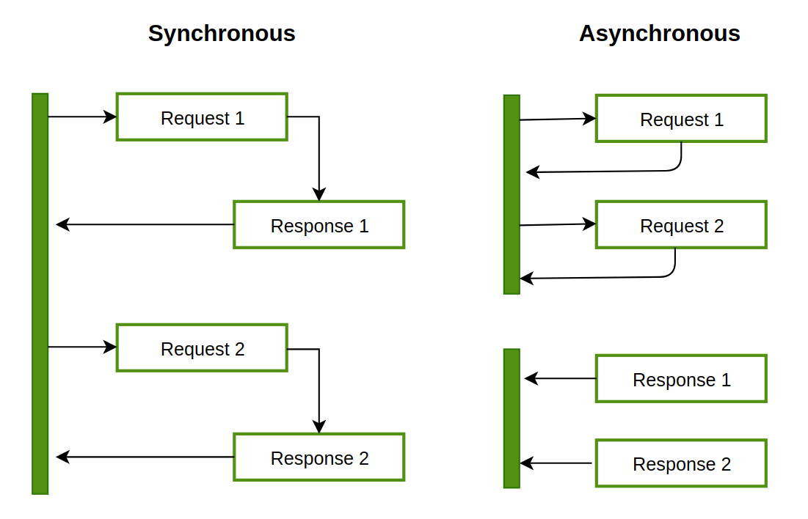

하드카피 출간!
더 자세한 설명, 다양한 예제가 있는 출판본도 서점에서 만나보실 수 있습니다.
https://www.yes24.com/Product/Goods/126578252
---
온라인 강의
책 출간에 맞추어 인프런에서 새로운 강의 "세상에서 제일 쉬운 러스트 프로그래밍"도 오픈 예정입니다!
---
CH1. 러스트 시작하기
가장 사랑받는 언어, 러스트
print("Hello, Pythonista!")
fn main() { println!("Hello, Rustacean!"); }
파이썬은 최근 가장 인기가 높은 언어 중 하나입니다. 간결한 문법과 범용성 덕분에 서버 개발부터 딥러닝 모델 개발까지 다양한 분야에서 사용되고 있습니다. 하지만 파이썬은 개발 시의 높은 생산성을 위해 코드 실행 속도를 일정 부분 포기한 언어입니다. 특히 파이썬의 태생적 한계인 GIL(Global interpreter lock)때문에 빠른 연산이 필요한 작업이나 멀티스레딩 프로그램에서 좋은 성능을 내기 어려운 단점이 있습니다.
러스트는 높은 추상성으로 높은 생산성을 가지고 있는 동시에 C/C++의 99%에 가까운 성능을 가지고 있어서 빠른 연산속도가 필요한 분야에서 각광받고 있습니다. 2022년 스택오버플로우 개발자 설문조사의 "Loved vs Dreaded(사랑하는 언어 대 두려운 언어)"에서 러스트는 86.73%라는 높은 비율로 가장 사랑받는 언어로 선정되었습니다. 참고로, 러스트는 현재 7년 연속 가장 사랑받는 언어 1위로 선정되었습니다.

국내에서도 2022 프로그래머스 설문조사에 따르면 러스트는 5.3% 비율로 7위를 차지해 꽤 상위권에 위치해 있는 편입니다.

파이썬 개발자가 러스트를 배워야 하는 이유
왜 국내/외에서 러스트를 배우고 싶어할까요? 그리고 파이썬과 러스트의 어떤 차이점 때문에 파이썬 개발자들이 러스트를 배워야만 할까요?
첫째로, CPU 연산이 많이 필요한 코드를 러스트로 교체하면 빠르게 동작하는 프로그램을 만들 수 있습니다.
파이썬은 빠르게 코드를 작성할 수 있지만, 인터프리터 언어이기 때문에 다른 컴파일 언어에 비해서 속도가 느릴 수밖에 없습니다. 따라서 많은 계산이 필요한 데이터 분석이나 수치계산 분야에서는 이미 널리 쓰이는 pandas나 numpy와 같은 라이브러리가 C++로 작성되어 있습니다. 이와 비슷하게 파이썬 코드에서 병목 현상이 발생하는 부분을 러스트로 대체한 파이썬 함수나 패키지를 만들면 큰 성능 향상을 얻을 수 있습니다.
러스트와 자주 비교되는 언어인 고(Go)와 다르게, 러스트에는 가비지 콜렉터가 없기 때문에 훨씬 좋은 성능을 내게 됩니다. 이러한 특징 때문에 퍼포먼스가 매우 중요한 서비스에 자주 사용됩니다.
둘째로, 멀티스레딩 구현이 훨씬 쉽습니다.
파이썬에서 멀티스레딩 프로그램을 구현할 때 가장 많이 겪는 문제가 스레드 레이스 조건(race condition)입니다. 러스트만의 독특한 타입 시스템과 소유권(ownership) 모델 덕분에 코드가 컴파일될 때 발생할 수 있는 메모리 혹은 스레드 문제를 미리 찾아낼 수 있기 때문에 훨씬 안정적인 프로그램을 만들 수 있습니다.
특히 파이썬은 GIL(Global Interpreter Lock) 때문에 멀티스레딩이라 하더라도 한 번에 하나의 코어밖에 사용하지 않습니다. 하지만 러스트를 사용하면 GIL 락이 걸린 순간에 여러 스레드를 사용해 더 빠르게 계산을 완료할 수 있습니다.
마지막으로, 개발 도구가 매우 편리합니다.
러스트는 언어 입문서와 예제 모음집이 공식적으로 제공됩니다. 그리고 매우 친절한 컴파일러가 있습니다. 때로는 컴파일 시에 발생하는 오류에 대해 적절한 해결책을 컴파일러가 제시해 주기도 합니다. 러스트의 내장 패키지 매니저인 Cargo 덕분에 빌드, 테스트, 의존성 관리 등이 매우 간편합니다. 또한 Visual Studio Code와 같은 통합개발환경(Integrated Developement Environment, IDE) 지원이 잘 되어 있어 자동완성, 타입 검사, 포매팅 등을 자연스럽게 사용할 수 있습니다.
이같은 점 때문에 7년 연속 "가장 사랑받는 프로그래밍 언어" 1위를 차지하고 있는 러스트는 더 이상 파이썬 개발자에게 선택이 아닌 필수가 되었습니다.
파이썬과 러스트의 차이점
언어상의 차이
먼저 기본적인 언어상의 차이를 살펴보면 다음과 같습니다.
| 파이썬 | 러스트 |
|---|---|
| 인터프리터 언어 | 컴파일 언어 |
| 강타입 언어이면서 동적 타입 언어 | 강타입 언어이면서 정적 타입 언어 |
| 메모리 관리에 가비지 콜렉터 사용 | 메모리 관리에 소유권 모델 사용 |
| 대부분의 경우 객체지향 프로그래밍 | 함수형 프로그래밍 |
| 스타일 가이드가 유연함 | 명확한 스타일 가이드 존재 |
러스트는 컴파일 언어이기 때문에 파이썬과 다르게 코드가 실행되기 전 컴파일 단계를 거쳐야 합니다. 하지만 이때 대부분의 오류와 버그를 잡아낼 수 있기 때문에 이는 오히려 러스트의 장점이기도 합니다. 파이썬은 객체 지향 프로그래밍 언어이지만, 러스트는 함수형 프로그래밍 언어이기 때문에 파이썬과는 코드 작성 패턴이 조금 다릅니다. 이 책에서는 파이썬 코드와 러스트 코드를 비교하면서 러스트를 설명하기 때문에 두 언어의 유사성과 차이점을 통해 더욱 쉽게 러스트를 배울 수 있습니다.
강타입 언어란?
서로 다른 타입의 변수를 사용해 계산을 수행했을 때, 모든 경우에 대해 에러가 발생하면 강타입 언어입니다. 예를 들어 자바스크립트는 약타입 언어입니다.
> console.log(1 + "2"); 13
툴 비교
아래 표는 파이썬과 러스트의 기본 툴들을 비교한 표입니다. 파이썬의 경우, pip 를 제외한 툴들은 일반적으로 별도 설치가 필요합니다. 하지만 러스트는 cargo 라는 툴을 통해 대부분의 기능을 바로 사용할 수 있습니다. cargo는 크레이트(crate)라고 불리는 패키지를 관리하는 도구이면서, 동시에 소스코드를 컴파일하고 빌드하는 시스템 빌드 매니저 기능도 포함하고 있습니다. 아래 표와 같이 cargo 에 내장된 기능은 포맷(format), 린트(lint), 테스트, 문서화, 벤치마크 등 다양합니다. 여기에 추가로 플러그인을 설치해서 더 다양하게 cargo 를 사용할 수도 있습니다.
| 파이썬 | 러스트 | |
|---|---|---|
| 패키지 관리자 | pip | cargo |
| 포매터 | black, yapf, autopep8 | cargo fmt |
| 린터 | pylint, flake8 | cargo clippy |
| 테스트 | pytest | cargo test |
| 프로젝트 환경 관리 | virtualenv, pipenv, pyenv, conda | cargo new |
| 문서화 | sphinx | cargo doc |
| 벤치마크 | cProfile, pyspy | cargo bench |
포맷과 린트의 차이점
포맷은 코드의 스타일을 기준에 맞춰 바꾸어주는 것을 의미하고, 린트는 코드가 문법 규칙에 맞는지를 검사합니다.
예를 들어 cargo doc을 실행하면, 아래와 같은 API 문서가 자동으로 생성됩니다. 이와 비슷하게 파이썬 문서를 생성해주는 패키지인 sphinx 의 경우, 별도의 추가 설치 뿐만 아니라 프로젝트 별로 섬세한 설정이 필요하다는 점을 생각해보면 이는 굉장히 편리한 기능입니다.

출처: https://docs.rs/serde_v8/0.49.0/serde_v8/
러스트의 경쟁 언어들
위에서 잠깐 설명했듯이, 러스트로 C/C++ 바인딩 함수나 패키지를 대신할 수 있습니다. 그렇다면 왜 C/C++로 직접 프로그램을 만들거나, 다른 비슷한 언어들을 사용하지 않는 걸까요? 일단 C/C++는 생산성이 매우 떨어집니다. 숙련된 개발자가 아니라면, 메모리 안정성과 스레드 안전성을 생각하며 C/C++로 프로그램을 만드는 것 자체가 굉장한 어렵습니다. 따라서 C/C++보다는 이와 비슷한 모던 프로그래밍 언어들이 훨씬 각광받고 있습니다.
아래 표는 Rust와 경쟁 관계에 있는 비슷한 언어들의 특징을 정리해놓은 표입니다. 먼저 Apple의 Swift는 컴파일 언어이며, 높은 생산성과 성능을 자랑하지만 주로 iOS 앱 개발에만 사용됩니다. 두 번째로 Go는 높은 생산성과 비교적 빠른 성능을 가지고 있습니다. 주로 네트워크/서버 분야에 많이 사용됩니다. Go는 메모리가 완전히 안전하지 않으며, 컴파일 타임에 이러한 오류를 감지하지 못하는 경우가 많아 안정성이 떨어집니다. 또한 가비지 콜렉션을 사용하기 때문에 러스트에 비해 성능이 떨어지는 단점이 있습니다. 이러한 이유 때문에 빠른 성능과 메모리 안정성이 필요한 경우 러스트가 최고의 옵션이 됩니다.
| Swift | Go | Rust | |
|---|---|---|---|
| 개발 | Apple | Mozilla | |
| 주 사용처 | iOS, iPadOs, macOS 어플리케이션 | 네트워크 및 서버 프레임워크/어플리케이션 | CPU 사용량이 많은 어플리케이션 혹은 시스템 소프트웨어 |
| 메모리 안전성 | 메모리 누수 문제가 아직 해결되지 않음 | goroutine 사용 시 잠재적인 메모리 누수 발생 가능 | 메모리 안전성 보장 |
Rust로 뭘 할 수 있나요?
러스트는 현재 다양한 분야에서 널리 사용되고 있습니다. 러스트 공식 문서에 설명에 따르면, 아래 네 분야에 가장 많이 사용됩니다.

시스템 소프트웨어의 CLI(Command Line Interface)를 만들거나, 고성능 네트워크가 필요한 분야에서 사용되고 있습니다. 러스트의 높은 성능 때문에 웹 어셈블리(WebAssembly)에서 다른 프로그래밍 언어 중에서 가장 많이 사용되고 있습니다. 하드웨어의 CPU나 메모리가 매우 제한적인 임베디드 분야에서는 전통적으로 C/C++가 가장 많이 사용되어 왔는데, 기존에 C/C++로 작성하던 코드를 러스트로 마이그레이션해 생산성과 안정성이 대폭 향상시킨 사례가 많이 보고되고 있습니다.
웹어셈블리란, 브라우저에서 자바스크립트가 아닌 다른 프로그래밍 언어를 실행시킬 수 있는 방법입니다. 즉 기존에 자바스크립트를 사용했을 때 발생하는 성능 저하를 러스트와 웹어셈블리를 사용하면 간단하게 해결할 수 있습니다.

가장 유명한 러스트 프로젝트로는 암호화폐 솔라나(Solana)가 있습니다. "세계에서 가장 빠른 블록체인"이라는 표어가 보여주듯이 러스트의 성능과 안정성을 잘 이용하고 있는 프로젝트입니다. 솔라나를 이용해 NFT, DeFi 등 다양한 프로젝트가 이어져 나가고 있어서 솔라나는 러스트 생태계에 큰 역할을 하고 있습니다.

웹 어플리케이션의 백엔드로 러스트가 사용되기도 합니다. AppFlowy는 러스트로 작성된 노션(Notion) 대체제로, 온라인에서 문서를 작성하고 협업할 수 있는 오픈소스 도구입니다.

러스트로 모바일 게임을 제작할 수도 있습니다. 가장 유명한 프로젝트로는 Bevy가 있습니다. Bevy를 사용하면 브라우저에서 게임을 실행하거나, 안드로이드, iOS 등 모바일 앱으로 게임을 만들 수도 있습니다.
이처럼 러스트는 이미 다양한 분야에서 활용되고 있습니다.
러스트 사용 실제 사례들
러스트는 실제 산업 전반에서 다양하게 사용되고 있습니다. 특히 빠른 계산 성능이 필요한 복잡한 프로그램에서 그 진가를 발휘하고 있습니다. 다음은 여러 유명 IT 회사들에서 러스트를 실제로 사용하고 있는 사례들입니다.
Dropbox
드랍박스는 클라우드 저장소 서비스를 운영하는 회사입니다. 드랍박스에서 가장 핵심적인 기능 중 하나는 로컬 컴퓨터에 있는 데이터를 원격 클라우드에 빠르게 동기화하는 것입니다. 기존에 C++로 작성되어 있었던 동기화 로직을 러스트로 재작성했다고 합니다.
Figma
피그마는 UI 프로토타입을 제작할 수 있는 도구입니다. 웹 기반으로 동작하기 때문에, 화면에 결과를 빠르게 보여주는 것이 중요합니다. 기존의 타입스크립트 서버를 러스트로 재작성한 결과, 비약적인 성능 향상을 얻을 수 있었습니다.
npm
npm은 Node.JS의 패키지 저장소로, 노드 패키지를 다운받으려면 반드시 거쳐야 하는 서비스입니다. 레지스트리 서비스(registry service)의 병목 현상을 해결하기 위해 다양한 프로그래밍 언어를 고려했다고 합니다. Node.JS, Go, Java 등으로 실제 구현도 해보았지만 결과적으로는 러스트가 채택되었습니다.
Discord

디스코드는 기존에 Go로 작성된 서비스 백엔드에서 간헐적인 성능 하락이 발생하는 것을 발견했습니다. 위 그래프에서 보라색이 Go 구현체입니다. 주기적으로 CPU 피크가 발생하고 이때문에 응답시간에도 피크가 발생하는 것을 알 수 있습니다. 이런 현상의 원인은 Go의 가비지 컬렉터 때문으로, 러스트로 재작성한 후 CPU 사용량이 안정화되고, 응답 시간이 훨씬 짧아진 것을 알 수 있습니다.
이외에도 다양한 기업에서 러스트를 도입해 사용하고 있습니다.
- 페이스북에서는 백엔드 서버를 작성하는 언어 중 하나로 러스트를 채택했습니다.
- 러스트의 후원 재단인 모질라에서 개발하는 파이어폭스 브라우저의 엔진(Servo Engine)은 러스트로 작성되었습니다.
- Next.js의 컴파일 엔진은 러스트로 재작성되었습니다.
- AWS(아마존웹서비스)의 Lambda에서 컨테이너는 FireCracker라는 러스트 툴 위에서 실행됩니다.
- Sentry 역시 파이썬의 낮은 퍼포먼스를 러스트를 도입해 해결했습니다.
러스트 개발 환경 설정하기
러스트로 코드를 작성하기 위해, 필요한 도구들을 설치해주어야 합니다. 운영체제별로 설치 방법이 조금씩 다르므로 사용하고 계신 환경에 맞추어 설치하세요.
러스트 툴체인 설치하기
가장 먼저 러스트 언어를 컴파일해주는 컴파일러와 시스템 매니저인 cargo 를 설치합니다. 이 두 가지 도구는 rustup 이라고 하는 툴체인에 포함되어 있기 때문에, rustup만 설치하면 됩니다. 공식 홈페이지 https://rustup.rs/# 로 접속하면 운영체제별 설치 방법을 볼 수 있습니다.
macOS / Linux
맥(macOS) 또는 리눅스 사용자들은 아래 명령어를 통해 간단하게 설치가 가능합니다.
$ curl --proto '=https' --tlsv1.2 https://sh.rustup.rs -sSf | sh
Windows
윈도우 사용자의 경우 위 홈페이지에서 34비트 또는 64비트 설치 파일을 다운로드 받습니다.
Visual Studio Code 설치 및 설정하기
이 책에서는 통합 개발 환경(Integrated Development Environment, IDE)로 Visual Studio Code(이하 VSCode)를 사용합니다. 러스트에서 제공하는 컴파일, 디버깅, 언어 서버(Language server) 등의 기능을 쉽고 편리하게 사용할 수 있기 때문에 VSCode를 사용하시는 것을 추천합니다.
VSCode 설치
Visual Studio Code 다운로드 페이지로 이동한 다음, 운영체제에 맞는 설치파일을 다운받고 설치를 진행합니다.
확장 프로그램(Extension) 설치
이제 Visual Studio Code를 실행합니다. Visual Studio Code에서는 rust-analyzer란 확장 프로그램 하나만 설치하면 됩니다. rust-analyzer는 러스트 코드를 작성하는데 많은 도움을 주는 확장 프로그램입니다. 코드 자동완성, 에러 표시, 관련 문서 표시 등 다양한 기능이 있지만 가장 좋은 기능 중 하나는 변수의 타입을 추측해서 화면에 표시해주는 것입니다. 자세한 내용은 나중에 소스코드를 작성할 때 다시 살펴보겠습니다.
설치를 위해서는 화면 왼쪽의 블록 모양 버튼을 누른 다음, rust-analyzer를 검색합니다. 가장 위에 나오는 확장 프로그램을 설치합니다.
프로젝트 생성하기
프로그래밍에서는 항상 프로젝트를 폴더 단위로 관리합니다. 여기서는 새로운 프로젝트를 하나 생성해 보겠습니다.

Visual Studio Code의 상단 메뉴에서, "파일 - 폴더 열기"를 클릭합니다. 폴더를 새로 생성한 다음, 해당 폴더를 선택합니다. 그러면 창이 새로고침되고 빈 프로젝트 화면이 나타납니다.
파이썬 폴더 만들기
우리는 파이썬 코드와 러스트 코드를 비교하면서 러스트 문법을 배워나갈 것입니다. 따라서 파이썬 프로젝트와 러스트 프로젝트를 같은 폴더 밑에 만들어 두겠습니다. 현재 경로가 /code/temp/라고 했을 때, 하위 폴더로 "python" 폴더를 하나 생성합니다. 그리고 폴더 안에 파이썬 코드가 들어갈 main.py 모듈을 생성합니다. 현재 파일 구조는 다음과 같습니다.
.
└── python
└── main.py
러스트 폴더 만들기
러스트 프로젝트를 시작하는 방법은 두 가지가 있습니다.
아직 과정을 따라하지 마세요! 저희는 두 번째 방법으로 폴더를 만들 것입니다.
첫째, 터미널에서 빈 폴더에서 cargo init 으로 프로젝트를 시작합니다. 이 경우에는 현재 폴더에 러스트 프로젝트가 생성됩니다.
$ cargo init
예를 들어, 터미널에서 현재 경로가 /code/temp/ 라고 했을 때, cargo init 을 수행하면 이 폴더가 프로젝트 폴더가 됩니다. 방금 파이썬 폴더를 새로 만들었기 대문에, 현재 폴더의 파일 목록을 출력하는 ls 명령어를 수행한 결과는 다음과 같습니다.
/code/temp $ ls
Cargo.toml src python
현재 폴더에서 cargo init 으로 프로젝트를 생성하는 경우에는 현재 폴더 이름이 프로젝트 이름이 됩니다. 따라서 현재 생성된 프로젝트 이름은 "temp"가 됩니다. 프로젝트 이름을 확인하는 방법은 잠시 후에 Cargo.toml 파일을 설명하면서 다루겠습니다.
이제 두 번째 방법으로 프로젝트 만들기를 함께 해보겠습니다. 먼저 터미널을 열기 위해서 메뉴의 "터미널 - 새 터미널"을 클릭합니다. 또는 단축키 Ctrl + Shift + `를 입력해도 됩니다. 이제 터미널에 cargo new <프로젝트명> 명령어를 입력해서 프로젝트 이름을 직접 설정할 수 있습니다. 이 경우에는 하위 폴더가 해당 이름으로 만들어집니다. 현재 폴더 경로가 동일하게 /code/temp/ 라고 했을 때, 다음과 같이 실행해 보겠습니다.
$ cargo new rust_part
그러면 현재 폴더 밑에 "rust_part"라는 폴더가 생성되고, 이 폴더 안에 파일이 생성됩니다. 이제 현재 경로에서는 아래와 같이 두 개의 폴더가 존재합니다.
/code/temp $ ls
rust_part python
최종적으로 현재 폴더의 파일 구조는 다음과 같습니다.
.
├── rust_part
│ ├── Cargo.toml
│ └── src
└── python
└── main.py
러스트 폴더 구조
러스트의 프로젝트 폴더에는 다음과 같은 파일 구조가 만들어집니다.
.
├── Cargo.toml
└── src
└── main.rs
먼저 Cargo.toml 파일은 프로젝트의 모든 설정값을 가지고 있는 파일입니다. 파일의 구조는 아래와 같이 생겼습니다.
[package]
name = "rust_part"
version = "0.1.0"
edition = "2021"
# See more keys and their definitions at https://doc.rust-lang.org/cargo/reference/manifest.html
[dependencies]
[package]부분에는 현재 프로젝트의 이름과 버전, 그리고 러스트 에디션 버전이 들어 있습니다. 러스트 에디션은 현재 연도보다 이전 연도가 들어 있을 수도 있는데, 이는 러스트 버전의 호환성을 위해서 버전을 에디션으로 구분하고 있기 때문에 그렇습니다.[dependencies]는 현재 프로젝트에서 설치하는 크레이트(러스트에서는 패키지를 크레이트(crate)라고 부릅니다)의 이름과 버전이 들어가게 됩니다. 나중에 크레이트를 설치할 때 자세히 다루도록 하겠습니다.
src 폴더가 실제 러스트 소스코드가 들어가는 곳입니다. 현재는 코드의 시작 지점(entry point)인 main.rs 파일만 들어 있습니다. 해당 파일에는 main() 함수가 들어 있는데, main.rs 가 컴파일되고 바이너리가 실행될 때 바로 이 main() 함수가 실행됩니다. 따라서 반드시 main.rs 파일이 존재해야 하고, 이 파일 안에 main() 함수가 존재해야 코드가 컴파일되고 실행될 수 있습니다.
러스트 코드 실행하기
이번에는 러스트 코드를 컴파일하고 실행하는 방법을 알아보겠습니다.
코드 컴파일하기
main.rs파일을 열어보면, main() 함수에 "Hello, world!" 라는 문자열을 프린트하는 println! 만 들어있습니다.
fn main() { println!("Hello, world!"); }
코드를 컴파일하려면 cargo build를 사용합니다.
$ cargo build
Compiling rust_part v0.1.0 (/Users/code/temp)
Finished dev [unoptimized + debuginfo] target(s) in 2.07s
러스트 폴더 밑에 target 이라는 폴더가 생성되고, 여기 밑에 debug 폴더를 열어보면 rust_part라는 바이너리 파일이 존재합니다.

바이너리 파일을 실행하면 다음과 같이 출력됩니다.
$ ./target/debug/rust_part
Hello, world!
기본적으로 빌드는 디버그 모드로 수행됩니다. 디버그 모드는 좀더 빨리 컴파일이 수행되지만, 프로그램의 실행 속도는 느려질 수 있습니다. 하지만 실제로 프로그램을 배포할 때는 컴파일 단계에서 코드를 최적화해주어야 성능을 제대로 사용할 수 있습니다. 따라서 프로그램을 배포할 때에는 다음과 같이 --release 옵션을 추가로 사용합니다.
$ cargo build --release
Compiling notebook v0.1.0 (/Users/code/temp)
Finished release [optimized] target(s) in 1.34s
이때 바이너리 파일이 target/release 폴더에 생성되는 것에 주의하세요.
코드 실행하기
위에서 코드를 컴파일한 다음 바이너리를 실행하는 방법을 소개했습니다. 그런데 컴파일한 뒤에 바이너리를 target 폴더에서 찾아서 실행하는 것이 너무 번거롭습니다. 그래서 러스트에서는 cargo run 명령어로 컴파일과 바이너리 실행을 한 번에 할 수 있습니다.
$ cargo run
Compiling temp v0.1.0 (/Users/code/temp)
Finished dev [unoptimized + debuginfo] target(s) in 4.55
Running `target/debug/temp`
Hello, world!
명령어를 터미널에 입력하면, 먼저 코드가 컴파일되고 바이너리가 실행되는 것을 알 수 있습니다. 바이너리가 실행되어 Hello, world! 가 터미널에 출력됩니다.
cargo run명령어를 사용했을 때, 기본적으로는 디버그 모드로 빌드됩니다. 만일 릴리즈 모드로 실행해보고 싶다면--release옵션을 추가하면 릴리즈 모드로 빌드 후 바이너리를 실행해줍니다.
rustfmt
러스트에는 내장 코드 포맷터인 rustfmt가 설치되어 있습니다. VSCode에서는 단축키를 사용해 코드를 포맷할 수 있습니다. 윈도우 또는 리눅스의 경우는 Alt + Shift + F, 맥의 경우는 Option + Shift + F를 누르면 됩니다. 또는 터미널에서 rustfmt src/main.rs 명령어를 사용해도 됩니다.
아래 코드를 main.rs 에 입력하고, 단축키를 사용해 포맷을 실행해 보겠습니다.
fn main( ){ println! ( "Please run 'rustfmt!'" ); }
실행 결과
fn main() { println!("Please run 'rustfmt!'"); }
공백 간격, 줄바꿈 등을 rustfmt가 알아서 처리해줍니다. 이처럼 공식적인 공통 포맷터가 존재하기 때문에 어떤 러스트 프로젝트라도 일관적인 소스코드 관리가 가능하다는 것이 러스트의 큰 장점입니다.
만약 현재 파일을 포함한 프로젝트의 전체 러스트 코드를 한꺼번에 포매팅하고 싶다면 아래 명령어를 사용합니다.
cargo fmt
CH2. 변수
이번 장부터는 파이썬과 러스트 코드를 동시에 비교하면서 러스트 언어의 개념들을 설명해 보도록 하겠습니다.
값 출력하기
파이썬에서는 모든 객체를 print 함수로 출력할 수 있습니다. 문자열 "Hello, world!" 를 출력하는 예제는 다음과 같습니다.
print("Hello, world!")
반면 러스트에서는 print 같은 편리한 함수 대신, 매크로(macro)를 사용해 값을 출력합니다. 매크로란 사전 정의된 편리한 기능을 의미하고, 항상 이름 뒤에 !가 붙습니다. 매크로에 대해서는 뒤에서 다시 자세히 설명하겠습니다. 러스트 코드는 매 줄의 마지막에 세미콜론(;) 이 붙습니다. 세미콜론이 없으면 컴파일 에러가 발생하니 주의하세요. 위의 파이썬 예제와 동일하게 문자열 "Hello, world!" 를 출력하는 코드는 다음과 같습니다.
fn main() { println!("Hello, world!"); }
변수 선언
변수란 메모리에 값을 저장하기 위해 사용되는 개념입니다. 변수의 이름을 통해 메모리에 저장된 값을 참조해서 사용할 수 있습니다. 파이썬은 변수 선언 시 타입을 명시하지 않아도 되기 때문에 실수값과 정수값 모두 변수에 바로 할당이 가능합니다. 파이썬에서 변수 x 와 y 를 선언하고 실수 1.0과 정수 10을 할당한 다음, f-string을 사용해 두 변수의 값을 출력합니다. main.py 에 다음 내용을 입력합니다.
x = 1.0
y = 10
print(f"x = {x}, y = {y}")
파이썬 코드 실행 결과는 다음과 같습니다. 폴더를 하위 폴더인 "python"으로 이동한 다음 코드를 실행해야 합니다.
/code/temp/python $ python main.py
x = 1.0, y = 10
러스트에서는 let 키워드를 사용해 변수를 선언합니다. 그리고 타입을 : 뒤에 명시합니다.
변수명 타입 값
let x: i32 = 10;대부분의 경우에서는 컴파일러가 타입을 추측해주지만, 몇몇 경우에는 직접 타입을 명시해줘야 하기도 합니다. 아래 예제에서는 실수 1.0을 f64 타입으로 선언했지만, 실제로는 변수 y와 같이 명시적으로 타입을 적어주지 않아도 컴파일이 됩니다. 다음으로 prinln! 매크로에서는 문자열의 {} 자리에 변수가 순서대로 들어가 전체 문자열이 완성됩니다.
fn main() { let x: f64 = 1.0; let y = 10; println!("x = {}, y = {}", x, y); }
하위 폴더인 "rust_part" 폴더로 이동한 다음, cargo run 을 실행해 결과를 확인해보겠습니다.
/code/temp/rust_part $ cargo run
x = 1, y = 10
파이썬과 러스트 모두 같은 결과가 나오는 것을 알 수 있습니다.
앞으로 파이썬 코드와 러스트 코드를 동시에 실행해야 하기 때문에, VSCode 터미널의 분할(split) 기능을 사용하면 편리합니다. 터미널을 연 다음, 우측 상단의 "터미널 분할"을 클릭합니다.

그리고 분할된 화면에서 하나는 파이썬 프로젝트를, 나머지는 러스트 프로젝트로 이동해 두면 편리하게 코드를 실행할 수 있습니다.

작명 규칙
파이썬과 러스트의 작명 규칙은 정말 비슷합니다. 대표적인 몇 가지 경우를 살펴보면 다음과 같습니다.
| 파이썬 | 러스트 | |
|---|---|---|
| 변수 | snake_case = 3 | let snake_case = 3; |
| 함수 | def my_function | fn my_function |
| 클래스/구조체 | class MyClass | struct MyStruct |
| 상수 | SCREAMING_SNAKE_CASE = 1 | const SCREAMING_SNAKE_CASE: i32 = 1; |
- 변수와 함수의 경우, 둘 다 스네이크 케이스(Snake case)를 사용합니다. 스네이크 케이스란, 모든 단어를 숫자 또는 알파벳 소문자로 작성하고, 단어 구분은 언더바(_)로 합니다. 단 변수명은 반드시 알파벳 소문자로만 시작해야 합니다.
- 파이썬의 클래스와 러스트 구조체는 파스칼 케이스(Pascal case)를 사용합니다. 파스칼 케이스는 대문자로 단어를 시작하고, 단어 구분을 대문자로 하는 작명법입니다.
- 상수의 경우는 둘 다 스크리밍 스네이크 케이스(Screaming snake case)를 사용합니다. 모든 알파벳이 대문자이고, 단어 구분을 언더바로 합니다. 단, 러스트의 상수는 반드시 타입을 명시해야 합니다.
불변성
러스트에서 변수를 다룰 때, 파이썬에는 없는 두 가지 개념이 있습니다. 러스트의 모든 변수는 기본적으로 불변(immutable)입니다. 파이썬에서는 변수를 선언한 다음 다른 값을 넣는 것이 매우 자유롭습니다. 변수의 타입도 상관 없이 새로운 값을 마음대로 넣을 수 있습니다.
x = 1
x = "2"
x = 3.141592
하지만 러스트에서는 조금 다릅니다. 예를 들어, 아래 코드와 같이 let 키워드로 변수를 선언하고, 해당 변수의 값을 바꾸려고 한다면 컴파일이 되지 않습니다.
fn main() {
let x = 1;
x = 2; // won't compile!
println!("{}", x);
}
위 코드를 실행해보면 다음과 같은 에러가 발생합니다.
error[E0384]: cannot assign twice to immutable variable `x`
--> src/main.rs:3:5
|
2 | let x = 1;
| -
| |
| first assignment to `x`
| help: consider making this binding mutable: `mut x`
3 | x = 2; // won't compile!
| ^^^^^ cannot assign twice to immutable variable
에러의 내용을 읽어보면, 처음 let x=1 로 선언된 변수가 불변(immutable)이기 때문에 값을 두 번 할당할 수 없다고 합니다. 그리고 컴파일러가 "help"에서 문제 해결 방법을 소개하는데, 변수 x 를 가변 변수(mutable)로 다음과 같이 선언하라고 합니다.
let mut x = 1;컴파일러의 조언에 따라 수정된 코드를 아래와 같이 작성하고 실행해봅시다.
fn main() {
let mut x = 1;
x = 2;
println!("{}", x);
}
이제 콘솔에 값 2가 잘 출력되는 것을 알 수 있습니다. 이처럼, 러스트에서는 모든 변수의 값이 불변으로 선언이 됩니다. 따라서 값을 바꾸고자 하는 변수에는 mut 키워드로 가변성을 부여해야 합니다.
섀도잉
한번 선언한 불변 변수의 값을 변경하는 것은 불가능하지만, 변수 자체를 새로 선언하는 것은 가능합니다. 이렇게 변수 이름을 재사용해서 새로운 변수를 다시 선언하는 것을 섀도잉(shadowing)이라고 합니다.
섀도잉을 사용할 경우, mut 키워드 없이도 새로운 값을 변수에 할당할 수 있고, 새로운 변수이기 때문에 타입도 변경할 수 있습니다. 아래 예제에서는 변수 x 에 처음에는 "5" 라는 문자열을 할당했지만, 그 다음에는 섀도잉을 사용해 x에 정수 6을 할당했습니다. 코드를 실행해보면 정상적으로 컴파일됩니다.
fn main() { let x = "5"; let x = 6; // x is redeclared as 6 println!("The value of x is: {}", x); // 6 }
타입
C언어 계열과 마찬가지로, Rust는 타입이 존재합니다. 러스트의 원시 타입(primitive type) 목록은 다음과 같습니다.
| 이름 | 타입 |
|---|---|
| 8비트 정수 | i8 |
| 16비트 정수 | i16 |
| 32비트 정수 | i32 |
| 64비트 정수 | i64 |
| 128비트 정수 | i128 |
| 아키텍처 | isize |
| 부호 없는 8비트 정수 | u8 |
| 부호 없는 16비트 정수 | u16 |
| 부호 없는 32비트 정수 | u32 |
| 부호 없는 64비트 정수 | u64 |
| 부호 없는 128비트 정수 | u128 |
| 부호 없는 아키텍처 | usize |
| 불리언 | bool |
| 문자열 | String |
| 문자열 슬라이스 | str |
| 32비트 부동소수점 실수 | f32 |
| 64비트 부동소수점 실수 | f64 |
isize와usize는 컴퓨터 아키텍처가 32비트인지 64비트인지에 따라서 값이 달라지는 기본 포인터 크기입니다.
타입 추론
러스트 코드를 작성할 때 대부분의 경우에는 개발자가 변수에 타입을 지정하지 않아도 앞에서 설치한 rust-analyzer가 알아서 타입을 추론(inference)해서 화면에 보여줍니다. 비슷한 원리로 코드가 컴파일될 때에는 컴파일러가 타입을 추론해서 변수를 선언하게 됩니다. 이때, 추측되는 타입의 기본값은 정수형은 i32 , 실수형은 f64 입니다.
다음 코드를 VSCode에 붙여넣으면 아래 그림과 같이 타입이 추론되는 것을 볼 수 있습니다.
fn main(){ let x = 1; let y = 1.0; println!("{} {}", x, y); }
마찬가지로 이 상태로도 컴파일이 잘 실행되고, 컴파일러가 각 변수를 i32 와 f64 로 추측해서 컴파일합니다.
실행결과
1 1
타입 캐스팅
변수의 타입을 다른 타입으로 바꾸는 타입 변환(Casting)도 가능합니다. 파이썬에서는 타입 이름을 바로 사용해 타입 변환을 수행합니다.
x = 1.2
y = int(x)
print(f"{x} -> {y}");
실행결과
1.2 -> 1
러스트에서는 아래와 같이 as 키워드를 사용하면 됩니다. 예제에서는 64비트 실수 f64 로 선언된 변수 x 의 값을 32비트 정수 i32 로 변환해 y 변수에 할당하고 있습니다. 실수에서 정수로 변환했기 때문에 값이 1.2에서 1로 변경됩니다.
fn main() { let x: f64 = 1.2; let y = x as i32; println!("{} -> {}", x, y); }
실행결과
1.2 -> 1
상수
상수(constant)란, 한 번 선언되면 값이 바뀌지 않는 변수를 의미합니다. 먼저 파이썬에서 상수를 다음과 같이 선언해 보겠습니다.
THRESHOLD = 10
def is_big(n: int) -> bool:
return n > THRESHOLD
if __name__ == '__main__':
print(THRESHOLD)
print(is_big(THRESHOLD))
THRESHOLD = 5
실행 결과
10
False
일반적으로 상수는 모듈의 가장 위에 선언합니다. 이렇게 선언하게 되면, 모듈의 모든 범위에서 상수에 접근하는 것이 가능합니다. is_big 이라는 함수 안에서도 상수 THRESHOLD 를 사용할 수 있고, 함수를 실행하는 if 문 안에서도 THRESHOLD 를 사용합니다. 하지만 파이썬의 모든 변수는 기본적으로 가변이기 때문에 위에서 선언한 상수를 변경할 수 있다는 문제가 있습니다.
러스트에서 동일한 내용을 구현해 보겠습니다. 여기서 is_big 이라는 새로운 함수를 선언했는데, 함수의 선언에 대한 자세한 설명은 다음 챕터에서 다룰 예정입니다.
const THRESHOLD: i32 = 10; fn is_big(n: i32) -> bool { n > THRESHOLD } fn main() { println!("{}", THRESHOLD); println!("{}", is_big(5)); }
실행결과
10
false
러스트에서는 상수를 const 키워드로 선언하게 됩니다. 이렇게 선언된 상수는 불변이기 때문에 값을 변경할 수 없습니다. 파이썬에서 상수를 모듈 전체에서 접근할 수 있었던 것처럼, 마찬가지로 러스트에서도 선언된 상수 THRESHOLD 를 함수 is_big 과 main 내부에서 참조하는 것이 가능합니다. 하지만 값이 불변이기 때문에 THRESHOLD = 5;와 같이 새로운 값을 할당하게 되면 오류가 발생합니다.
const THRESHOLD: i32 = 10;
fn is_big(n: i32) -> bool {
n > THRESHOLD
}
fn main() {
println!("{}", THRESHOLD);
println!("{}", is_big(5));
THRESHOLD = 5;
}
실행결과
--> src/main.rs:11:15
|
11 | THRESHOLD = 5;
| --------- ^
| |
| cannot assign to this expression
컴파일러가 친절하게 상수 THRESHOLD 에는 새로운 값을 할당할 수 없다고 알려주게 됩니다. 실행하기 전 편집기 안에서도 빨간 줄로 해당 코드에 문제가 있음을 알려주기 때문에 문제를 빠르게 찾고 해결할 수 있습니다.

CH3. 함수
이번 챕터에서는 함수의 선언과 사용에 대해서 자세히 다루겠습니다.
함수 선언
함수의 입력으로 정수 두 개를 받은 다음 두 수의 합을 리턴하는 add 라는 함수를 만들어 보겠습니다.
먼저 파이썬 코드는 다음과 같습니다. 여기서 타입 힌트를 사용해 파라미터와 리턴값의 타입을 명시할 수 있습니다. 파라미터 변수 이름 뒤에 :int를 붙여 이 파라미터의 타입이 int임을 명시합니다. 함수에서 리턴하는 값은 함수명 뒤에 -> int와 같이 표기합니다.
def add(num1: int, num2: int) -> int:
return num1 + num2
동일한 기능의 러스트 코드는 다음과 같습니다. 함수의 선언에 fn 키워드를 사용하고, 함수에서 실행할 코드를 중괄호로 묶어줍니다. 그리고 파이썬과 비슷하게 파라미터에는 :i32로 타입을 표기하고, 리턴값에는 -> i32처럼 화살표를 사용해 타입을 명시했습니다.
fn add(num1: i32, num2: i32) -> i32 {
return num1 + num2;
}이때 주의해야 하는 점은 파이썬에서는 타입을 생략할 수 있지만, 러스트에서는 반드시 파라미터와 리턴 타입을 명시해야 한다는 것입니다. 타입이 잘못되거나 표기되지 않았다면 컴파일되지 않습니다.
러스트는 코드 마지막에서 return 키워드를 생략할 수 있습니다. 이때 세미콜론이 없다는 점에 주의하세요. 다음 코드는 위에서 정의한 add 와 완전히 동일합니다.
fn add(num1: i32, num2: i32) -> i32 {
num1 + num2
}이제 add 함수를 메인 함수에서 호출하고 값을 프린트해 보겠습니다.
fn add(num1: i32, num2: i32) -> i32 { num1 + num2 } fn main() { println!("{}", add(1, 2)); }
실행 결과
3
함수의 호출은 파이썬과 동일하게 함수명(파라미터, 파라미터, ...) 와 같이 할 수 있습니다.
여러 개의 값 리턴하기
이번에는 함수에서 여러 개의 값을 리턴하는 경우를 살펴보겠습니다. 입력받은 두 정수를 순서를 바꿔서 리턴하는 함수를 만들어 보겠습니다. 먼저 파이썬에서 swap 이라는 함수를 아래와 같이 구현합니다. 이렇게 여러 개의 값을 리턴하는 경우, 리턴 타입이 튜플이 됩니다.
def swap(num1: int, num2: int) -> tuple[int, int]:
return num2, num1
num1, num2 = swap(1, 2)
print(f"{num1}, {num2}")
실행 결과
2, 1
이번에는 러스트 코드입니다. 러스트도 여러 개의 값을 리턴하는 경우, 값들이 튜플로 묶이게 됩니다. 따라서 리턴하는 두 정수를 소괄호로 묶어서 (num2, num1) 과 같이 튜플임을 표시합니다. 따라서 함수의 리턴 타입도 튜플로 (i32, i32) 표기합니다.
fn swap(num1: i32, num2: i32) -> (i32, i32) { (num2, num1) } fn main() { let (num1, num2) = swap(1, 2); println!("{num1}, {num2}"); }
실행 결과
2, 1
러스트의 튜플에 관해서는 자료구조 챕터에서 자세히 다루겠습니다.
만일 main 함수와 같이, 함수에서 리턴하는 값이 없는 경우에는 리턴 타입을 생략하거나 ()와 같이 아무 것도 리턴하지 않음을 표기할 수 있습니다. 파이썬에서 아무것도 리턴하지 않는 경우, -> None 으로 표기하거나 표기를 생략하는 것과 비슷합니다.
fn do_nothing() -> () { return (); } fn me_too() {} fn main() { println!("{:?}", do_nothing()); println!("{:?}", me_too()); }
스코프
스코프(scope)란 변수에 접근할 수 있는 범위를 의미합니다. 먼저 파이썬에서는 스코프를 기본적으로 함수 단위로 구분합니다.
실제로는 파이썬은 LEGB 룰이라고 불리는 좀더 복잡한 스코프 규칙을 가지고 있지만, 여기서는 단순화해서 함수 기준으로 설명합니다.
def hello(name: str):
num = 3
print(f"Hello {name}")
if __name__ == '__main__':
my_name = "buzzi"
if True:
print("My name is", my_name)
my_name = "mellon"
hello(my_name)
# print(num) # error
실행 결과
My name is buzzi
Hello mellon
코드 실행 부분을 먼저 보면, my_name 변수에 "buzzi" 라는 문자열을 할당합니다. 그 다음 if 문에서 변수 값을 프린트해보면 "buzzi"가 프린트됩니다. 하지만 그 다음 라인에서 my_name = "mellon" 으로 변수의 값을 바꿔 버렸습니다. 파이썬은 스코프를 함수 단위로만 구분하고 있기 때문에 이제 코드 전체에서 값이 바뀌게 됩니다. 따라서 hello(my_name)의 출력은 Hello mellon이 됩니다. 마지막으로 # print(num) # error를 주석 해제하고 실행해 보면 에러가 발생합니다. hello 함수 안에서 선언된 num 이라는 변수를 프린트하기 때문입니다. 즉, num 의 스코프가 hello 함수이기 때문에 함수 바깥에서 참조할 수 없는 것입니다.
이번에는 러스트의 스코프를 살펴보겠습니다.
fn hello(name: String) { let num = 3; println!("Hello {}", name); } fn main() { let my_name = "buzzi".to_string(); { println!("My name is {}", my_name); let my_name = "mellon"; } hello(my_name); // println!("{}", num); // error }
실행 결과
My name is buzzi
Hello buzzi
러스트에서는 스코프를 중괄호 "{}" 기준으로 구분합니다. 먼저 my_name 변수를 "buzzi"로 할당했습니다. 그 다음, 중괄호 안에서 my_name 을 프린트해보면 "buzzi"가 프린트됩니다. 중괄호 안에서 my_name 을 "mellon"으로 할당하더라도, 중괄호를 벗어나면 중괄호 안에서 선언된 my_name 의 스코프가 끝나게 되므로 중괄호 바깥에서는 my_name 의 값은 원래대로 "buzzi"가 됩니다. 따라서 hello(my_name)의 실행 결과는 "Hello buzzi"가 됩니다. 파이썬에서와 마찬가지로, hello 안에서 선언된 변수인 num은 함수 바깥에서 참조할 수 없기 때문에 println!("{}", num); 을 주석 해제한 다음 코드를 실행하면 에러가 발생합니다.
러스트의 스코프는 나중에 배울 소유권 모델과 밀접한 연관이 있기 때문에 중괄호를 기준으로 스코프가 변경된다는 사실을 꼭 기억해 두세요.
러스트의 주석은
//로 표기합니다.
익명 함수
익명 함수란 이름이 없는 함수라는 뜻으로, 프로그램 내에서 변수에 할당하거나 다른 함수에 파라미터로 전달되는 함수입니다. 따라서 익명 함수를 먼저 만들어 놓고 나중에 함수를 실행할 수 있습니다.
파이썬에서는 익명 함수를 람다 함수(Lambda function)이라고 부릅니다. lambda 키워드를 쓰고, 파라미터: 리턴값 형식으로 함수의 내용을 정의합니다. 이렇게 만든 람다 함수를 변수 my_func 에 할당해 두었다가 print 함수 안에서 호출하는 예제입니다.
my_func = lambda x: x + 1
print(my_func(3))
실행 결과
4
위 예제처럼 람다 함수는 다른 함수에 파라미터로 전달하는 것이 가능합니다. 러스트에도 람다 함수와 비슷한 개념이 있는데 바로 클로저(Closure)입니다. 위에서 만든 람다 함수와 동일한 기능을 하는 클로저를 만들어 보겠습니다. 클로저는 파라미터를 | | 의 사이에 선언하고, 그 뒤에 함수에서 리턴하는 부분을 작성합니다.
fn main() { let my_func = |x| x + 1; println!("{}", my_func(3)); }
실행 결과
4
이때 컴파일러가 클로저의 파라미터와 리턴값의 타입을 i32로 추측해서 보여줍니다. 이는 실제 함수가 실행되는 부분인 my_func(3)로부터 변수 x의 타입을 알 수 있기 때문입니다. 이처럼 클로저는 함수와 다르게 타입을 명시할 필요가 없이 컴파일러가 타입을 추론하도록 할 수 있습니다. 하지만 타입을 명시하는 것도 가능합니다.
fn main() { let my_func = |x: i32| -> i32 { x + 1 }; println!("{}", my_func(3)); }
타입을 명시해야 하는 경우, 함수 실행 부분을 중괄호로 묶어 주어야 합니다.
람다 함수는 반드시 한 줄로만 작성해야 하지만, 클로저는 중괄호로 묶어주는 경우 여러 줄을 작성할 수 있습니다. 위 코드를 하나의 클로저로 바꿔 보겠습니다. 이때 입력받은 변수 x의 값을 바꾸기 위해 가변으로 선언하고, 첫 번째 줄에서 x에 1을 더해줍니다. 그 다음 x를 프린트합니다. 이제 my_func를 호출하면 동일하게 4가 출력됩니다.
fn main() { let my_func = |mut x: i32| { x = x + 1; println!("{}", x); }; my_func(3); }
참고로 파이썬과는 다르게 클로저의 재귀 호출은 아직 지원되지 않습니다. 파이썬에서 클로저를 이용해 피보나치 수를 계산하는 예제는 다음과 같습니다.
def fibonacci(n):
cache = {}
def fib(n):
if n in cache:
return cache[n]
if n < 2:
return n
cache[n] = fib(n - 1) + fib(n - 2)
return cache[n]
return fib(n)
fibonacci(10)
동일한 로직을 구현한 러스트 코드는 클로저가 자기 자신을 부를 수 없기 때문에 컴파일되지 않습니다.
fn fib(n: u32) -> u32 {
let cache = vec![0, 1];
let _fib = |n| {
if n < cache.len() {
cache[n]
} else {
let result = _fib(n - 1) + _fib(n - 2);
cache.push(result);
result
}
};
_fib(n)
}
fn main() {
println!("{}", fib(10));
}
CH4. 흐름제어
다음은 프로그램의 논리적 흐름을 결정할 수 있는 흐름제어문(control flow)에 대해서 알아보겠습니다.
if/else
if 문은 어떤 조건을 만족하는 경우, 그에 해당하는 코드를 실행하도록 논리적 분기를 만드는 방법입니다. 만일 조건이 만족되지 않으면 해당 분기의 코드는 실행되지 않고 넘어갑니다. 보통 if 문은 첫 번째 조건을 검사하는 부분인 if 와, 그 다음 조건을 만족하는지를 검사하는 else if , 그리고 모두 해당되지 않는 경우에 실행되는 else 로 구성됩니다.
파이썬에서 if문을 구현하면 다음과 같습니다. 항상 if 문은 if 라는 키워드로 시작합니다. 여기서는 변수 x 가 y 보다 작은지를 검사하고 있는데, x 는 1.0이고 y가 10이기 때문에 조건이 만족됩니다. 조건이 만족되는 경우에는 아래에 있는 다른 조건들은 검사하지 않고 넘어가기 때문에 실행 결과는 "x is less than y" 가 출력됩니다.
x = 1.0
y = 10
if x < y:
print("x is less than y")
elif x == y:
print("x is equal to y")
else:
print("x is not less than y")
실행 결과
x is less than y
만일 x의 값을 10으로 수정하고 다시 실행한다면 이번에는 "x is equal to y"가 출력될 것입니다.
러스트에서 동일한 코드를 작성해 보겠습니다. 여기서 몇 가지 다른 점이 있는데, 첫 번째로 x와 y를 조건문에서 바로 비교할 수 없습니다. 왜냐하면 두 변수의 타입이 다르기 때문에 둘 중 하나를 나머지의 타입으로 변환해 주어야 하기 때문입니다. 여기서는 y를 f64로 타입 변환을 해서 두 값을 비교하고 있습니다. 두 번째로는 파이썬의 elif가 else if 로 바뀐 것입니다. 세 번째는 러스트는 스코프를 중괄호로 구분하고 있기 때문에, if문의 각 분기에 해당하는 코드를 중괄호로 묶어주고 있습니다.
fn main() { let x = 1.0; let y = 10; if x < (y as f64) { // casting println!("x is less than y"); } else if x == (y as f64) { println!("x is equal to y"); } else { println!("x is not less than y"); } }
실행 결과
x is less than y
실행 결과는 파이썬과 동일합니다.
let if
러스트에서는 if문의 각 분기를 변수에 바로 할당하는 것이 가능합니다. 방금 보았던 if문을 아래와 같이 바꿀 수 있습니다. 각 분기에서 문자열을 프린트했었는데, 프린트가 사라졌고 각 분기의 마지막에 붙어있던 세미콜론도 사라졌습니다. 그 다음 if문 전체를 result 라는 변수에다가 할당하고 있습니다.
fn main() { let x = 1.0; let y = 10; let result = if x < (y as f64) { "x is less than y" } else if x == (y as f64) { "x is equal to y" } else { "x is not less than y" }; println!("{}", result); }
실행 결과
x is less than y
실행 결과를 확인해보면 이전과 동일합니다. 그 이유는 if문의 각 분기에 해당하는 문자열들이 result 변수에 할당되기 때문인데, 위 코드에서는 첫 번째 조건인 x < (y as f64)가 만족되기 때문에, 결국 위 if문은 아래와 동일합니다.
let result = "x is less than y";주의해야 하는 점은 위처럼 let if 문을 쓰려면 각 분기에서 할당하는 값들이 모두 동일한 타입이어야 한다는 것입니다.
만일 if를 함수에서 바로 리턴한다면, 다음과 같은 코드도 가능합니다.
fn check_password(password: i32) -> bool { if password == 1234 { true } else { false } } fn main() { let password = 1234; let result = check_password(password); println!("Result: {}", result); }
for
for을 사용하면 값들의 모음(collection)에서 각 값들을 순서대로 꺼낼 수 있습니다. 이처럼 값들을 순서대로 꺼내는 것을 순회(loop over)한다고 말합니다.
6부터 9까지의 정수를 순서대로 프린트하는 코드를 작성해 보겠습니다. 먼저 파이썬에서는 range를 사용하면 됩니다. 이때 range는 마지막 값은 생략되므로 range(6, 10) 과 같이 입력해야 합니다. 이때 print 함수에 end=","를 넣어 줄바꿈 대신 콤마가 들어가도록 해서 결과가 한줄로 출력되도록 했습니다.
for i in range(6, 10):
print(i, end=",")
실행 결과
6,7,8,9,
러스트에서는 특정 범위의 정수를 a..b 와 같은 문법으로 간단하게 만들 수 있습니다. 마찬가지로 마지막 값은 생략되기 때문에 6..10과 같이 입력합니다. 결과를 한 줄로 프린트하기 위해서 println! 대신 print! 함수를 사용합니다.
fn main() { for i in 6..10 { print!("{},", i); } }
실행 결과
6,7,8,9,
파이썬에서 range를 변수에 할당했다가 나중에 for 로 반복할 수 있습니다.
num_range = range(6, 10)
for i in num_range:
print(i, end=",")
마찬가지로 러스트에서도 정수 범위를 변수에 할당해 두었다가 나중에 반복할 수 있습니다.
fn main() { let num_range = 6..10; for i in num_range { print!("{},", i); } }
러스트에서는 정수 범위를 만들 때, 마지막 숫자를 포함할 수 있습니다.
fn main() { let num_range = 6..=10; for i in num_range { print!("{},", i); } }
실행 결과
6,7,8,9,10,
러스트에서
for를 사용해 반복할 수 있는 타입에 대해서는 뒤에서 자세히 다루겠습니다.
while
while 문은 조건이 만족되는 동안 코드가 계속 반복해서 실행됩니다. 만일 조건이 만족되지 않으면 코드가 실행되지 않고 반복이 종료됩니다. 파이썬에서 while문을 사용해 0부터 4까지의 정수를 프린트하는 코드를 작성해 보겠습니다.
x = 0
while x < 5:
print(x, end=",")
x += 1
실행 결과
0,1,2,3,4,
동일한 코드를 러스트로 작성해 보겠습니다. 중괄호가 들어간 것 말고는 크게 다른 점이 없습니다. 참고로, 러스트는 파이썬과 마찬가지로 증감 연산자(++, --)가 없어 변수의 값을 직접 증가시키거나 감소시켜야 합니다.
fn main() { let mut x = 0; while x < 5 { print!("{},", x); x += 1; // no incremental operator: x++ } }
실행 결과
0,1,2,3,4,
loop
이번에는 러스트의 특별하고 강력한 문법인 loop 를 알아보겠습니다. 먼저 loop 중 무한 루프의 경우는 파이썬에서 아래와 같이 구현 가능합니다. 중간에 x의 값이 5가 되면 break를 통해서 루프를 탈출할 수 있습니다.
x = 0
while True:
x += 1
if x == 5:
break
print(x, end=",")
실행 결과
0,1,2,3,4,
loop는 파이썬의 무한 루프와 동일한 역할을 합니다. 따라서 루프를 종료하는 break 에 해당하는 조건문이 있어야 루프를 종료하고 다음으로 진행할 수 있습니다.
fn main() { let mut x = 0; loop { x += 1; if x == 5 { break; } print!("{},", x); } }
실행 결과
0,1,2,3,4,
loop는 조건이 만족되면 루프를 탈출하는데, 이때 특정 값을 리턴할 수 있습니다. break 뒤에 리턴할 값을 넣어주면 됩니다. x가 5가 됐을 때 x를 리턴하도록 코드를 고치면 다음과 같습니다.
fn main() { let mut x = 0; let y = loop { x += 1; if x == 5 { break x; } print!("{},", x); }; println!("{}", y); }
실행 결과
1,2,3,4,5
루프 안에서 1부터 4까지가 출력되고, 그 뒤에 y의 값 5가 출력됩니다.
match
다음은 다른 언어에서는 switch ... case 로 많이 사용되는 match 입니다. 파이썬에는 동일한 문법이 없으므로 if ... else 문으로 구현해 보겠습니다.
파이썬에서는 최신 버전인 3.10 이후부터
match ... case가 추가되었습니다.
아래 코드는 name 변수에 값에 따라서 서로 다른 결과를 출력하는 코드입니다. 현재 name 변수의 값이 "John" 이므로 "Hello, John!"가 출력됩니다.
name = "John"
if name == "John":
print("Hello, John!")
elif name == "Mary":
print("Hello, Mary!")
else:
print("Hello, stranger!")
실행 결과
Hello, John!
이렇게 특정 변수의 값에 따라서 다른 행동을 하도록 하는 것이 match 문의 핵심입니다. match 뒤에 값을 비교할 변수를 입력하고, 중괄호 안에서 콤마로 각 경우를 구분해서 표기합니다. name 변수가 "John"인 경우, "Mary"인 경우, 그리고 나머지 모든 경우의 세 가지 경우의 수가 있습니다. 나머지 경우를 나타내기 위해서 매칭할 값을 생략하는 _을 사용합니다. 여기서 name 변수의 값이 "John"이기 때문에 "Hello, John!"이 출력됩니다.
fn main() { let name = "John"; match name { "John" => println!("Hello, John!"), "Mary" => println!("Hello, Mary!"), _ => println!("Hello, stranger!"), } }
실행 결과
Hello, John!
loop와 마찬가지로 match 문도 값을 리턴할 수 있습니다. let <변수명> = match ...와 같이 선언하면 됩니다. 이때 컴파일러가 match문의 리턴값으로부터 변수 greet의 타입을 추론합니다. 또한, 각 조건마다 리턴하는 값들의 타입이 반드시 동일해야 합니다.
fn main() { let name = "John"; let greet = match name { "John" => "Hello, John!", "Mary" => "Hello, Mary!", _ => "Hello, stranger!", }; println!("{}", greet); }
실행 결과
Hello, John!
CH5. 소유권
메모리 관리
모든 프로그램은 컴퓨터의 메모리(Memory)라고 하는 자원을 사용합니다. 이 메모리에 프로그램에서 사용하는 데이터를 저장하기 때문입니다. 우리가 코드상에서 어떤 변수에 값을 할당하면 메모리에 그 값이 저장됩니다. 메모리라는 자원은 한정되어 있기 때문에 프로그래밍 언어들은 각자의 방식으로 이 메모리를 효율적으로 관리하고자 노력합니다. 파이썬이나 고와 같은 언어는 가비지 콜렉터를 이용해 언어 차원에서 자동으로 메모리를 관리하고, C/C++같은 언어들은 개발자가 직접 메모리를 관리합니다.
파이썬은 모든 객체의 데이터를 힙 영역에 저장합니다. 그리고 메모리를 가비지 콜렉션을 이용해 관리합니다. 즉, 런타임에 사용되지 않는 객체가 있으면 주기적으로 객체를 삭제하거나 메모리 사용량이 너무 높은 경우 가비지 콜렉션을 수행합니다. 가비지 콜렉션이 수행되는 동안에는 다른 파이썬 코드가 실행될 수 없기 때문에 파이썬의 코드 실행 속도가 느려지는 원인이 됩니다. 또한 어떤 객체가 언제 메모리에서 할당 해제되는지를 개발자가 명시적으로 알 수 있는 방법이 없고 가비지 콜렉터가 이를 전담하기 때문에 프로그램이 불필요하게 많은 메모리를 사용할 가능성도 있습니다.
반면 러스트는 소유권(Ownership)이라는 개념을 통해 메모리를 관리합니다. 소유권 모델 덕분에 러스트 프로그램은 메모리 안전성과 스레드 안전성이 보장됩니다. 메모리 안전성이란, 하나의 값에 대해서 단 하나의 코드만 접근하기 때문에 예상치 못하게 값이 변경되는 일이 없다는 의미입니다. C/C++같은 언어에서는 잘못된 포인터 사용이나 잘못된 메모리 접근과 같은 이유로 버그가 발생하거나 메모리 누수가 일어나기도 하지만 러스트에서는 이를 걱정할 필요가 없습니다. 다음으로 스레드 안전성이란, 여러 개의 스레드에서 하나의 값에 접근하고자 할 때 발생할 수 있는 경합 조건(Race condition)이나 데드락(Deadlock)이 발생하지 않는다는 의미입니다. 이 두 가지 문제가 멀티스레딩 프로그램을 만들 때 가장 어렵고 복잡한 문제이지만 러스트에서는 이를 컴파일 타임에 탐지할 수 있기 때문에 안정성이 보장됩니다.
스택과 힙
소유권에 대해서 알아보기 전에, 프로그램에서 메모리를 저장하는 영역인 스택과 힙에 대해서 살펴보겠습니다. 스택 영역은 함수가 실행될 때 사용하는 메모리 공간으로, 함수에서 사용하는 지역 변수가 스택에 저장됩니다. 일반적으로 스택에서 사용될 메모리 공간이 미리 정해지기 때문에 매우 빠르게 값을 저장하고 접근할 수 있습니다. 만일 함수 실행이 종료되면 스택 영역에서 사용된 모든 지역 변수는 메모리에서 삭제됩니다. 힙 영역은 동적으로 할당되는 메모리를 위해 존재하는 공간으로, 개발자가 명시적으로 특정 크기의 메모리 공간을 사용하겠다고 선언해야 합니다. 만일 해당 메모리 공간이 더 이상 필요하지 않은 경우에는 해당 메모리를 할당 해제해주어야 합니다. 왜냐하면 이미 점유된 메모리 공간은 다른 프로그램이나 스레드에서 사용할 수 없기 때문입니다.
파이썬은 스택을 사용하지 않고 모든 객체를 힙 영역에 저장합니다. 이렇게 저장된 객체들은 파이썬에서 가비지 콜렉션을 통해 메모리를 관리하기 때문에 파이썬을 사용할 때는 메모리 관리에 신경쓰지 않아도 됩니다. 위에서 힙 영역에 대해서 설명할 때 언급한 개발자가 할당하고 할당 해제하는 메모리를 파이썬의 가비지 콜렉터가 대신해주는 것입니다.
반면 러스트는 스택 영역과 힙 영역 모두를 사용합니다. 러스트는 기본적으로 아래와 같이 함수에서 사용하는 모든 값을 제한된 크기의 스택 영역에 저장합니다. 따라서 함수 호출이 종료되면 지역 변수 foo 와 var는 모두 삭제됩니다.
fn foo() {
let foo = "foo";
let var = 5;
}힙 영역은 함수에서 명시적으로 선언하는 경우에만 사용되는데, 힙 영역에 저장하는 값은 전역적으로(globally) 접근이 가능합니다. 나중에 배울 Box 타입을 사용해 선언하면 됩니다.
fn main() { let num = Box::new(1); }
정리하자면, 함수에서 사용하는 지역 변수의 값들은 모두 스택 영역에 저장되고, 전역적으로 사용되는 값들은 힙 영역에 저장됩니다. 참고로 뒤에서 배울 멀티스레딩에서 여러 스레드가 접근하는 변수의 값은 힙 영역에 저장되게 됩니다.
소유권 규칙 자세히 알아보기
소유권을 요약하자면 다음 세 가지 규칙으로 정리할 수 있습니다.
- 모든 "값"들은 해당 값을 "소유"하고 있는 소유자(Owner)가 존재합니다.
- 한 번에 하나의 소유자만 존재할 수 있습니다. 하나의 값에 두 개의 소유자가 동시에 존재할 수 없습니다.
- 소유자가 현재 코드의 스코프에서 벗어나면, 값은 메모리에서 할당 해제됩니다.
안타깝게도 소유권 모델은 파이썬 뿐만 아니라 다른 프로그래밍 언어에는 없는 러스트만의 고유한 특징이기 때문에, 여기서 파이썬과 비교하며 소유권을 설명하기는 조금 어렵습니다.
값에 대한 소유권
프로그래밍에서 메모리 관리가 필요한 이유는 더이상 사용되지 않는 "값"을 처리하지 않으면 스택과 힙 메모리 영역이 가득 차기 때문입니다. 러스트에서는 어떤 값이 더이상 사용되지 않는지를 소유권을 사용해 판단합니다. 모든 값에 소유자를 지정하고, 이 값을 소유하고 있는 소유자가 없게 되면 즉시 값이 메모리에서 할당 해제되는 원리입니다. 아래 예제를 보겠습니다.
fn main() { let x = 1; // x is dropped }
이 예제에서, x 라는 변수에 담긴 1 이라는 값은 main() 함수를 벗어나게 되면 더 이상 사용되지 않습니다. 따라서 x 는 즉시 메모리에서 지워지게 됩니다. 마찬가지로 같은 함수 내에서라도 스코프를 벗어나면 즉시 값은 사라집니다.
fn main() {
let x = 1;
{
let y = x;
println!("{} {}", x, y);
// y is dropped
}
println!("{} {}", x, y); // This line won't compile
// x is dropped
}
이번엔 코드 중간에 있는 {} 에 의해 스코프가 추가되었고, 이 안에서 y가 선언되었습니다. 이 스코프를 벗어나면 y는 더이상 사용되지 않으므로 즉시 할당 해제됩니다. 마찬가지로 함수에 파라미터로 변수를 전달하는 경우에도 같은 원리가 적용됩니다. 여기서 String::from("Hello")는 러스트에서 문자열을 선언하는 방법으로, 문자열에 대한 자세한 내용은 다음 챕터에서 설명하겠습니다.
fn dummy(x: String) {
println!("{}", x);
// x is dropped
}
fn main() {
let x = String::from("Hello");
dummy(x);
println!("{}", x); // This line won't compile
}
함수 dummy 에 문자열이 전달된 다음, 함수를 벗어나면 그 즉시 x 는 할당 해제됩니다. 그런데 이미 할당 해제된 x를 9번 라인에서 참조하고 있기 때문에 오류가 발생합니다. 그러면 모든 값은 다른 함수에 전달하면 영원히 사용하지 못하는 걸까요? 이런 경우 사용할 수 있는 두 가지 방법이 있습니다.
소유권 돌려주기
먼저 함수에서 해당 변수의 소유권을 되돌려줄 수 있는 방법이 있습니다. 아래 예제를 보겠습니다.
fn dummy(x: String) -> String { println!("{}", x); x } fn main() { let x = String::from("Hello"); let x = dummy(x); println!("{}", x); }
실행 결과
Hello
Hello
함수 dummy에서 입력 변수 x는 함수 내부에서 사용된 다음 리턴됩니다. 그 다음 함수의 리턴값을 재선언한 변수 x에 할당함으로써 소유권이 x로 되돌아옵니다. 좀더 이해하기 쉽도록 변수명을 아래와 같이 바꿔보겠습니다. 결론적으로, "Hello"라는 값을 소유하고 있는 변수만 x → y → z 순서로 바뀌고, 값은 그대로 있게 됩니다. 하지만 이 방법은 매번 함수의 리턴값을 변수로 재선언해주어야 하기 때문에 코드의 가독성이 떨어지고, 값이 어느 변수로 이동하는지를 알기 어려운 단점이 있습니다.
fn dummy(y: String) -> String { println!("{}", y); y } fn main() { let x = String::from("Hello"); let z = dummy(x); println!("{}", z); }
실행 결과
Hello
Hello
레퍼런스와 소유권 빌리기
러스트에는 값의 소유권을 잠시 빌려줄 수 있는 개념인 대여(borrow)가 있습니다. 변수 앞에 & 키워드를 사용하면 되는데, 해당 변수의 레퍼런스(reference)를 선언한다는 의미입니다. 레퍼런스란 소유권을 가져가지 않고 해당 값을 참조할 수 있는 방법입니다. 아래 예제를 보겠습니다.
fn main() { let x = String::from("Hello"); let y = &x; println!("{} {}", x, y); }
실행 결과
Hello Hello
let y = &x;와 같이 선언하더라도 문자열 "Hello"의 값의 소유권은 여전히 x에 있고, y는 단순히 값을 참조만 합니다. 따라서 마지막에서 변수 x와 y를 모두 프린트해도 에러가 발생하지 않습니다.
아래 예제에서 dummy 함수의 파라미터 타입은 &String으로, 문자열의 레퍼런스 타입을 의미합니다. main함수에서 dummy를 실행할 때, 변수 x의 레퍼런스인 &x 가 전달되었습니다. 이건 소유권을 잠시 함수 내부의 y 파라미터에 빌려준다는 의미입니다. 소유권을 대여한 변수가 dummy함수의 스코프를 벗어나면, 그 즉시 소유권은 원래 소유자인 x 에게 되돌아갑니다. 따라서 dummy 함수에서 x에 저장된 문자열 값을 사용하더라도 이후에 x를 통해 문자열을 계속 사용할 수 있게 됩니다. 그래서 마지막에 x를 프린트해도 에러가 발생하지 않고 잘 컴파일됩니다.
fn dummy(y: &String) { println!("{}", y); // ownership returns to `x` } fn main() { let x = String::from("Hello"); dummy(&x); println!("{}", x); }
실행 결과
Hello
가변 레퍼런스
어떤 변수의 레퍼런스를 만들 때, 원래 변수가 불변이라면 레퍼런스를 사용해 원래 변수의 값을 바꿀 수 없습니다. 아래 예제에서는 변수 x를 함수 dummy에 레퍼런스로 전달합니다. 그리고 push_str 함수를 사용해 " world!"라는 문자열을 x의 뒤에 추가하고 있습니다. 그런데 코드를 실행하면 에러가 발생합니다.
fn dummy(y: &String) {
y.push_str(" world!");
println!("{}", y);
// ownership returns to `x`
}
fn main() {
let x = String::from("Hello");
dummy(&x);
println!("{}", x);
}
실행 결과
Compiling rust_part v0.1.0 (/Users/code/temp/rust_part)
error[E0596]: cannot borrow `*y` as mutable, as it is behind a `&` reference
--> src/main.rs:2:5
|
1 | fn dummy(y: &String) {
| ------- help: consider changing this to be a mutable reference: `&mut String`
2 | y.push_str(" world!");
| ^^^^^^^^^^^^^^^^^^^^^ `y` is a `&` reference, so the data it refers to cannot be borrowed as mutable
에러 내용을 읽어보면 y에서 소유권을 빌려왔지만, 가변 레퍼런스가 아니기 때문에 값을 수정할 수 없다고 합니다. 컴파일러의 조언에 따라서 y를 가변 레퍼런스로 수정해 보겠습니다. 여기서 총 3군데를 수정했습니다.
dummy함수의 파라미터y의 타입이&mut String으로 변경- 변수
x를 가변 변수로 선언 dummy함수에x를 전달할 때 가변 레퍼런스&mut x로 전달
fn dummy(y: &mut String) { y.push_str(" world!"); println!("{}", y); // ownership returns to `x` } fn main() { let mut x = String::from("Hello"); dummy(&mut x); println!("{}", x); }
실행 결과
Hello world!
Hello world!
가변 레퍼런스를 사용할 때 주의해야 하는 점은 소유권 규칙의 두 번째 규칙인 "한 번에 하나의 소유자만 존재할 수 있다" 입니다. 예를 들어 하나의 값에 대해서 두 개의 가변 레퍼런스를 만들어 보겠습니다. 변수 y와 z는 모두 변수 x의 가변 레퍼런스입니다.
fn main() {
let mut x = String::from("Hello");
let y = &mut x;
let z = &mut x;
println!("{} {}", y, z);
}
실행 결과
Compiling rust_part v0.1.0 (/Users/code/temp/rust_part)
error[E0499]: cannot borrow `x` as mutable more than once at a time
--> src/main.rs:4:13
|
3 | let y = &mut x;
| ------ first mutable borrow occurs here
4 | let z = &mut x;
| ^^^^^^ second mutable borrow occurs here
5 |
6 | println!("{} {}", y, z);
| - first borrow later used here
실행 시 에러가 발생하는데, 변수 x의 소유권을 한 번 이상 대여할 수 없다고 합니다. 만일 하나의 소유권을 여러 개의 변수가 빌릴 수 있다면 큰 문제가 발생할 가능성이 있습니다. 하나의 메모리를 여러 곳에서 접근할 수 있기 때문에 버그가 발생할 수 있습니다. 예를 들어 어떤 가변 레퍼런스에서 값을 변경했는데, 다른 곳에서는 변경 전의 값을 필요로 한다면 예상치 못한 결과가 나올 수 있습니다. 따라서 러스트에서는 하나의 값에 대한 여러 개의 가변 레퍼런스를 허용하지 않습니다. 하지만 단순히 레퍼런스를 여러 개 만드는 것은 문제가 없습니다.
fn main() { let x = String::from("Hello"); let y = &x; let z = &x; println!("{} {}", y, z); }
실행 결과
Hello Hello
러스트의 소유권 개념은 처음 러스트를 배우는 사람의 입장에서 정말 어렵고 복잡하게 느껴집니다. 그렇지만 컴파일러가 소유권 규칙이 위반되는 경우, 에러를 발생시키고 그에 대한 해결책을 제시해주기 때문에 생각보다 금방 익숙해질 수 있습니다.
클로저와 소유권
앞에서 클로저를 단순히 익명 함수라고만 설명하고 넘어갔습니다. 하지만 이제 스코프와 소유권을 배웠기 때문에, 클로저에 대해 좀더 자세한 얘기를 해보려고 합니다. 클로저의 가장 큰 특징은 익명 함수를 만들고 이를 변수에 저장하거나 다른 함수의 인자로 전달할 수 있다는 것입니다.
클로저의 환경 캡처
클로저는 클로저가 선언된 스코프에 있는 지역 변수를 자신의 함수 내부에서 사용할 수 있는데, 이를 환경 캡처(Environment capture)라고 부릅니다. 클로저가 변수를 자신의 스코프 내부로 가져가는 방법은 총 3가지가 존재합니다.
- 불변 소유권 대여
- 가변 소유권 대여
- 소유권 가져가기
먼저 아래 예제를 보면, 클로저 func 는 같은 스코프에 선언된 변수 multiplier를 자신의 함수 내부에서 사용할 수 있습니다. 이때 multiplier의 값은 클로저에서 사용된 이후에도 스코프 내부에서 사용이 가능합니다. 따라서 클로저는 multiplier를 불변 소유권 대여 방법으로 자신의 내부에서 사용한 것입니다.
fn main() { let multiplier = 5; let func = |x: i32| -> i32 { x * multiplier }; for i in 1..=5 { println!("{}", func(i)); } println!("{}", multiplier); // 👍 }
실행 결과
5
10
15
20
25
5
아래 예제는 multiplier를 가변 변수로 선언하고, 클로저 내부에서 multiplier의 값을 변경시키고 있습니다. 방금 살펴본 예제와 마찬가지로 클로저 호출이 끝난 다음에도 여전히 multiplier에 접근이 가능합니다.
fn main() { let mut multiplier = 5; let mut func = |x: i32| -> i32 { multiplier += 1; x * multiplier }; for i in 1..=5 { println!("{}", func(i)); } println!("{}", multiplier); // 👍 }
실행 결과
6
14
24
36
50
10
move 를 사용한 소유권 이동
클로저가 환경으로부터 사용하는 값의 소유권을 가져갈 수도 있습니다. 클로저가 같은 스코프에 선언된 지역 변수의 소유권을 가져가도록 하려면 클로저의 파라미터를 선언하는 코드 앞에 move 키워드를 사용하면 됩니다.
move | param, ... | body;다음 예제에서는 클로저를 리턴하는 함수 factory를 만들었습니다. 여기서 리턴되는 클로저는 factory 함수의 파라미터인 factor를 캡처해 사용합니다. 그 다음 factory를 main 함수에서 사용해 만든 클로저를 호출하면 multiplier 변수를 모든 클로저에서 공유할 수 있게 됩니다.
fn factory(factor: i32) -> impl Fn(i32) -> i32 {
|x| x * factor
}
fn main() {
let multiplier = 5;
let mult = factory(multiplier);
for i in 1..=3 {
println!("{}", mult(i));
}
}
하지만 위 코드를 컴파일하면, 아래와 같은 에러가 발생합니다.
error[E0597]: `factor` does not live long enough
--> src/main.rs:2:13
|
2 | |x| x * factor
| --- ^^^^^^ borrowed value does not live long enough
| |
| value captured here
3 | }
| -
| |
| `factor` dropped here while still borrowed
| borrow later used here
For more information about this error, try `rustc --explain E0597`.
error: could not compile `notebook` due to previous error
factor 변수가 클로저 안에 캡처될 때, 소유권이 factory로부터 클로저로 대여됩니다. 하지만 factory함수가 종료되면 factor 변수의 값이 삭제되기 때문에 리턴된 클로저에서 더 이상 factor 를 사용할 수 없는 문제가 발생합니다. 이를 방지하기 위해서는 클로저 안으로 factor의 소유권을 이동시키면 됩니다. 이때 사용되는 키워드가 move입니다. move는 캡처된 변수의 소유권을 클로저 안으로 이동시킵니다.
fn factory(factor: i32) -> impl Fn(i32) -> i32 { move |x| x * factor } fn main() { let multiplier = 5; let mult = factory(multiplier); for i in 1..=3 { println!("{}", mult(i)); } }
실행 결과
5
10
15
클로저에서
move를 가장 많이 사용하는 경우는 멀티스레드 혹은 비동기 프로그래밍을 작성할 때입니다.
CH6. 데이터 구조와 이터레이터
데이터 구조(Data structure)란, 컴퓨터에서 어떠한 값의 모음을 효율적으로 나타내기 위한 방법을 의미합니다. 예를 들어, 정수 10개를 다음과 같이 변수 10개에 저장해 보겠습니다.
let num1 = 1;
let num2 = 2;
let num3 = 3;
...생략...
let num10 = 10;이렇게 변수를 여러 개를 만들면 각 변수들이 독립적으로 존재하기 때문에 의미적으로 연결해서 생각하기가 어렵고, 다른 함수나 변수에 값들을 전달하려면 모든 변수를 전달해야 하기 때문에 번거롭습니다. 따라서 여러 개의 값을 하나로 묶어서 관리하면 편리합니다.
let nums = [1, 2, 3, 4, 5, 6, 7, 8, 9, 10];이번 챕터에서는 다양한 용도로 값들을 묶어서 표현할 수 있는 데이터 구조와, 이 데이터 구조에서 값을 하나씩 꺼내 사용하는 이터레이터(iterator)에 대해서 알아보겠습니다.
한 눈에 보기
러스트에서 가장 자주 쓰이는 데이터 구조들과 각각에 매칭되는 파이썬의 데이터 구조입니다. 다만 array의 경우는 파이썬 내장 타입 중에는 비슷한 데이터 구조가 없어서 파이썬의 계산과학 라이브러리인 numpy의 array 타입과 비교했습니다.
| 파이썬 | 러스트 |
|---|---|
| list | Vec |
| np.array | array |
| tuple | () |
| Enum | Enum |
| dict | std::collections::HashMap |
| str | String, &str |
참고로 이 외에도 다양한 데이터 구조가 러스트에 포함되어 있습니다.
- Sequences:
VecDeque,LinkedList - Maps:
BTreeMap - Sets:
HashSet,BTreeSet - Misc:
BinaryHeap
벡터
벡터는 러스트에서 가장 널리 사용되는 자료형 중 하나로, 여러 개의 값을 하나로 묶어서 사용할 수 있습니다. 벡터의 특징은 길이를 런타임에 동적으로 변경 가능하다는 점입니다. 이러한 특징 때문에 런타임에서는 값이 힙 영역에 저장됩니다.
벡터 선언
벡터의 선언은 두 가지로 가능합니다. 첫 번째는 Vec 구조체의 from 메소드를 사용해 배열로부터 벡터를 만드는 방법입니다. 두 번째는 vec! 매크로를 사용해 벡터를 만드는 방법입니다. 값을 직접 입력해 벡터를 만드는 경우, 매크로를 사용하는 방법이 좀더 간결합니다. 이때 컴파일러가 원소의 값으로부터 타입을 추론할 수 있기 때문에 타입을 명시해 주지 않아도 됩니다.
fn main() { let vec1 = Vec::from([1, 2, 3]); let vec2 = vec![1, 2, 3]; }
비어 있는 벡터를 선언하는 경우는 원소로부터 타입을 추론할 수 없기 때문에 반드시 타입을 명시해야 합니다.
fn main() { let vec3: Vec<i32> = Vec::new(); let vec4: Vec<i32> = vec![]; }
벡터 원소 접근하기
벡터의 원소는 인덱스(index)를 사용해 접근할 수 있습니다. 두 번째 원소 2 를 인덱스로 접근해 변수 num 에 할당하고, 출력하는 예제를 만들어 보겠습니다. 먼저 파이썬 코드는 다음과 같습니다.
vec1 = [1, 2, 3]
num = vec1[1]
print(num)
실행 결과
2
동일한 내용의 러스트 코드는 다음과 같습니다.
fn main() { let vec1 = vec![1, 2, 3]; let num = vec1[1]; println!("{}", num); }
실행 결과
2
벡터에 값 추가하기
벡터를 선언하고 값을 추가해 보겠습니다. 먼저 파이썬에서 벡터와 비슷한 리스트로 같은 내용을 구현하면 다음과 같습니다. 리스트의 마지막에 4, 5, 6을 추가합니다.
vec1 = [1, 2, 3]
vec1.append(4)
vec1.append(5)
vec1.append(6)
print(vec1)
실행 결과
[1, 2, 3, 4, 5, 6]
마찬가지로 벡터의 마지막에 값을 추가해 보겠습니다. push 메소드를 사용하면 원소를 벡터 마지막에 하나씩 추가할 수 있습니다. 주의해야 하는 점은 벡터 vec1 이 변경되기 때문에 처음에 vec1을 가변 변수로 선언해야 한다는 것입니다. 마지막으로, 벡터를 프린트할 때는 디버그 모드를 사용해야 합니다. 따라서 서식을 "{:?}"로 사용해야 합니다.
fn main() { let mut vec1 = vec![1, 2, 3]; vec1.push(4); vec1.push(5); vec1.push(6); println!("{:?}", vec1); }
실행 결과
[1, 2, 3, 4, 5, 6]
벡터에서 값 삭제하기
이번에는 리스트 [1, 2, 3] 에서 마지막 원소 3을 제거한 다음, 맨 앞의 원소 1을 제거해 보겠습니다. 파이썬의 pop 메소드는 실행 시 원소를 제거하고 제거된 값을 리턴합니다.
vec1 = [1, 2, 3]
num1 = vec1.pop()
num2 = vec1.pop(0)
print(num1, num2, vec1)
실행 결과
3 1 [2]
러스트는 pop 메소드에 인덱스를 넣을 수 없고, 무조건 마지막 원소가 제거됩니다. 마지막 원소가 아닌 다른 원소를 제거하려면 remove 메소드에 인덱스를 넣어야 합니다. 러스트의 pop과 remove 모두 원소를 제거하고, 제거된 원소를 리턴합니다.
fn main() { let mut vec1 = vec![1, 2, 3]; let num1 = vec1.pop().unwrap(); let num2 = vec1.remove(0); println!("{} {} {:?}", num1, num2, vec1); }
실행 결과
3 1 [2]
데크
참고로 파이썬의 리스트와 러스트의 벡터 모두 맨 앞의 원소를 제거하는 데 시간 복잡도가 $O(n)$ 만큼 소요되기 때문에 맨 앞에서 원소를 자주 제거해야 한다면 데크(deque)를 사용하는 것이 좋습니다. 파이썬은 collections 모듈의 deque 를 사용합니다.
from collections import deque
deq = deque([1, 2, 3])
print(deq.popleft())
실행 결과
1
러스트에서는 VecDeque를 사용합니다.
use std::collections::VecDeque; fn main() { let mut deq = VecDeque::from([1, 2, 3]); println!("{}", deq.pop_front().unwrap()); }
실행 결과
1
배열
배열 선언
배열(array)이란, 같은 타입의 값이 모여 있는 길이가 고정된 자료형입니다. 파이썬에서 비슷한 내장 자료형은 없지만, 넘파이(numpy)의 배열(array)가 가장 이와 유사합니다. 넘파이는 내부적으로 C로 구현된 배열을 가지고 있고, 파이썬에서 이 배열의 값을 꺼내서 사용하는 방식으로 동작합니다. 넘파이 배열을 이용해 열두 달을 나타내면 다음과 같습니다.
import numpy as np
months = np.array(
[
"January",
"February",
"March",
"April",
"May",
"June",
"July",
"August",
"September",
"October",
"November",
"December",
]
)
print(months)
실행 결과
['January' 'February' 'March' 'April' 'May' 'June' 'July' 'August'
'September' 'October' 'November' 'December']
full 함수를 사용하면 배열을 간단하게 한 번에 초기화할 수 있습니다.
nums = np.full(5, 3)
print(nums)
실행 결과
[3 3 3 3 3]
러스트의 배열의 길이는 처음 선언된 이후 변경할 수 없습니다. 배열을 사용하면 벡터와 다르게 메모리가 스택 영역에 저장되기 때문에 빠르게 값에 접근할 수 있다는 장점이 있습니다. 이때 배열의 원소들은 모두 같은 타입이어야 합니다.
배열의 선언은 대괄호 안에 콤마로 구분된 값을 나열합니다.
fn main() { let months = [ "January", "February", "March", "April", "May", "June", "July", "August", "September", "October", "November", "December", ]; println!("{:?}", months); }
실행 결과
["January", "February", "March", "April", "May", "June", "July", "August", "September", "October", "November", "December"]
러스트에서도 편리한 배열 초기화를 지원합니다. [3; 5] 와 같이 표기하면 숫자 3을 5번 나열하라는 의미입니다.
fn main() { let nums = [3; 5]; println!("{:?}", nums); }
실행 결과
[3, 3, 3, 3, 3]
원소 참조
넘파이 배열의 원소들은 인덱스를 통해 접근이 가능합니다.
import numpy as np
nums = np.full(5, 3)
nums[1] = 1
print(nums)
실행 결과
[3 1 3 3 3]
러스트 배열도 동일합니다. 이번에는 배열 원소를 수정해야 하기 때문에 nums 배열을 가변 변수로 선언합니다.
fn main() { let mut nums = [3; 5]; nums[1] = 1; println!("{:?}", nums); }
실행 결과
[3, 1, 3, 3, 3]
넘파이 배열의 길이보다 큰 값을 참조하려고 하면 에러가 발생합니다.
import numpy as np
nums = np.full(5, 3)
print(nums[5])
실행 결과
Traceback (most recent call last):
File "/Users/code/temp/python/main.py", line 4, in <module>
print(nums[5])
IndexError: index 5 is out of bounds for axis 0 with size 5
러스트 코드는 컴파일 시 인덱스가 범위를 벗어난다는 에러가 발생합니다.
fn main() {
let nums = [3; 5];
println!("{}", nums[5]);
}
실행 결과
Compiling rust_part v0.1.0 (/Users/code/temp/rust_part)
error: this operation will panic at runtime
--> src/main.rs:3:20
|
3 | println!("{}", nums[5]);
| ^^^^^^^ index out of bounds: the length is 5 but the index is 5
|
= note: `#[deny(unconditional_panic)]` on by default
error: could not compile `rust_part` due to previous error
하지만 이렇게 미리 참조할 배열 인덱스를 컴파일러가 알 수 없는 경우, 런타임에 에러가 발생할 수 있기 때문에 주의해야 합니다.
fn main() { let nums = [3; 5]; for i in 0..nums.len() + 1 { println!("{}", nums[i]); } }
실행 결과
3
3
3
3
3
thread 'main' panicked at 'index out of bounds: the len is 5 but the index is 5', src/main.rs:4:24
note: run with `RUST_BACKTRACE=1` environment variable to display a backtrace
배열은 벡터와 자주 비교되는데, 데이터의 길이가 컴파일 타임에 정해지는 경우에는 배열을, 데이터의 길이가 런타임에 정해지는 경우에는 벡터를 사용합니다.
튜플
튜플은 프로그래밍에서 가장 대표적인 열거형 자료형으로, 값들을 순서대로 나열해 저장하는 데이터 구조입니다. 파이썬과 러스트 모두 튜플 자료형을 가지고 있습니다.
튜플 선언
파이썬의 튜플은 소괄호 안에 콤마로 구분된 값을 넣어서 선언합니다.
tup1 = (0, 0.1, "hello")
tup2 = (1, 1.01, "bye")
_, y, _ = tup2
print(f"tup1 has {tup1} and the value of y is {y}")
실행 결과
tup1 has (0, 0.1, 'hello') and the value of y is 1.01
러스트의 튜플도 소괄호 안에 콤마로 구분된 값을 넣어서 선언합니다. 변수의 타입을 컴파일러가 추론하는 것처럼 튜플의 타입도 컴파일러가 추론하기 때문에 타입을 명시할 필요가 없습니다. 하지만 타입을 직접 명시해도 상관없습니다.
fn main() { let tup1 = (0, 0.1, "hello"); let tup2: (i32, f64, &str) = (1, 1.01, "bye"); let (_, y, _) = tup2; println!("tup1 has {:?} and the value of y is: {}", tup1, y); }
실행 결과
tup1 is (0, 0.1, "hello") and the value of y is: 1.01
원소 참조
파이썬에서 튜플 원소를 참조하려면 인덱스를 넣으면 됩니다.
tup1 = (0, 0.1, ("hello", "world"))
print(tup1[2][0], tup1[2][1])
실행 결과
hello world
러스트에서 튜플 원소의 참조는 약간 특이한 방식으로 합니다. 튜플 이름 뒤에 점(.)을 붙이고 그 뒤에 인덱스를 입력합니다. 만일 다중 튜플인 경우, 점을 한번 더 찍고 인덱스를 입력하면 됩니다.
fn main() { let tup1 = (0, 0.1, ("hello", "world")); println!("{} {}", tup1.2 .0, tup1.2 .1); }
실행 결과
hello world
튜플 불변성
파이썬에서의 튜플과 러스트의 튜플은 차이점이 있는데 바로 불변성입니다. 파이썬의 튜플은 한 번 선언되면 원소의 내용을 바꾸거나, 튜플의 크기를 변경할 수 없습니다.
tup1 = (0, 0.1, "hello")
x = tup1[0]
_, y, _ = tup1
x = 1
y = 1.1
print(tup1, x, y)
tup1[0] = 3
실행 결과
(0, 0.1, 'hello') 1 1.1
Traceback (most recent call last):
File "main.py", line 11, in <module>
tup1[0] = 3
TypeError: 'tuple' object does not support item assignment
마찬가지로 러스트의 튜플도 한 번 선언되면 크기를 변경할 수 없지만, 원소의 내용은 바꿀 수 있습니다. 다만 처음 선언한 타입은 그대로 유지되어야 합니다.
fn main() { let mut tup1 = (0, 0.1, "hello"); let mut x = tup1.0; let (_, mut y, _) = tup1; x = 1; y = 1.1; println!("{:?} {} {}", tup1, x, y); tup1.0 = 3; }
실행 결과
(0, 0.1, "hello") 1 1.1
해시맵
해시맵은 키와 밸류를 묶어서 관리하는 자료형으로, 키에 대응하는 밸류를 빠르게 찾을 수 있는 장점이 있습니다. 특히 데이터를 인덱스로 관리하지 않는 경우에 유용합니다.
파이썬에서는 해시맵을 딕셔너리로 구현하고 있습니다. 다음 예제 코드에서는 songs 딕셔너리에 가수 이름과 대표 곡을 넣어 두었습니다. 그리고 딕셔너리에 특정 키나 밸류가 포함되어 있는지를 찾는 방법, 새로운 키를 넣거나 기존의 밸류를 업데이트하는 방법, 마지막으로 특정 원소를 삭제하는 방법 그리고 존재하지 않는 키를 참조할 때의 처리 방법을 다루고 있습니다.
songs = {
"Toto": "Africa",
"Post Malone": "Rockstar",
"twenty one pilots": "Stressed Out",
}
print("----- Playlists -----")
if "Toto" in songs and "Africa" in songs.values():
print("Toto's africa is the best song!")
songs["a-ha"] = "Take on Me" # Insert
songs["Post Malone"] = "Happier" # Update
for artist, title in songs.items():
print(f"{artist} - {title}")
print("---------------------")
songs.pop("Post Malone") # Delete
print(songs.get("Post Malone", "Post Malone is not in the playlist"))
실행 결과
----- Playlists -----
Toto's africa is the best song!
Toto - Africa
Post Malone - Happier
twenty one pilots - Stressed Out
a-ha - Take on Me
---------------------
Post Malone is not in the playlist
러스트에서는 해시맵을 HashMap 을 이용해 구현이 가능합니다. 아래 예제에서는 파이썬 코드와 동일하게 해시맵을 선언하고 가수 이름과 대표 곡을 저장했습니다. 그리고 특정 키나 밸류가 해시맵에 포함되어 있는지를 검사합니다. 새로운 키와 밸류 쌍을 추가하고, 수정하고, 삭제하는 방법, 그리고 존재하지 않는 키를 참조했을 때의 처리 방법을 소개합니다. 여기서 마지막에 unwrap_or(&...) 는 앞의 코드가 에러를 발생시켰을 때 처리하는 방법으로, 자세한 문법은 에러 처리 챕터에서 다루겠습니다.
use std::collections::HashMap; fn main() { // Rust's HashMap does not keep the insertion order. let mut songs = HashMap::from([ ("Toto", "Africa"), ("Post Malone", "Rockstar"), ("twenty one pilots", "Stressed Out"), ]); println!("----- Playlists -----"); if songs.contains_key("Toto") && songs.values().any(|&val| val == "Africa") { println!("Toto's africa is the best song!"); } songs.insert("a-ha", "Take on Me"); // Insert songs.entry("Post Malone").and_modify(|v| *v = "Happier"); // Update for (artist, title) in songs.iter() { println!("{} - {}", artist, title); } println!("---------------------"); songs.remove("Post Malone"); // Delete println!( "{:?}", songs .get("Post Malone") .unwrap_or(&"Post Malone is not in the playlist") ); }
실행 결과
----- Playlists -----
Toto's africa is the best song!
Post Malone - Happier
Toto - Africa
twenty one pilots - Stressed Out
a-ha - Take on Me
---------------------
"Post Malone is not in the playlist"
여기서 파이썬과 러스트의 출력 순서가 다른데, 이는 파이썬이 3.6버전부터 원소의 삽입 순서를 보존하기 때문입니다. 만일 러스트에서도 삽입 순서를 보존하고 싶다면 HashMap 대신 indexmap 크레이트를 사용해야 합니다.
문자열
문자열 생성하기
문자열을 만드는 방법에는 두 가지가 존재합니다. 코드가 컴파일 될 때 스택 영역에 만들어지는 str과 런타임에 힙 영역에 메모리가 할당되는 String입니다.
str 타입은 문자열 리터럴로 불리며, 아래와 같이 선언할 수 있습니다. str 타입은 한 번 만들어지면 값을 변경하거나 길이를 바꿀 수 없습니다.
fn main() { let s = "hello"; println!("{}", s); }
일반적으로 문자열 혹은 스트링이라고 말하는 String 타입은 아래와 같이 여러 방법으로 선언이 가능합니다. 벡터와 마찬가지로 동적으로 값을 바꾸거나 길이를 바꿀 수 있습니다.
fn main() { // 비어 있는 스트링 만들기 let mut s = String::new(); // 스트링 리터럴로부터 스트링 만들기 let data = "initial contents"; let s = data.to_string(); let s = "initial contents".to_string(); // String::from()을 사용하여 스트링 만들기 let s = String::from("initial contents"); }
정리하자면 다음과 같습니다.
- 문자열 데이터의 소유권을 다뤄야 하는 경우
String을 사용 - 문자열의 값만 필요한 경우
&str을 사용
문자열 슬라이스
&str 은 문자열의 일부분을 의미하기도 합니다. 따라서 &str을 문자열 슬라이스라고 부릅니다. String 타입으로 문자열을 선언하고, 해당 문자열로부터 문자열 슬라이스를 만들어 프린트해 보겠습니다.
fn main() { let greet = String::from("Hi, buzzi!"); // let name = "buzzi!"; let name = &greet[4..]; println!("{}", name); }
실행 결과
buzzi!
문자열 슬라이스를 사용할 때 주의해야 하는 점은, 러스트의 모든 문자열은 UTF-8로 인코딩되어 있다는 점입니다. 실제로 문자열 슬라이스의 인덱스는 문자 단위가 아닌 바이트 스트림의 바이트 단위 입니다. 아래 예제를 살펴봅시다.
fn main() { let greet = String::from("Hi😃 buzzi!"); let name = &greet[4..]; println!("{}", name); }
실행 결과
thread 'main' panicked at 'byte index 4 is not a char boundary; it is inside '😃' (bytes 2..6) of `Hi😃 buzzi!`', src/main.rs:4:17
일반적인 알파벳 문자는 바이트 스트림에서 1바이트를 차지하지만, 유니코드로 만들어진 이모지의 경우는 4바이트를 차지하기 때문입니다. 바이트 4에 해당하는 인덱스가 이모지 중간에 위치하므로 정상적으로 문자열을 잘라낼 수 없게 됩니다. 따라서 반드시 스트링을 문자 단위로 슬라이스하고 싶은 경우라면 문자열을 벡터로 만들어줘야 합니다.
fn main() { let greet = String::from("Hi😃 buzzi!"); let greet_chars: Vec<char> = greet.chars().collect(); let name = &greet_chars[4..].iter().collect::<String>(); println!("{:?}", name); }
열거형
열거형은 여러 상수들의 집합으로 새로운 타입을 선언하는 방법입니다. 파이썬에서는 Enum 클래스를 상속해 열거형을 만들 수 있습니다. 아래와 같이 Languages 클래스를 선언하고, python, rust, javascript, go 4개의 값을 타입에 선언했습니다. 그리고 echo 메소드를 정의했는데, 이 메소드는 Enum 클래스에 미리 정의된 name 프로퍼티를 프린트합니다.
이렇게 선언된 열거형을 이용해, 어떤 변수의 값에 따라 다른 행동을 하도록 할 수 있습니다. 여기서 language 변수와 비교되는 값들이 Language 클래스의 값들인 Languages.* 라는 점을 기억하세요.
from enum import Enum
class Languages(Enum):
PYTHON = "python"
RUST = "rust"
JAVASCRIPT = "javascript"
GO = "go"
def echo(self):
print(self.name)
language = Languages.RUST
language.echo()
if language == Languages.PYTHON:
print("I love Python")
elif language == Languages.GO:
print("I love Go")
elif language == Languages.JAVASCRIPT:
print("I love Javascript")
else:
print("I love Rust🦀")
실행 결과
RUST
I love Rust🦀
러스트의 열거형은 enum 키워드로 선언이 가능합니다. 이때 값이 없는 열거형과 값이 있는 열거형 두 가지를 만들 수 있는데, 먼저 값이 없는 열거형을 만들어 보면 다음과 같습니다. impl 블럭을 이용해 열거형에서 사용할 메소드를 만들 수 있습니다. 이에 관련한 자세한 문법은 나중에 객체지향을 배우면서 좀더 자세히 다루겠습니다. 마지막으로, 파이썬에서 if 문을 사용한 것과 다르게, 러스트에서는 match 를 이용해 열거형의 값에 따라 다른 행동을 하도록 만듭니다.
fn main() { // Enum #[allow(dead_code)] #[derive(Debug)] // derive Debug trait, to print the enum enum Languages { Python, Rust, Javascript, Go, } impl Languages { fn echo(&self) { println!("{:?}", &self); } } let language = Languages::Rust; language.echo(); // match match language { Languages::Python => println!("I love Python"), Languages::Go => println!("I love Go"), Languages::Javascript => println!("I love Javascript"), _ => println!("I love Rust🦀"), } }
실행 결과
Rust
I love Rust🦀
열거형에 값을 지정하려면 열거형을 선언하면서 타입을 지정하면 됩니다. 열거형 변수 뒤에 (타입) 과 같이 입력하면 됩니다. 이제 열거형 변수를 선언할 때, 해당 타입에 대한 정보를 추가로 입력해줘야 합니다. 예를 들어, indo 라는 변수에 학년은 A, 이름은 indo라는 값을 넣으려면 다음과 같습니다.
let indo = Job::Student(Grade::A, "indo".to_string());이제 indo 변수의 값에 따라 서로 다른 내용을 출력하도록 match 를 사용한 전체 코드는 다음과 같습니다.
#[allow(dead_code)] fn main() { #[derive(Debug)] // derive Debug trait, to print the enum enum Grade { A, B, C, } enum Job { Student(Grade, String), Developer(String), } let indo = Job::Student(Grade::A, "indo".to_string()); match indo { Job::Student(grade, name) => { println!("{} is a student with grade {:?}", name, grade); } Job::Developer(name) => { println!("{} is a developer", name); } } }
실행 결과
indo is a student with grade A
Option 열거형
Option<T> 열거형은 Some(T)와 None 값을 가질 수 있습니다. Option<T> 열거형은 T 타입의 값이 있을 수도 있고 없을 수도 있음을 나타냅니다. Option<T> 열거형은 T 타입의 값이 있을 수도 있고 없을 수도 있음을 나타냅니다.
#![allow(unused)] fn main() { enum Option<T> { Some(T), None, } }
Option을 사용하려면, 열거형 변수 중 하나인 Some을 사용해 값을 감싸주기만 하면 됩니다. 만일 값이 없음을 나타내려면 None을 사용합니다.
fn main() { let some_number = Some(5); let some_string = Some("a string"); let absent_number: Option<i32> = None; println!("{:?} {:?} {:?}", some_number, some_string, absent_number); }
실행 결과
Some(5) Some("a string") None
match를 사용한 패턴 매칭
Option은 주로 match와 함께 사용됩니다. 그 이유는 다음 코드를 실행해 보면 알 수 있습니다.
fn check_len(vec: Vec<i32>) -> Option<usize> {
match vec.len() {
0 => None,
_ => Some(vec.len()),
}
}
fn main() {
let nums = vec![1, 2, 3];
match check_len(nums) {
Some(len) => println!("Length: {}", len),
}
}
실행 결과
error[E0004]: non-exhaustive patterns: `None` not covered
--> src/main.rs:11:11
|
11 | match check_len(nums) {
| ^^^^^^^^^^^^^^^ pattern `None` not covered
|
컴파일러가 match에서 None이 처리되지 않았다고 합니다. 즉 Option과 match를 함께 사용하면, 값이 들어있는 경우와 들어있지 않은 경우 두 가지를 반드시 체크하게 됩니다. 덕분에 예상치 못한 결과가 발생하는 것을 막을 수 있습니다. None을 추가한 코드는 다음과 같습니다.
fn check_len(vec: Vec<i32>) -> Option<usize> { match vec.len() { 0 => None, _ => Some(vec.len()), } } fn main() { let nums = vec![1, 2, 3]; match check_len(nums) { Some(len) => println!("Length: {}", len), None => println!("No elements"), } }
if let 구문
만일 Option의 결과에 따라서 특정 행동만 하고 싶다면, if let 구문을 사용하면 됩니다.
fn main() { let val = Some(3); match val { Some(3) => println!("three"), _ => (), } if let Some(3) = val { println!("three"); } }
Result<T, E> 열거형
Result<T, E> 열거형은 Ok(T)와 Err(E) 값을 가질 수 있습니다. Ok는 결과값이 정상적으로 존재함을 의미하고, Err는 에러가 발생했음을 나타냅니다.
#![allow(unused)] fn main() { enum Result<T, E> { Ok(T), Err(E), } }
match를 사용한 패턴 매칭
use std::fs::File; fn main() { let f = File::open("hello.txt"); let f = match f { Ok(file) => file, Err(error) => panic!("There was a problem opening the file: {:?}", error), }; }
if let 구문
if let 구문은 Result<T, E> 열거형의 값을 패턴 매칭하여 값을 반환합니다. 만약 Result<T, E> 열거형의 값이 Ok(T)라면 T 값을 반환합니다. 만약 Result<T, E> 열거형의 값이 Err(E)라면 Err(E) 값을 반환합니다.
use std::fs::File; fn main() { let f = File::open("hello.txt"); if let Ok(file) = f { // 파일을 사용합니다. } else { // 파일을 열 수 없습니다. } }
? 연산자
? 연산자는 함수 안에서 사용이 가능합니다. 이때 Result 의 결과값을 리턴합니다. ?을 사용하지 않으면 모든 Result를 리턴하는 경우를 아래와 같이 만들어야 합니다. ?가 사용된 함수의 리턴 타입이 Result여야 하기 때문에 마지막에 Ok(())를 리턴한다는 점에 주의하세요.
use std::fs::File; use std::io; use std::io::prelude::*; struct Info { name: String, age: i32, rating: i32, } fn write_info(info: &Info) -> io::Result<()> { // Early return on error let mut file = match File::create("my_best_friends.txt") { Err(e) => return Err(e), Ok(f) => f, }; if let Err(e) = file.write_all(format!("name: {}\n", info.name).as_bytes()) { return Err(e); } if let Err(e) = file.write_all(format!("age: {}\n", info.age).as_bytes()) { return Err(e); } if let Err(e) = file.write_all(format!("rating: {}\n", info.rating).as_bytes()) { return Err(e); } Ok(()) } fn main() { if let Ok(_) = write_info(&Info { name: "John".to_string(), age: 32, rating: 10, }) { println!("Writing to file succeeded!"); } }
?를 사용하면 훨씬 간결한 코드를 만들 수 있습니다. 정리하자면, ?는 에러가 발생하면 에러를 즉시 리턴해 함수를 종료하고, Ok면 결과값만 리턴하고 다음 코드로 넘어갑니다.
use std::fs::File; use std::io; use std::io::prelude::*; struct Info { name: String, age: i32, rating: i32, } fn write_info(info: &Info) -> io::Result<()> { let mut file = File::create("my_best_friends.txt")?; // Early return on error file.write_all(format!("name: {}\n", info.name).as_bytes())?; file.write_all(format!("age: {}\n", info.age).as_bytes())?; file.write_all(format!("rating: {}\n", info.rating).as_bytes())?; Ok(()) } fn main() { if let Ok(_) = write_info(&Info { name: "John".to_string(), age: 32, rating: 10, }) { println!("Writing to file succeeded!"); } }
이터레이터
이터레이터란?
이터레이터(iterator)는 반복 가능한 시퀀스(sequence)를 입력으로 받아 각 원소에 특정 작업을 수행할 수 있도록 하는 기능입니다. 앞에서 배운 벡터를 이용해 값을 순서대로 출력하는 예제를 만들어 보겠습니다.
fn main() {
let names = vec!["james", "cameron", "indo"];
for name in names {
println!("{}", name);
}
println!("{:?}", names);
}
실행 결과
error[E0382]: borrow of moved value: `names`
--> src/main.rs:6:22
|
2 | let names = vec!["james", "cameron", "indo"];
| ----- move occurs because `names` has type `Vec<&str>`, which does not implement the `Copy` trait
3 | for name in names {
| -----
| |
| `names` moved due to this implicit call to `.into_iter()`
| help: consider borrowing to avoid moving into the for loop: `&names`
...
6 | println!("{:?}", names);
| ^^^^^ value borrowed here after move
|
컴파일하면 에러가 발생하는데, for name in names 에서 names가 암묵적으로 .into_iter() 메소드를 호출했다고 나옵니다. 여기서 into_iter()가 바로 이터레이터인데, 벡터 원소의 값을 for 루프 안으로 가져와 반복하는 역할을 수행합니다. 이때 값이 가져와지기 때문에 원소의 소유권도 함께 이동됩니다. 이미 이동된 소유권을 println!("{:?}", names); 에서 참조하기 때문에 에러가 발생합니다.
이를 해결하기 위해서는 명시적으로 iter() 메소드를 호출해 원소를 for 루프 안으로 전달해주어야 합니다.
fn main() { let names = vec!["james", "cameron", "indo"]; for name in names.iter() { println!("{}", name); } println!("{:?}", names); }
실행 결과
james
cameron
indo
["james", "cameron", "indo"]
iter() 메소드는 선언 즉시 원소를 내놓는 것이 아니라, 값이 필요해지면 그때 원소를 리턴합니다. 따라서 다음과 같은 코드가 가능합니다.
fn main() { let names = vec!["james", "cameron", "indo"]; let names_iter = names.iter(); for name in names_iter { println!("{}", name); } println!("{:?}", names); }
실행 결과
james
cameron
indo
["james", "cameron", "indo"]
이터레이터를 소비하는 메소드들
이번 단원에서는 이터레이터에 속한 메소드들을 이용해 원소에 여러 작업을 수행해 보겠습니다. 파이썬에서는 합계, 최대값, 최소값을 구하는 함수인 sum, max, min을 리스트에 직접 사용합니다.
nums = [1, 2, 3]
sum = sum(nums)
max = max(nums)
min = min(nums)
print(f"sum: {sum}, max: {max}, min: {min}")
실행 결과
sum: 6, max: 3, min: 1
러스트에서는 이터레이터에서 sum, max, min 메소드를 호출합니다.
fn main() { let num = vec![1, 2, 3]; let sum: i32 = num.iter().sum(); let max = num.iter().max().unwrap(); let min = num.iter().min().unwrap(); println!("sum: {}, max: {}, min: {}", sum, max, min); }
실행 결과
sum: 6, max: 3, min: 1
새로운 이터레이터를 만드는 메소드들
이터레이터 메소드 중에는 새로운 이터레이터를 만드는 메소드들이 있습니다. 대표적으로 인덱스와 원소를 함께 반복하는 enumerate 와 두 시퀀스의 원소를 순서대로 함께 묶어 반복하는 zip 입니다.
먼저 파이썬 코드는 다음과 같습니다.
nums1 = [1, 2, 3]
nums2 = [4, 5, 6]
enumer = list(enumerate(nums1))
print(enum)
zip = list(zip(nums1, nums2))
print(zip)
실행 결과
[(0, 1), (1, 2), (2, 3)]
[(1, 4), (2, 5), (3, 6)]
마찬가지로 러스트에서도 원소와 인덱스를 동시에 반복하거나 두 시퀀스의 원소를 동시에 반복할 수 있습니다.
fn main() { let nums1 = vec![1, 2, 3]; let nums2 = vec![4, 5, 6]; let enumer: Vec<(usize, &i32)> = nums1.iter().enumerate().collect(); println!("{:?}", enumer); let zip: Vec<(&i32, &i32)> = nums1.iter().zip(nums2.iter()).collect(); println!("{:?}", zip); }
실행 결과
[(0, 1), (1, 2), (2, 3)]
[(1, 4), (2, 5), (3, 6)]
이터레이터를 만들어내는 메소드 중에서 가장 중요하게 봐야 하는 두 가지가 있는데 바로 map 과 filter 입니다. map 은 주어진 함수를 각 원소에 적용합니다. filter 는 주어진 시퀀스에서 기준에 맞는 결과만 남기는 방법입니다. 아래 두 예제에서는 시퀀스의 원소에 1을 더한 새로운 시퀀스를 만들거나, 원소 중 홀수인 값만 남기도록 했습니다.
nums = [1, 2, 3]
f = lambda x: x + 1
print(list(map(f, nums)))
print(list(filter(lambda x: x % 2 == 1, nums)))
실행 결과
[2, 3, 4]
[1, 3]
러스트 코드에서는 클로저를 이용해 동일한 내용을 구현했습니다. 이때 filter 의 경우, 기존의 원소의 값을 이동해서 새로운 벡터를 만들기 때문에 into_iter 메소드로 이터레이터를 만들었습니다.
fn main() { let nums: Vec<i32> = vec![1, 2, 3]; let f = |x: &i32| x + 1; let maps: Vec<i32> = nums.iter().map(f).collect(); println!("{:?}", maps); let filters: Vec<i32> = nums.into_iter().filter(|x| x % 2 == 1).collect(); println!("{:?}", filters); }
실행 결과
[2, 3, 4]
[1, 3]
원본 벡터를 필터 이후에도 사용하기 위해서는 두 가지 방법이 있습니다. 원본 벡터를 복사(clone)하는 방법
fn main() { let nums: Vec<i32> = vec![1, 2, 3]; let f = |x: &i32| x + 1; let maps: Vec<i32> = nums.iter().map(f).collect(); println!("{:?}", maps); let filters: Vec<i32> = nums.clone().into_iter().filter(|x| x % 2 == 1).collect(); println!("{:?}", filters); println!("{:?}", nums); }
이터레이터를 복사하는 방법
fn main() { let nums: Vec<i32> = vec![1, 2, 3]; let f = |x: &i32| x + 1; let maps: Vec<i32> = nums.iter().map(f).collect(); println!("{:?}", maps); let filters: Vec<i32> = nums.iter().filter(|x| *x % 2 == 1).cloned().collect(); println!("{:?}", filters); println!("{:?}", nums); }
CH7. 구조체
러스트는 객체지향 프로그래밍보다는 함수형 프로그래밍에 더 가깝습니다. 단적인 예로 러스트 코드는 이터레이터와 클로저를 적극적으로 사용합니다. 이러한 이유에서 클래스가 존재하지 않습니다. 대신 비슷한 역할을 구조체 struct 를 통해서 구현할 수 있습니다.
구조체의 정의
구조체 선언
먼저 파이썬에서 클래스를 하나 정의해 보겠습니다. Person 클래스는 객체화 시 name, age 두 변수를 파라미터로 받고, self.name, self.age 라는 인스턴스 프로퍼티에 할당됩니다.
class Person:
def __init__(self, name, age):
self.name = name
self.age = age
러스트에서 구조체를 선언하기 위해서는 struct 키워드 뒤에 구조체 이름을 명시하면 됩니다. 구조체 안에서는 필드명: 타입명 으로 필드를 적어줍니다. 필드를 통해 변수를 구조체에 묶어둘 수 있습니다. 여기서 #[derive(Debug)] 는 미리 정의되어 있는 기능으로(derived trait 라고 합니다), 구조체의 내용을 보기 위해서 필요합니다.
#[derive(Debug)] // derived traits
struct Person {
name: String,
age: i32,
}이제 각각 인스턴스를 생성해 보겠습니다.
jane = Person("jane", 30)
jane.age += 1
print(jane.name, jane.age)
print(jane.__dict__)
그리고 프로퍼티를 변경하고 출력해 보겠습니다. 마지막으로 __dict__ 를 이용해 인스턴스를 딕셔너리로 출력해 볼 수도 있습니다.
#[derive(Debug)] // derived traits struct Person { name: String, age: i32, } fn main() { let mut jane = Person { name: String::from("Jane"), age: 30 }; jane.age += 1; println!("{} {}", jane.name, jane.age); println!("{:?}", jane); }
인스턴스를 생성할 때는 구조체 이름 뒤에서 {필드명: 값} 문법으로 값들을 넣어주면 됩니다. 프로퍼티는 파이썬과 동일하게 접근과 변경이 가능합니다. 그런데 여기서 인스턴스 jane 이 mutable로 선언되었습니다. 왜냐하면 jane.age 의 값을 변경하고 있기 때문에 구조체 자체가 mutable로 선언되어야 합니다.
마지막으로 jane을 출력하는데 "{:?}" 가 사용되었는데, 이 문법은 디버그 출력이라고 합니다. 원래 러스트에서 어떤 값을 출력하려면 그 값은 Format이 정의되어 있어야 하는데, Person 구조체는 정의되어 있지 않기 때문에 디버그 출력을 이용해 간편하게 내용을 확인할 수 있습니다.
메소드
만일 파이썬의 Person 클래스를 객체화할 때, alive = True 라는 프로퍼티를 추가하고 싶다면 아래와 같이 할 수 있습니다.
class Person:
def __init__(self, name, age):
self.name = name
self.age = age
self.alive = True
함수는 메소드를 통해 구조체에 묶을 수 있습니다. impl 키워드 뒤에 구조체 이름을 명시해서 해당 구조체에 속한 메소드를 선언할 수 있습니다. 파이썬의 생성자와 마찬가지로, 객체화할때 사용되는 new 라는 함수를 정의할 수 있습니다. 메소드가 아닌 "함수"도 구조체 정의에 포함시킬 수 있는데, 이 경우는 연관 함수(Associated function)이라고 부르고, 파라미터에 self가 들어있지 않습니다. 먼저 구조체 정의에 alive: bool', 을 추가합니다.
#[derive(Debug)] // derived traits
struct Person {
name: String,
age: i32,
alive: bool,
}
impl Person {
fn new(name: &str, age: i32) -> Self {
Person {
name: String::from(name),
age: age,
alive: true,
}
}
}new 함수의 리턴 타입이 Self인데, 자신이 속한 구조체 타입인 Person 클래스를 리턴한다는 의미입니다. 물론 -> Person으로 써도 동일하지만, Self 가 더 권장되는 방법입니다. 그리고 이 함수 안에서 구조체를 alive: true 값을 넣어서 생성하고 있는 것을 알 수 있습니다.
인스턴스를 생성하는 메소드 말고 일반적인 메소드도 추가가 가능합니다. 먼저 파이썬에서는
class Person:
def __init__(self, name, age):
self.name = name
self.age = age
self.alive = True
def info(self):
print(self.name, self.age)
def get_older(self, year):
self.age += year
러스트에서는 아래와 같습니다.
impl Person {
fn new(name: &str, age: i32) -> Person {
Person {
name: String::from(name),
age: age,
alive: true,
}
}
fn info(&self) {
println!("{} {}", self.name, self.age)
}
fn get_older(&mut self, year: i32) {
// if we don't borrow the ownership, ownership will be moved to the
// function and the variable will be dropped
// self must be passed as mutable reference
self.age += year;
}
}이때 self 가 borrowed 되면서 mutable 인 것에 주의합니다. 왜냐하면 인스턴스 프로퍼티가 변경되기 때문에 self가 mutable이어야 합니다. 여기서 info 메소드의 &self를 self로 바꾸면 어떻게 될까요?
다시 인스턴스를 생성하고 메소드를 호출해 보겠습니다.
john = Person("john", 20)
john.info()
john.get_older(3)
john.info()
get_older 메소드를 통해 age가 3 증가합니다. 러스트에서도 동일합니다.
fn main() {
let mut john = Person::new("john", 20);
john.info();
john.get_older(3);
john.info();
}정리하자면, 구조체 안에는 self 파라미터를 사용하지 않는 연관 함수와 self 파라미터를 사용하는 메소드 모두 정의될 수 있습니다.
튜플 구조체(Tuple struct)
마지막으로 튜플 구조체를 간단히 알아보겠습니다. 튜플 구조체는 구조체 필드가 이름 대신 튜플 순서대로 정의되는 구조체입니다. 필드 참조 역시 튜플의 원소를 인덱스로 참조하는 것과 동일합니다.
struct Color(i32, i32, i32); struct Point(i32, i32, i32); fn main() { let black = Color(0, 0, 0); let origin = Point(0, 0, 0); println!("{} {}", black.0, origin.0); }
트레이트(trait)
트레이트로 메소드 공유하기
파이썬은 클래스를 상속해 공통된 메소드를 사용할 수 있지만, 러스트는 구조체의 상속이 되지 않습니다.
먼저 파이썬에서 다음과 같이 Person 을 상속하는 새로운 클래스 Student 를 선언합니다.
class Person:
def __init__(self, name, age):
self.name = name
self.age = age
self.alive = True
def say_hello(self):
print("Hello, Rustacean!")
def get_older(self, year):
self.age += year
class Student(Person):
def __init__(self, name, age, major):
super().__init__(name, age)
self.major = major
def say_hello(self):
print(f"Hello, I am {self.name} and I am studying {self.major}")
Student 클래스는 새로운 프로퍼티 major 를 가지고 있고, Person 의 say_hello 메소드를 오버라이드하고 있습니다.
Rust는 하나의 struct를 상속하는 방법이 존재하지 않습니다. 즉 필드와 메소드를 다른 struct에 전달할 수 없습니다. 하지만 서로 다른 struct 타입들이 메소드를 공유할 수 있는 하나의 속성을 정의할 수 있는데, 바로 trait입니다. 러스트에서는 구조체에서 공유하는 메소드를 구현하기 위해 트레이트를 먼저 선언해야 합니다. 트레이트에서는 공유할 메소드의 원형을 선언합니다.
trait Greet {
fn say_hello(&self) {}
}이렇게 선언하면, say_hello는 아무것도 실행하지 않는 빈 함수이기 때문에, 실제 내용을 각 구조체의 메소드에서 구현해야 합니다. 혹은 say_hello의 기본 구현형을 트레이트를 선언할 때 정의할 수도 있습니다.
이제 파이썬과 동일하게 러스트 코드를 작성해 보겠습니다.
struct Person {
name: String,
age: i32,
alive: bool,
}
impl Person {
fn new(name: &str, age: i32) -> Person {
Person {
name: String::from(name),
age: age,
alive: true
}
}
fn get_older(&mut self, year: i32) {
self.age += year;
}
}
impl Greet for Person {}
struct Student {
name: String,
age: i32,
alive: bool,
major: String,
}
impl Student {
fn new(name: &str, age: i32, major: &str) -> Student {
Student {
name: String::from(name),
age: age,
alive: true,
major: String::from(major),
}
}
}
impl Greet for Student {
fn say_hello(&self) {
println!("Hello, I am {} and I am studying {}", self.name, self.major)
}
}이제 메인 함수에서 Person과 Student 구조체의 인스턴스를 만들고 say_hello 메소드를 각각 호출해 보겠습니다.
fn main() { let mut person = Person::new("John", 20); person.say_hello(); // 🫢 person.get_older(1); println!("{} is now {} years old", person.name, person.age); let student = Student::new("Jane", 20, "Computer Science"); student.say_hello(); }
실행 결과
John is now 21 years old
Hello, I am Jane and I am studying Computer Science
person.say_hello()는 trait Greet의 메소드를 그대로 사용하기 때문에 아무것도 출력되지 않는 것을 알 수 있습니다.
다시 트레이트 선언으로 돌아가보면 say_hello 함수는 파라미터로 &self 를 받고 있지만, 트레이트에 정의되는 함수는 인스턴스 프로퍼티에 접근할 수 없습니다. 만일 여기서 다음과 같이 함수의 원형을 수정하고 컴파일해보면 에러가 발생합니다.
trait Greet {
fn say_hello(&self) {
println!("Hello, Rustacean!");
}
}파생(Derive)
컴파일러는 #[derive] 트레이트을 통해 일부 특성에 대한 기본 구현을 제공할 수 있습니다. 보다 복잡한 동작이 필요한 경우 이러한 특성은 직접 구현할 수 있습니다.
다음은 파생 가능한 트레이트 목록입니다:
- 비교:
Eq,PartialEq,Ord,PartialOrd. Clone, 복사본을 통해&T에서T를 생성합니다.Copy, '이동 시맨틱' 대신 '복사 시맨틱' 타입을 제공합니다.Hash,&T에서 해시를 계산합니다.Default, 데이터 타입의 빈 인스턴스를 생성합니다.{:?}포매터를 사용하여 값의 형식을 지정하려면Debug.
struct Rectangle { width: u32, height: u32, } fn main() { let rect1 = Rectangle { width: 30, height: 50, }; println!("rect1 is {:?}", rect1); // 🤯 }
error[E0277]: `Rectangle` doesn't implement `Debug`
--> src/main.rs:12:31
|
12 | println!("rect1 is {:?}", rect1); // 🤯
| ^^^^^ `Rectangle` cannot be formatted using `{:?}`
|
= help: the trait `Debug` is not implemented for `Rectangle`
= note: add `#[derive(Debug)]` to `Rectangle` or manually `impl Debug for Rectangle`
#[derive(Debug)] struct Rectangle { width: u32, height: u32, } fn main() { let rect1 = Rectangle { width: 30, height: 50, }; println!("rect1 is {:?}", rect1); }
CH8. 모듈과 크레이트
Rust의 모듈 시스템
러스트의 모듈 시스템은 아래 4가지를 말합니다.
- 패키지(Packages) : cargo에서 제공하는 기능으로, crate를 빌드하고 생성할 수 있습니다.
- 크레이트(Crates) : 라이브러리 또는 바이너리를 생성하는 모듈 트리(a tree of modules)입니다.
mod와use: 코드 안에서 다른 모듈들을 구성하고, 불러오거나 다른 모듈에 노출할 지 여부(private or public)를 결정합니다.- 경로: 모듈에서 특정 요소(함수, 구조체, 변수 등)를 찾기 위한 방법
패키지
cargo.toml 파일
하나의 패키지에는 단 하나의 라이브러리 크레이트만 포함할 수 있습니다. 하지만 바이너리 크레이트는 여러 개를 넣을 수 있습니다.
크레이트
바이너리 크레이트
main.rs
cargo new
컴파일되어 바이너리 파일을 생성하는 크레이트입니다.
라이브러리 크레이트
lib.rs
cargo new --lib
컴파일되지 않기 때문에 바이너리를 생성하지 않습니다. 다른 크레이트나 패키지에서 코드를 참조할 수 있도록 제공되는 크레이트입니다.
크레이트 루트
크레이트 루트란 컴파일 엔트리포인트를 의미합니다. 바이너리 크레이트는 src/main.rs 파일이, 라이브러리 크레이트는 src/lib.rs 파일이 크레이트 루트가 됩니다.
private vs public
러스트의 모든 모듈과 객체는 기본적으로 private입니다. 즉 모듈 외부에서 해당 모듈이나 객체에 접근이 불가능합니다. 따라서 외부에서 모듈에 접근하거나 모듈 내부의 객체에 접근을 허용하려면 pub 키워드를 사용해야 합니다.
pub mod {
}
pub fn {
}
pub struct {
}
pub staticuse 와 mod
use 키워드는 특정 경로를 현재 스코프로 가져오는 역할을 합니다. 주의해야 하는 점은 경로는 항상 크레이트 루트로부터 시작된다는 점입니다.
mod 키워드는 해당 모듈을 사용하겠다고 선언하는 역할입니다. 예를 들어 mod new_module이 사용되면, 컴파일러는 아래 위치에서 해당 모듈을 찾아봅니다.
-
mod new_module다음에 해당 모듈의 정의가 나와야 합니다.mod new_module { fn new_func() { ... } ... } -
src/new_module.rs파일을 찾아봅니다. -
src/new_module폴더에서mod.rs파일을 찾아봅니다.pub mod new_module;
마찬가지로 서브모듈도 정의가 가능합니다. 크레이트 루트가 아닌 모듈에서 선언되는 모듈이 서브모듈이 되며, 해당 서브모듈을 컴파일러가 찾는 규칙은 위와 동일합니다.
특정 모듈에 대한 접근은 크레이트 루트를 기준으로 절대경로를 사용하면 됩니다. 예를 들어 코드 어디에서라도 다음과 같이 모듈에 접근이 가능합니다.
// src/new_module.rs -> MyType
use crate::new_module::MyType상대 경로를 사용할 때도 있는데, 이 경우에는 self 와 super 키워드를 사용합니다.
self 는 struct 자기 자신을 의미합니다.
mod mod2 { fn func() { println!("mod2::func()"); } mod mod1 { pub fn func() { println!("mod2::mod1::func()"); } } pub fn dummy() { func(); self::func(); mod1::func(); self::mod1::func(); } } fn main() { mod2::dummy(); }
실행 결과
mod2::func()
mod2::func()
mod2::mod1::func()
mod2::mod1::func()
super는 현재 모듈의 상위 모듈을 의미합니다.
mod mod1 { pub fn dummy() { println!("Hello, world!"); } } mod mod2 { // use crate::mod1; use super::mod1; pub fn dummy() { mod1::dummy(); } } fn main() { mod2::dummy(); }
모듈과 크레이트 사용해보기
파이썬 폴더에 my_modle.py 를 생성합니다.
def greet():
print(f"Hi! I am hello_bot")
class Person:
def __init__(self, name, age):
self.name = name
self.age = age
def get_older(self, year):
self.age += year
이제 이 함수와 클래스를 main.py에서 참조합니다.
from my_module import greet, Person
if __name__ == '__main__':
greet()
john = Person("john", 20)
john.get_older(3)
print(john.age)
이번에는 bots 폴더를 만들고 hello_bot.py 파일을 추가합니다.
.
├── bots
│ └── hello_bot.py
├── main.py
└── my_module.py
hello_bot.py 는 다음과 같습니다.
BOT_NAME = "hello_bot"
def hello():
print("Hello, humans!")
my_module.py에서 greet 함수가 BOT_NAME 을 이용하도록 합니다.
from bots.hello_bot import BOT_NAME
def greet():
print(f"Hi! I am {BOT_NAME}")
그 다음 main.py 에서 bots 모듈을 사용해 보겠습니다.
from bots.hello_bot import hello
from my_module import greet, Person
if __name__ == '__main__':
hello()
greet()
john = Person("john", 20)
john.get_older(3)
print(john.age)
이번에는 동일한 구조를 러스트에서 구현해 보겠습니다. src 폴더에 my_module.rs 를 생성합니다.
src
├── main.rs
└── my_module.rs
그리고 다음 코드를 입력합니다. 함수 하나와 구조체 하나가 들어있습니다. 여기서 함수, 구조체, 메소드가 모두 pub 키워드로 선언되어 있다는 점에 주목하세요. 이때 구조체 필드도 public으로 만드려면 pub 키워드를 사용해야 합니다. 여기서는 name 만 public입니다.
pub fn greet() {
println!("Hi! I am hello_bot");
}
pub struct Person {
pub name: String,
age: i32,
}
impl Person {
pub fn new(name: &str, age: i32) -> Self {
Person {
name: String::from(name),
age: age,
}
}
pub fn get_older(&mut self, year: i32) {
self.age += year;
}
}
이제 main.rs에서 이 my_module.rs 모듈의 함수와 구조체를 사용해 보겠습니다. 먼저 mod 키워드를 사용해 my_module 을 스코프로 가져옵니다. 그 다음 use my_module::{greet, Person}; 로 가져오고자 하는 함수와 구조체를 가져올 수 있습니다. 이렇게 가져온 함수와 구조체를 이제 main() 함수 내에서 사용할 수 있습니다. 이때 john.alive 는 private이므로 주석을 해제하고 컴파일하면 컴파일이 되지 않습니다.
mod my_module; // will look for a file src/my_module.rs
use my_module::{greet, Person}; // actually import the function and struct from my_module.rs
fn main() {
greet();
let mut john = Person::new("john", 20);
john.get_older(3);
println!("{}", john.name);
// println!("Am I alive? {}", john.alive); // won't compile!
}
다음으로는 하위 폴더 bots를 만들어 보겠습니다. bots 폴더에는 hello_bot.rs와 mod.rs 두 파일을 생성합니다.
src
├── bots
│ ├── hello_bot.rs
│ └── mod.rs
├── main.rs
└── my_module.rs
항상 하위 폴더를 모듈로 만드는 경우에는 mod.rs 가 있어야 합니다. 이 파일은 해당 모듈의 엔트리포인트가 되어 이 모듈 안에 있는 다른 하위 모듈들을 찾을 수 있게 합니다. 따라서 mod.rs 에는 hello_bot 모듈의 정보가 있어야 합니다.
pub mod hello_bot; // will look for hello_bot.rs이제 hello_bot.rs 파일을 작성합니다.
pub static BOT_NAME: &str = "hello_bot";
pub fn hello() {
println!("Hello, humans!");
}
static 변수와 함수 하나가 생성되어 있고, 둘 다 public으로 선언되었습니다. 먼저, BOT_NAME 스태틱을 src/my_module.rs 에서 참조해 보겠습니다. my_module.rs 는 크레이트 루트가 아니기 때문에 use crate:: 문법으로 참조해야 합니다. 여기서 greet 함수가 이 BOT_NAME 스태틱을 참조해 실행되도록 수정해 봅시다.
use crate::bots::hello_bot::BOT_NAME;
pub fn greet() {
println!("Hi! I am {}", BOT_NAME);
}
이제 main.rs 에서 bots 모듈을 사용해 보겠습니다. main.rs는 크레이트 루트기 때문에 use bots::hello_bot::hello; 로 모듈을 불러올 수 있습니다.
mod my_module; // will look for a file src/my_module.rs
mod bots; // will look for a file src/hello/mod.rs
use my_module::{greet, Person}; // actually import the function and struct from my_module.rs
use bots::hello_bot::hello; // actually import the function from hello.rs
fn main() {
hello();
greet();
let mut john = Person::new("john", 20);
john.get_older(3);
println!("{}", john.name);
// println!("Am I alive? {}", john.alive); // won't compile!
}
CH9. 제네릭
제네릭이란?
제네릭은 다양한 유형에 사용할 수 있는 코드를 작성할 수 있는 기능입니다. 함수, 구조체, 열거형 또는 특성을 제네릭 파라미터로 정의하면 다양한 데이터 유형에서 작동하는 재사용 가능한 코드를 만들 수 있습니다. 따라서 제네릭은 보다 유연하고 효율적인 코드를 작성하도록 도와줍니다.
타입 파라미터
제네릭과 트레이트
impl Trait
impl Trait can be used in two locations:
- as an argument type
- as a return type
파라미터 타입
If your function is generic over a trait but you don't mind the specific type, you can simplify the function declaration using impl Trait as the type of the argument.
fn copy(_item: impl Copy) { println!("Copy"); } fn clone(_item: impl Clone) { println!("Clone"); } fn main() { let num = 1; copy(num); clone(num); let string = String::from("Hello"); clone(string); // copy(string); // 🤯 }
트레이트 바운드
트레이트 바운드(Trait bound)란 impl Trait 를 사용하는 대신 좀더 간결하게 표현할 수 있는 방법입니다.
use std::fmt::Display; fn some_function<T: Display>(t: &T) { println!("{}", t); } fn main() { let x = 5; some_function(&x); }
이를 원래대로 impl Trait를 사용하면 다음과 같습니다.
#![allow(unused)] fn main() { fn some_function(t: &impl Display) { println!("{}", t); } }
트레이트 바운드를 사용하면 다음과 같이 타입을 복합적으로 표현할 수 있습니다.
fn some_function<T: Display + Clone, U: Clone + Debug>(t: &T, u: &U) {}하지만 이러면 함수 선언을 알아보기가 어려워지기 때문에 where 문을 사용해 좀더 읽기 쉽게 바꿀 수 있습니다.
use std::fmt::{Debug, Display};
fn some_function<T, U>(t: &T, u: &U)
where
T: Display + Clone,
U: Clone + Debug,
{
println!("{} {:?}", t, u);
}
fn main() {
let x = 5;
let y = vec![1, 2, 3];
some_function(&x, &y);
}
리턴 타입
리턴 타입으로 impl Trait 구문을 사용하면 특정 트레이트를 구현하고 있는 타입을 리턴하도록 헐 수도 있습니다:
fn double(vector: Vec<i32>) -> impl Iterator<Item = i32> { vector.into_iter().map(|x| x * 2) } fn main() { for num in double(vec![1, 2, 3]) { println!("{}", num); } }
터보피시
터보 피쉬 신택스는 제네릭 타입인 파라미터에 구체적인 타입을 지정하는 데 사용됩니다.
identifier::<type>타입 어노테이션 대신에 사용되는 경우
간결성을 위해 명시적 타입 어노테이션 대신에 사용됩니다.
컴파일러가 대부분의 상황에서 타입을 추론 가능
use std::collections::HashMap; fn main() { let mut students = HashMap::new(); students.insert("buzzi", 100); }
이런 경우는 어떤 원소를 넣는지 알 수 없기 때문에 타입을 명시적으로 알려줘야 함
use std::collections::HashMap; fn main() { let mut students: HashMap<&str, i32> = HashMap::new(); // students.insert("buzzi", 100); }
이 경우 터보피시를 사용해서 타입 어노테이션을 대체 가능
use std::collections::HashMap; fn main() { let mut students: HashMap = HashMap::<&str, i32>::new(); // students.insert("buzzi", 100); }
복잡한 예제
fn double<T>(vector: Vec<T>) -> impl Iterator<Item = T> { vector.into_iter().map(|x| x) } fn main() { let nums = double(vec![1, 2, 3]).collect::<Vec<i32>>(); println!("{:?}", nums); let nums: Vec<String> = double(vec!["1".to_string(), "2".to_string(), "3".to_string()]).collect(); println!("{:?}", nums); }
명시적 타입 어노테이션이 작동하지 않을 때
fn main() { let nums: Vec<i32> = ["1", "2", "three"] .iter() .filter_map(|x| x.parse().ok()) .collect(); }
fn main() {
let nums: bool = ["1", "2", "three"]
.iter()
.filter_map(|x| x.parse().ok())
.collect() // 🤯
.contains(&1);
}
fn main() { let nums: bool = ["1", "2", "three"] .iter() .filter_map(|x| x.parse().ok()) .collect::<Vec<i32>>() .contains(&1); }
미니프로젝트: cat 만들어보기
clap은 러스트에서 CLI 앱을 쉽게 만들 수 있도록 도와주는 크레이트입니다. 최근 릴리즈에서 derive 라는 기능을 사용해 앱을 더 쉽게 만드는 기능이 추가되었습니다. 이 기능을 사용하기 위해서는 설치 시 --features derive 옵션을 추가하면 됩니다.
cargo add clap --features derive
제일 먼저 커맨드라인 정보를 읽어올 Args 구조체를 선언합니다.
#![allow(unused)] fn main() { use clap::Parser; #[derive(Parser, Debug)] #[command(author, version, about, long_about = None)] struct Args { #[arg(short, long)] name: String, } }
그 다음 파일로부터 데이터를 읽어올 함수 cat을 정의합니다.
#![allow(unused)] fn main() { fn cat(filename: &str) -> io::Result<()> { let file = File::open(filename)?; let reader = BufReader::new(file); for line in reader.lines() { println!("{}", line?); } Ok(()) } }
cat 함수가 제대로 작동하는지 테스트해 보겠습니다. 현재 경로에 test.txt 파일을 만들고 아래 내용을 입력하세요.
name: John
age: 32
rating: 10
이제 메인 함수에서 cat을 호출합니다.
use std::{ fs::File, io::{self, BufRead, BufReader}, }; fn cat(filename: &str) -> io::Result<()> { let file = File::open(filename)?; let reader = BufReader::new(file); for line in reader.lines() { println!("{}", line?); } Ok(()) } fn main() { cat("text.txt").unwrap() }
이제 사용자로부터 정보를 입력받기 위해 처음에 만든 Args 구조체를 사용합니다.
use clap::Parser; use std::{ fs::File, io::{self, BufRead, BufReader}, }; #[derive(Parser, Debug)] #[command(author, version, about, long_about = None)] struct Args { #[arg(short, long)] name: String, } fn cat(filename: &str) -> io::Result<()> { let file = File::open(filename)?; let reader = BufReader::new(file); for line in reader.lines() { println!("{}", line?); } Ok(()) } fn main() { let args = Args::parse(); cat(&args.name).unwrap() }
원래는 바이너리를 사용해야 하지만, 편의를 위해 만들어진 바이너리에 옵션을 넘기는 -- 파이프를 사용합니다.
cargo run -- --name my_best_friends.txt
실행 결과
name: John
age: 32
rating: 10
라이프타임과 스태틱
레퍼런스 그리고 소유권 대여 규칙에서 다루지 않은 한 가지가 있습니다. 바로 러스트의 모든 레퍼런스는 유효한 범위인 라이프타임이 있다는 것입니다. 대부분의 경우, 레퍼런스의 라이프타임은 변수의 타입이 추론되는 것과 마찬가지로 대부분의 상황에서 컴파일러가 추론 가능합니다.
라이프타임(lifetime)
하지만 몇몇 상황의 경우, 컴파일러에게 어떤 레퍼런스가 언제까지 유효(living)한가를 명시적으로 알려줘야 할 때가 있습니다. 예를 들어 아래와 같은 경우는 컴파일되지 않습니다.
fn main() { let r; { let x = 5; r = &x; } println!("r: {}", r); }
내부 스코프에서 참조된 x가 스코프를 벗어나면 값이 삭제되기 때문에 r이 가리키고 있는 값이 없는 상태가 됩니다. 이러한 경우를 댕글링 레퍼런스(Dangling reference)라고 합니다.
아쉽게도 변수에 라이프타임을 추가하는 문법은 아직 러스트에 존재하지 않습니다. 대신 함수에서 파라미터와 리턴 값의 라이프타임을 추가하는 방법을 알아보겠습니다.
함수에서의 라이프타임
fn main() { let string1 = String::from("abcd"); let string2 = "xyz"; let result = longest(string1.as_str(), string2); println!("The longest string is {}", result); } fn longest(x: &str, y: &str) -> &str { if x.len() > y.len() { x } else { y } }
실행 결과
error[E0106]: missing lifetime specifier
--> src/main.rs:9:33
|
9 | fn longest(x: &str, y: &str) -> &str {
| ---- ---- ^ expected named lifetime parameter
|
= help: this function's return type contains a borrowed value, but the signature does not say whether it is borrowed from `x` or `y`
help: consider introducing a named lifetime parameter
|
9 | fn longest<'a>(x: &'a str, y: &'a str) -> &'a str {
| ++++ ++ ++ ++
이 함수가 x 혹은 y 중 어떤 값을 리턴할 지 알 수 없습니다. 즉 x와 y가 언제까지 스코프에서 유효한지를 알 수 없기 때문에 리턴되는 스트링 슬라이스 역시 언제까지 유효한지를 알 수 없습니다. 따라서 리턴되는 값이 언제까지 유효한지를 알려줘야 합니다.
#![allow(unused)] fn main() { &i32 // a reference &'a i32 // a reference with an explicit lifetime &'a mut i32 // a mutable reference with an explicit lifetime }
이 규칙에 따라 longest에 라이프타임을 나타내면 다음과 같습니다.
fn main() { let string1 = String::from("abcd"); let string2 = "xyz"; let result = longest(string1.as_str(), string2); println!("The longest string is {}", result); } fn longest<'a>(x: &'a str, y: &'a str) -> &'a str { if x.len() > y.len() { x } else { y } }
라이프타임에 대해서 기억해야 할 가장 중요한 점은 "라이프타임 표기는 레퍼런스의 실제 라이프타임을 바꾸지 않는다" 라는 것입니다. 여러 레퍼런스의 라이프타임 사이의 관계를 나타냅니다.
이번에는 서로 다른 라이프타임을 갖는 string1과 string2를 사용해 보겠습니다.
fn main() { let string1 = String::from("long string is long"); let result; { let string2 = String::from("xyz"); result = longest(string1.as_str(), string2.as_str()); // 🤯 } println!("The longest string is {}", result); } fn longest<'a>(x: &'a str, y: &'a str) -> &'a str { if x.len() > y.len() { x } else { y } }
string2의 레퍼런스가 스코프 안에서만 유효하기 때문에 이와 같은 라이프타임을 갖는 result는 스코프 밖에서 유효하지 않습니다.
어찌되었든 유효한 소유권 규칙을 지키기 위해서 서로 다른 라이프타임을 명시하고, 가장 오래 살아남는 x만 리턴하도록 하면 코드를 동작하게 할 수 있습니다.
fn main() { let string1 = String::from("long string is long"); let result; { let string2 = String::from("xyz"); result = longest(string1.as_str(), string2.as_str()); // 🤯 } println!("The longest string is {}", result); } fn longest<'a, 'b>(x: &'a str, y: &'b str) -> &'a str { if x.len() > y.len() { x } else { "y is no use here 🥲" } }
스태틱(static) 라이프타임
한 가지 특별한 라이프타임이 있습니다. 바로 static으로, 해당 레퍼런스가 프로그램이 실행되는 동안 계속해서 존재할 수 있음을 나타냅니다. 모든 문자열 리터럴은 스태틱 라이프타임을 가지고 있습니다.
#![allow(unused)] fn main() { let s: &'static str = "Long live the static!"; }
이 문자열의 값은 프로그램의 바이너리에 직접 저장되어 항상 사용할 수 있습니다. 따라서 모든 문자열 리터럴의 수명은 스태틱입니다.
참고로, 문자열 관련 코드를 작성하다가 레퍼런스 관련 오류가 발생하면 오류 메시지에서 스태틱 라이프타임을 사용하라는 컴파일러의 제안을 볼 수 있습니다. 하지만 라이프타임은 문자열의 존재 기간을 명확하게 명시하는 용도이기 때문에 바로 스태틱 라이프타임을 사용하지 말고, 이 문자열의 정확한 라이프타임을 먼저 적용하는 것이 중요합니다.
CH10. 에러 처리
파이썬의 예외 처리
LBYL
도약하기 전에 살펴보세요(Look before you leap). 이 코딩 스타일은 호출이나 조회를 하기 전에 명시적으로 전제 조건을 테스트합니다. 이 스타일은 많은 if 문이 있다는 특징이 있습니다.
if key in mapping:
return mapping[key]
멀티 스레드 환경에서 LBYL 접근 방식은 '보기'와 '도약' 사이에 경쟁 조건이 발생할 위험이 있습니다.
EAFP
허락보다 용서받는 것이 더 쉽습니다(Easier to ask for forgiveness than permission). 이 코딩 스타일은 유효한 키 또는 속성이 있다고 가정하고, 가정이 거짓으로 판명되면 예외를 포착합니다. 이 깔끔하고 빠른 스타일은 많은 try except 블럭이 있다는 특징이 있습니다.
try:
file = open("file.txt", "r")
except FileNotFoundError:
print("File not found")
러스트의 에러 처리
오류 처리에 대한 Rust의 접근 방식은 LBYL(Look Before You Leap, 도약하기 전에 살펴보기) 및 EAFP(Easier to Ask Forgiveness than Permission, 권한보다 용서를 구하기) 프로그래밍 스타일과 일부 유사점을 공유하지만, 이 둘 중 어느 쪽과도 엄격하게 일치하지는 않습니다.
LBYL과 마찬가지로 Rust의 소유권 및 차용 시스템을 사용하면 컴파일러가 컴파일 시점에 많은 오류를 포착할 수 있으므로 런타임 검사의 필요성이 줄어듭니다. 따라서 Rust 코드는 더 효율적이고 오류가 덜 발생합니다. 그러나 Rust는 또한 "결과" 및 "옵션" 유형을 제공하여 보다 우아한 오류 처리 및 복구를 허용하며, 이는 EAFP 스타일에 더 부합합니다.
Rust가 사용하는 "결과" 유형은 오류가 발생해도 LBYL에서처럼 즉시 중단하지 않고 프로그램을 계속 실행할 수 있다는 점에서 EAFP 스타일과 유사합니다. 연산을 시도하고 실패하면 오류를 나타내는 "결과"를 반환하여 오류를 우아하게 처리하는 것이 아이디어입니다. 이 접근 방식은 LBYL 검사로 채워진 코드보다 읽고 추론하기가 더 쉽습니다.
따라서 Rust는 LBYL 또는 EAFP와 엄격하게 일치하지는 않지만, 두 접근 방식과 몇 가지 유사점을 공유하며 두 스타일의 장점을 결합한 고유한 오류 처리 방식을 제공합니다.
panic!를 사용하여 치명적인 오류를 처리하는 방법- 값이 선택 사항이거나 값이 없어도 오류 조건이 아닌 경우
Option열거형을 사용하는 방법 - 오류가 발생할 수 있고 호출자가 문제를 처리해야 하는 경우
Result열거형을 사용하는 방법
panic!
파이썬에서 코드를 즉시 종료시키고 싶다면 예외를 발생시키면 됩니다. 어떤 종류의 예외든 상관없지만, 가장 일반적인 경우를 발생시켜 보면 다음과 같습니다.
raise Exception
실행 결과
Traceback (most recent call last):
File "/temp/python/main.py", line 1, in <module>
raise Exception
Exception
러스트에서 프로그램이 예상치 못한 오류로 종료되는 경우, 패닉이 발생한다고 합니다. 패닉이 발생하는 경우는 두 가지입니다.
- 패닉이 발생하는 코드를 실행(예: 배열에 잘못된 인덱스를 참조하는 경우)
panic!매크로를 직접 실행하는 경우
panic!은 러스트에서 제공하는 편리한 매크로로, 프로그램이 즉시 종료됩니다.
fn main() { panic!("🤯"); }
실행 결과
#![allow(unused)] fn main() { thread 'main' panicked at '🤯', src/main.rs:2:5 note: run with `RUST_BACKTRACE=1` environment variable to display a backtrace }
여기서 어떤 코드가 문제인지를 알고 싶다면, 컴파일러가 알려준 대로 환경 변수 RUST_BACKTRACE=1를 사용해 컴파일하면 됩니다.
RUST_BACKTRACE=1 cargo run
Finished dev [unoptimized + debuginfo] target(s) in 0.05s
Running `target/debug/rust_part`
thread 'main' panicked at '🤯', src/main.rs:2:5
stack backtrace:
0: rust_begin_unwind
at /rustc/d5a82bbd26e1ad8b7401f6a718a9c57c96905483/library/std/src/panicking.rs:575:5
1: core::panicking::panic_fmt
at /rustc/d5a82bbd26e1ad8b7401f6a718a9c57c96905483/library/core/src/panicking.rs:64:14
2: chat_server::main
at ./src/main.rs:2:5
3: core::ops::function::FnOnce::call_once
at /rustc/d5a82bbd26e1ad8b7401f6a718a9c57c96905483/library/core/src/ops/function.rs:507:5
note: Some details are omitted, run with `RUST_BACKTRACE=full` for a verbose backtrace.
릴리즈 모드로 빌드할 경우, 백트레이스는 포함되지 않기 때문에 컴파일 시 별도의 디버그 심볼을 제공해주어야 합니다.
Option 열거형
다음과 같은 함수를 생각해 보겠습니다. 입력받는 파라미터에 따라서 결과값이 있을 수도 있고, 없을 수도 있습니다.
#![allow(unused)] fn main() { fn give_some_or_none(some: bool) -> Option<String> { if some { Some(String::from("💖")) } else { None } } }
이전에 열거형에서 배웠던 것처럼, 어떤 계산의 결과가 비어 있거나 없을 가능성이 있는 경우, std 라이브러리의 Option<T>을 써서 이를 표현할 수 있습니다. 문제는 이를 사용하는 곳에서 결과값을 어떻게 처리할 것인지입니다. 앞에서는 match문을 사용해 각 경우를 모두 처리할 수 있다고 배웠습니다. 이렇게 각 경우를 명시적으로 처리할 수도 있지만, 암묵적으로 함수의 결과를 처리하는 방법인 unwrap 을 사용할 수도 있습니다.
fn give_some_or_none(some: bool) -> Option<String> { if some { Some(String::from("💖")) } else { None } } fn main() { println!("{}", give_some_or_none(true).unwrap()); }
그런데 만일 give_some_or_none 함수에 false가 주어진다면 어떨까요?
fn main() { println!("{}", give_some_or_none(false).unwrap()); }
실행 결과
thread 'main' panicked at 'called `Option::unwrap()` on a `None` value', src/main.rs:10:45
여기서 알 수 있듯이, unwrap을 사용하면 None이 리턴되는 경우에 패닉이 발생합니다. 따라서 Option<T>를 리턴하는 함수에 unwrap을 사용하려면 해당 함수가 반드시 Some을 리턴하는 것이 확실해야만 합니다. 그렇지 않으면 match를 사용해 모든 경우를 처리하는 게 올바른 방법입니다.
unwrap_or...
하지만 때로는 Some인 경우는 그냥 값을 바로 사용하고, 에러가 발생하는 경우만 따로 처리하고 싶은 경우가 있습니다. if let Some 을 사용해도 되지만, 함수형 프로그래밍답게 처리하는 세 가지 방법이 존재합니다.
unwrap_or
포함된 Some 값 또는 제공된 기본값을 반환합니다.
unwrap_or에 전달된 인수는 즉시 평가됩니다. 함수 호출의 결과를 전달하는 경우 느리게 평가되는 unwrap_or_else를 사용하는 것이 좋습니다.
fn main() { assert_eq!(Some("car").unwrap_or("bike"), "car"); assert_eq!(None.unwrap_or("bike"), "bike"); }
unwrap_or_else
포함된 Some 값을 반환하거나 클로저에서 계산합니다.
#![allow(unused)] fn main() { let k = 10; assert_eq!(Some(4).unwrap_or_else(|| 2 * k), 4); assert_eq!(None.unwrap_or_else(|| 2 * k), 20); }
unwrap_or_default
포함된 Some 값 또는 기본값을 반환합니다.
self 인자를 소비한 다음 Some이면 포함된 값을 반환하고, None이면 해당 타입의 기본값을 반환합니다.
#![allow(unused)] fn main() { let x: Option<u32> = None; let y: Option<u32> = Some(12); assert_eq!(x.unwrap_or_default(), 0); assert_eq!(y.unwrap_or_default(), 12); }
?
결과가 Some 이 아닌 경우 즉시 함수를 종료하고 None을 반환합니다.
fn give_some_or_none(some: bool) -> Option<String> { if some { Some(String::from("💖")) } else { None } } fn question_mark(bool: bool) -> Option<String> { let some = give_some_or_none(bool)?; Some(some) } fn main() { println!("{:?}", question_mark(true)); println!("{:?}", question_mark(false)); }
Result 열거형
Result 열거형은 Option 열거형과 비슷하지만, Option 열거형은 Some과 None만을 가지고 있지만, Result 열거형은 Ok와 Err를 가지고 있습니다.
use std::fmt::Error; fn give_ok_or_err(bool: bool) -> Result<String, Error> { if bool { Ok(String::from("💖")) } else { Err(Error) } } fn main() { for bool in [true, false].iter() { let result = give_ok_or_err(*bool); match result { Ok(value) => println!("value: {}", value), Err(e) => println!("error: {}", e), } } }
Unwrap...
unwrap
use std::fmt::Error; fn give_ok_or_err(bool: bool) -> Result<String, Error> { if bool { Ok(String::from("💖")) } else { Err(Error) } } fn main() { let result = give_ok_or_err(false).unwrap(); println!("{}", result); }
unwrap_or
unwrap_or는 Result<T, E>를 T로 변환합니다. 결과가 Ok(v)이면 v를 반환하고, Err(e)이면 인수를 반환합니다.
use std::fmt::Error; fn give_ok_or_err(bool: bool) -> Result<String, Error> { if bool { Ok(String::from("💖")) } else { Err(Error) } } fn main() { let result = give_ok_or_err(false).unwrap_or(String::from("💔")); println!("{}", result); }
ok_or...
ok_or와 ok_or_else는 Option
ok_or
Option<T>를 Result<T, E>로 변환하여 일부(v)를 Ok(v)로, 없음(None)을 Err(err)로 매핑합니다.
ok_or에 전달된 인수는 즈ㄱ시 평가되며, 함수 호출의 결과를 전달하는 경우 느리게 평가되는 ok_or_else를 사용하는 것이 좋습니다.
fn main() { let x = Some("foo"); assert_eq!(x.ok_or(0), Ok("foo")); let x: Option<&str> = None; assert_eq!(x.ok_or(0), Err(0)); }
ok_or_else
Option<T>를 Result<T, E>`로 변환하여 일부(v)를 Ok(v)로, 없음을 Err(err())로 매핑합니다.
fn main() { let x = Some("foo"); assert_eq!(x.ok_or_else(|| 0), Ok("foo")); let x: Option<&str> = None; assert_eq!(x.ok_or_else(|| 0), Err(0)); }
?
결과가 Ok 이 아닌 경우 즉시 함수를 종료하고 Err을 반환합니다.
use std::fmt::Error; fn give_ok_or_err(bool: bool) -> Result<String, Error> { if bool { Ok(String::from("💖")) } else { Err(Error) } } fn question_mark(bool: bool) -> Result<String, Error> { let result = give_ok_or_err(bool)?; Ok(result) } fn main() { let result = question_mark(true); println!("{:?}", result); let result = question_mark(false); println!("{:?}", result); }
커스텀 예외 정의하기
import os
def get_content():
filepath = os.path.join(os.path.pardir, "test.txt")
with open(filepath, "r") as f:
return f.read()
class CustomError(Exception):
pass
if __name__ == '__main__':
try:
with open("hello.txt", "r") as file:
file.read()
except FileNotFoundError as exc:
print(exc)
except:
print("Unexpected error")
try:
content = get_content()
except:
raise CustomError
print(content)
use std::fmt;
use std::fs::File;
use std::io::{Error, ErrorKind, Read};
use std::path::Path;
fn get_content() -> Result<String, Error> {
let mut content = String::new();
let filepath = Path::new(std::env::current_dir().unwrap().parent().unwrap()).join("test.txt");
File::open(filepath)?.read_to_string(&mut content)?;
Ok(content)
}
#[derive(Debug, Clone)]
struct CustomError;
impl fmt::Display for CustomError {
fn fmt(&self, f: &mut fmt::Formatter) -> fmt::Result {
write!(f, "File not found!")
}
}
fn main() {
let file = File::open("hello.txt");
match file {
Ok(file) => println!("{:?}", file),
Err(error) => match error.kind() {
ErrorKind::NotFound => println!("{:?}", error),
_ => println!("Unexpected error"),
},
}
let content = get_content().unwrap_or_else(|_| {
panic!("{}", CustomError);
});
println!("{}", content);
}
에러 로깅
[package]
name = "rust_part"
version = "0.1.0"
edition = "2021"
# See more keys and their definitions at https://doc.rust-lang.org/cargo/reference/manifest.html
[dependencies]
log = "0.4"
pretty_env_logger = "0.4.0"
[dev-dependencies]
기본 사용법
extern crate pretty_env_logger; #[macro_use] extern crate log; fn main() { pretty_env_logger::init(); trace!("a trace example"); debug!("deboogging"); info!("such information"); warn!("o_O"); error!("boom"); }
RUST_LOG=trace cargo run
TRACE rust_part > a trace example
DEBUG rust_part > deboogging
INFO rust_part > such information
WARN rust_part > o_O
ERROR rust_part > boom
커스터마이징
use log::{debug, error, info, trace, warn}; const LOG_LEVEL: log::Level = log::Level::Trace; fn main() { let mut log_builder = pretty_env_logger::formatted_timed_builder(); log_builder.parse_filters(LOG_LEVEL.as_str()).init(); trace!("a trace example"); debug!("deboogging"); info!("such information"); warn!("o_O"); error!("boom"); }
2023-03-04T10:21:20.575Z TRACE rust_part > a trace example
2023-03-04T10:21:20.575Z DEBUG rust_part > deboogging
2023-03-04T10:21:20.575Z INFO rust_part > such information
2023-03-04T10:21:20.575Z WARN rust_part > o_O
2023-03-04T10:21:20.575Z ERROR rust_part > boom
CH11. 스마트 포인터
포인터란?
포인터는 메모리에 주소를 포함하는 변수에 대한 일반적인 개념입니다. 이 주소는 다른 데이터를 참조하거나 "가리키고" 있습니다. Rust에서 가장 일반적인 종류의 포인터는 4장에서 배운 참조입니다. 참조는 & 기호로 표시되며 참조가 가리키는 값을 차용합니다. 데이터를 참조하는 것 외에는 특별한 기능이 없으며 오버헤드도 없습니다.
반면 스마트 포인터는 포인터처럼 작동하지만 추가적인 메타데이터와 기능을 가진 데이터 구조입니다. 스마트 포인터는 C++에서 시작되었으며 다른 언어에도 존재하기 때문에 스마트 포인터의 개념은 Rust에만 있는 것이 아닙니다. Rust에는 표준 라이브러리에 정의된 다양한 스마트 포인터가 있어 레퍼런스가 제공하는 기능 이상의 기능을 제공합니다. 일반적인 개념을 살펴보기 위해 참조 계수 스마트 포인터 유형을 포함하여 스마트 포인터의 몇 가지 다른 예를 살펴보겠습니다. 이 포인터를 사용하면 소유자 수를 추적하고 소유자가 남아 있지 않을 경우 데이터를 정리하여 데이터에 여러 소유자를 허용할 수 있습니다.
소유권과 차용이라는 개념을 가진 Rust는 참조와 스마트 포인터 사이에 또 다른 차이점이 있는데, 참조는 데이터를 차용할 뿐이지만 많은 경우 스마트 포인터는 자신이 가리키는 데이터를 소유합니다.
당시에는 스마트 포인터를 그렇게 부르지 않았지만, 이 책에서 이미 8장의 String과 Vec
스마트 포인터는 일반적으로 구조체를 사용하여 구현됩니다. 일반 구조체와 달리 스마트 포인터는 디레프 및 드롭 특성을 구현합니다. Deref 특성을 사용하면 스마트 포인터 구조체의 인스턴스가 참조처럼 동작할 수 있으므로 참조 또는 스마트 포인터와 함께 작동하도록 코드를 작성할 수 있습니다. Drop 특성을 사용하면 스마트 포인터의 인스턴스가 범위를 벗어날 때 실행되는 코드를 사용자 정의할 수 있습니다. 이 장에서는 두 가지 특성에 대해 설명하고 스마트 포인터에 왜 중요한지 설명하겠습니다.
스마트 포인터 패턴은 Rust에서 자주 사용되는 일반적인 디자인 패턴이므로 이 장에서는 기존의 모든 스마트 포인터를 다루지는 않을 것입니다. 많은 라이브러리에는 자체 스마트 포인터가 있으며, 직접 작성할 수도 있습니다. 여기서는 표준 라이브러리에서 가장 일반적인 스마트 포인터를 다루겠습니다:
Box 타입
앞에서 배운 원시 타입과 구조체 타입들은 모두 크기가 일정했습니다. 그런데 만일 어떤 타입의 크기를 컴파일 타임에 미리 알 수 없다면 어떨까요? 어떤 타입의 크기가 런타임에 정해지는 경우가 있을까요? 다음과 같이 자기 자신을 필드값의 타입으로 갖는 재귀 형태의 구조체(Recursive type)를 정의해 보겠습니다.
Node 타입의 크기를 컴파일 타임에 미리 알 수 없다.
struct Node {
value: i32,
next: Option<Node>,
}
fn main() {
let mut head = Node {
value: 1,
next: None,
};
head.next = Some(Node {
value: 2,
next: None,
});
println!("{}", head.value);
}
error[E0072]: recursive type `Node` has infinite size
--> src/main.rs:1:1
|
1 | struct Node {
| ^^^^^^^^^^^
2 | value: i32,
3 | next: Option<Node>,
| ---- recursive without indirection
|
help: insert some indirection (e.g., a `Box`, `Rc`, or `&`) to break the cycle
|
3 | next: Option<Box<Node>>,
| ++++ +
Box 를 사용하라고 함
struct Node { value: i32, next: Option<Box<Node>>, } fn main() { let mut head = Node { value: 1, next: None, }; head.next = Some(Box::new(Node { value: 2, next: None, })); println!("{}", head.value); }
문제없이 컴파일
Box<T>
Box가 대체 무엇일까?
Box를 사용하면 스택이 아닌 힙에 데이터를 저장할 수 있습니다. 스택에 남는 것은 힙 데이터에 대한 포인터입니다.
Box 사용하기
아래 예제는 Box를 사용하여 i32 값을 힙에 저장하는 방법을 보여줍니다.
fn main() { let my_box = Box::new(5); println!("my_box = {}", my_box); }
변수 b가 힙에 할당된 값 5를 가리키는 Box의 값을 갖도록 정의합니다. 이 프로그램은 b = 5를 출력합니다. 이 경우 이 데이터가 스택에 있을 때와 유사하게 상자에 있는 데이터에 액세스할 수 있습니다. 다른 소유 값과 마찬가지로 상자가 범위를 벗어나면, 메인 끝에서 b가 그러하듯이, 상자는 할당 해제됩니다. 할당 해제는 상자(스택에 저장됨)와 상자가 가리키는 데이터(힙에 저장됨) 모두에 대해 발생합니다. 여기까지는 스택에 값을 저장하는 것과 크게 다르지 않습니다.
Box는 주로 다음과 같은 상황에 사용됩니다.
- 컴파일 시 크기를 알 수 없는 타입 내부의 값에 접근해야 하는 경우
- 크기가 큰 값의 소유권을 이전하고 싶지만, 메모리 효율성을 위해 전체 값이 복사되지 않도록 해야 하는 경우
- 특정 타입이 아닌, 특정 트레이트를 구현하는 타입의 변수의 소유권을 가져오고 싶은 경우
첫 번째 상황은 위에서 이미 살펴본 Node의 경우입니다. 이제 나머지 각각의 경우를 자세히 살펴보겠습니다.
소유권을 효율적으로 전달하기
레퍼런스 대신
fn transfer_box(_data: Box<Vec<i32>>) {} fn transfer_vec(_data: Vec<i32>) {} fn main() { let data = vec![0; 10_000_000]; transfer_vec(data.clone()); let boxed = Box::new(data); transfer_box(boxed); }
dyn 과 Box로 트레이트 타입 표현하기
cargo add rand
struct Dog {} struct Cat {} trait Animal { fn noise(&self) -> &'static str; } impl Animal for Dog { fn noise(&self) -> &'static str { "🐶멍멍!" } } impl Animal for Cat { fn noise(&self) -> &'static str { "🐱야옹!" } } fn random_animal() -> impl Animal { if rand::random::<f64>() < 0.5 { Dog {} } else { Cat {} } } fn main() { for _ in 0..10 { println!("{}", random_animal().noise()); } }
실행 결과
error[E0308]: `if` and `else` have incompatible types
--> src/main.rs:24:9
|
21 | / if rand::random::<f64>() < 0.5 {
22 | | Dog {}
| | ------ expected because of this
23 | | } else {
24 | | Cat {}
| | ^^^^^^ expected struct `Dog`, found struct `Cat`
25 | | }
| |_____- `if` and `else` have incompatible types
|
help: you could change the return type to be a boxed trait object
|
20 | fn random_animal() -> Box<dyn Animal> {
| ~~~~~~~ +
help: if you change the return type to expect trait objects, box the returned expressions
|
22 ~ Box::new(Dog {})
23 | } else {
24 ~ Box::new(Cat {})
|
struct Dog {} struct Cat {} trait Animal { fn noise(&self) -> &'static str; } impl Animal for Dog { fn noise(&self) -> &'static str { "🐶멍멍!" } } impl Animal for Cat { fn noise(&self) -> &'static str { "🐱야옹!" } } fn random_animal() -> Box<dyn Animal> { if rand::random::<f64>() < 0.5 { Box::new(Dog {}) } else { Box::new(Cat {}) } } fn main() { for _ in 0..10 { println!("{}", random_animal().noise()); } }
실행 결과
🐱야옹!
🐶멍멍!
🐶멍멍!
🐶멍멍!
🐱야옹!
🐱야옹!
🐶멍멍!
🐶멍멍!
🐶멍멍!
🐶멍멍!
Rc<T>
대부분의 상황에서 어떤 값에 대한 소유권이 어떤 변수에 있는지를 정확하게 알 수 있습니다. 러스트의 소유권 규칙은 하나의 값에 단 하나만의 소유자를 보장합니다. 그런데 만일 하나의 값에 여러 개의 소유자를 정말로 가지고 싶다면 어떻게 할까요? 이럴 때 사용할 수 있는 자료형이 바로 Rc<T>입니다. 레퍼런스 카운팅(Reference counting)의 앞 자를 따서 만든 이름으로, Rc<T> 역시 스마트 포인터입니다.
use std::rc::Rc; fn main() { let origin = Rc::new(1); assert_eq!(1, *origin); }
마지막 순간까지
프로그램의 여러 부분이 읽을 수 있도록 힙에 일부 데이터를 할당하고 컴파일 시점에 어느 부분이 데이터를 마지막으로 사용할지 결정할 수 없을 때 Rc<T> 타입을 사용합니다. 어떤 부분이 마지막으로 완료될지 알 수 있다면 해당 부분을 데이터의 소유자로 설정하면 컴파일 시점에 적용되는 일반적인 소유권 규칙이 적용될 것입니다.
일반적인 레퍼런스와 Rc<T>가 다른 점은 여기에 있습니다. 다음과 같은 예제를 살펴보겠습니다.
fn main() { let cloned; { let origin = "Rust".to_string(); cloned = &origin; // 🤯 } println!("{}", cloned); }
하지만 Rc를 사용하면 원래 값이 스코프를 벗어나더라도 값을 참조하고 있는 Rc가 존재하기 때문에 여전히 값을 사용할 수 있습니다. 여기서 clone을 사용하면, 실제로 값이 복사되는 것이 아니라 Rc의 레퍼런스 카운트가 1 증가합니다.
use std::rc::Rc; fn main() { let cloned; { let origin = Rc::new(1); cloned = origin.clone(); } println!("{}", cloned); }
레퍼런스 카운팅
Rc<T>는 값의 소유권을 가지고 있는 변수가 몇 개인지를 계속 확인하고 있다가, 값을 소유하고 있는 변수가 전부 사라지면 값을 메모리에서 삭제합니다.
use std::rc::Rc; fn main() { let origin = Rc::new(0); println!("Reference count: {}", Rc::strong_count(&origin)); { let _dup1 = Rc::clone(&origin); println!("Reference count: {}", Rc::strong_count(&origin)); { let _dup2 = &origin.clone(); println!("Reference count: {}", Rc::strong_count(&origin)); } println!("Reference count: {}", Rc::strong_count(&origin)); } println!("Reference count: {}", Rc::strong_count(&origin)); // origin drops here }
실행 결과
Reference count: 1
Reference count: 2
Reference count: 3
Reference count: 2
Reference count: 1
Rc<T>는 멀티스레드 환경에서 동작하지 않습니다. 멀티스레드 환경에서는Arc<T>를 사용해야 하며, 자세한 내용은 나중에 다루겠습니다.
Quiz
struct Node { value: i32, next: Option<Box<Node>>, } fn main() { let mut head1 = Node { value: 1, next: None, }; let node1 = Node { value: 2, next: None, }; head1.next = Some(Box::new(node1)); let mut head2 = Node { value: 3, next: None, }; head2.next = Some(Box::new(node1)); // 🤯 println!("{} {}", head1.value, head1.next.unwrap().value); println!("{} {}", head2.value, head2.next.unwrap().value); }
정답
use std::rc::Rc; struct Node { value: i32, next: Option<Rc<Node>>, } fn main() { let mut head1 = Node { value: 1, next: None, }; let node1 = Rc::new(Node { value: 2, next: None, }); head1.next = Some(Rc::clone(&node1)); let mut head2 = Node { value: 3, next: None, }; head2.next = Some(Rc::clone(&node1)); println!("{} {}", head1.value, head1.next.unwrap().value); println!("{} {}", head2.value, head2.next.unwrap().value); }
RefCell<T>
Rc<T>의 한계
Rc
use std::rc::Rc; struct Owner { name: String, tools: Rc<Vec<Rc<Tool>>>, } struct Tool { owner: Rc<Owner>, } pub fn main() { let indo = Rc::new(Owner { name: "indo".to_string(), tools: Rc::new(vec![]), }); let pliers = Rc::new(Tool { owner: Rc::clone(&indo), }); let wrench = Rc::new(Tool { owner: indo.clone(), }); indo.tools.push(Rc::clone(&pliers)); // 🤯 indo.tools.push(Rc::clone(&wrench)); println!("Pliers owner: {}", pliers.owner.name); for tool in indo.tools.iter() { println!("Tool's owner: {:?}", tool.owner.name); } }
실행 결과
error[E0596]: cannot borrow data in an `Rc` as mutable
--> src/main.rs:24:5
|
24 | brad.tools.push(Rc::clone(&pliers)); // 🤯
| ^^^^^^^^^^^^^^^^^^^^^^^^^^^^^^^^^^^ cannot borrow as mutable
|
...
use std::{cell::RefCell, rc::Rc}; struct Owner { name: String, tools: RefCell<Vec<Rc<Tool>>>, } struct Tool { owner: Rc<Owner>, } pub fn main() { let indo = Rc::from(Owner { name: "indo".to_string(), tools: RefCell::new(vec![]), }); let pliers = Rc::from(Tool { owner: Rc::clone(&indo), }); let wrench = Rc::from(Tool { owner: indo.clone(), }); indo.tools.borrow_mut().push(Rc::clone(&pliers)); indo.tools.borrow_mut().push(Rc::clone(&wrench)); println!("Pliers owner: {}", pliers.owner.name); for tool in indo.tools.borrow().iter() { println!("Tool's owner: {:?}", tool.owner.name); } }
내부 가변성(Interiror mutability)
RefCell<T>가 불변이어도 내부의 값은 가변으로 사용 가능
#![allow(unused)] fn main() { indo.tools.borrow_mut().push(Rc::clone(&pliers)); }
불변 소유권 대여도 가능
#![allow(unused)] fn main() { indo.tools.borrow().iter() }
소유권 규칙
- 여러 번 빌려도 괜찮습니다
- 한 번 빌리는 것도 괜찮습니다
- 하지만 가변과 불변이 대여는 불가능합니다
런타임 시간에 소유권이 확인되기 때문에 컴파일이 되지만 런타임 에러 발생
use std::{cell::RefCell, rc::Rc}; struct Owner { name: String, tools: RefCell<Vec<Rc<Tool>>>, } struct Tool { owner: Rc<Owner>, } pub fn main() { let indo = Rc::from(Owner { name: "indo".to_string(), tools: RefCell::new(vec![]), }); let pliers = Rc::from(Tool { owner: Rc::clone(&indo), }); let wrench = Rc::from(Tool { owner: indo.clone(), }); let mut borrow_mut_tools1 = indo.tools.borrow_mut(); let mut borrow_mut_tools2 = indo.tools.borrow_mut(); // 🤯 borrow_mut_tools1.push(Rc::clone(&pliers)); borrow_mut_tools2.push(Rc::clone(&wrench)); println!("Pliers owner: {}", pliers.owner.name); for tool in indo.tools.borrow().iter() { println!("Tool's owner: {:?}", tool.owner.name); } }
실행 결과
thread 'main' panicked at 'already borrowed: BorrowMutError', src/main.rs:25:44
Rc<RefCell<T>>
RefCell<T>를 사용하는 일반적인 방법은 Rc<T>와 함께 사용하는 것입니다. Rc<T>를 사용하면 일부 데이터의 소유자를 여러 명 가질 수 있지만, 해당 데이터에 대한 불변 액세스 권한만 부여한다는 점을 기억하세요. RefCell<T>를 보유한 Rc<T>가 있다면, 여러 소유자를 가질 수 있고 변경할 수 있는 값을 얻을 수 있습니다!
요약하자면, Rc는 공유 소유권을 제공합니다. 내부 값에는 여러 소유자가 있으며, 참조 카운팅은 적어도 한 명의 소유자가 데이터를 계속 보유하고 있는 한 데이터가 계속 유지되도록 합니다. 이는 데이터 소유자가 명확하지 않은 경우에 유용합니다. RefCell은 내부 가변성을 제공합니다. 즉, 런타임에 내부 값을 동적으로 빌릴 수 있고 공유 참조를 통해서도 수정할 수 있습니다. Rc<RefCell<...>> 조합은 소유자가 여러 명인 값을 소유자 중 한 명이 가변적으로 빌릴 수 있는 두 가지의 조합을 제공합니다.
언제 무엇을
Box<T> | Rc<T> | RefCell<T> | |
|---|---|---|---|
| 소유권 | 한 개 | 한 개를 공유 | 한 개 |
| 소유권 확인 시점 | 불변/가변 소유권을 컴파일 타임에 확인 | 불변 소유권을 컴파일 타임에 확인 | 불변/가변 소유권을 런타임에 확인 |
| 특징 | 스코프를 벗어나면 레퍼런스도 모두 삭제 | 레퍼런스가 존재한다면 스코프를 벗어나도 값이 유지됨 | RefCell<T>가 불변이어도 내부의 값은 가변으로 사용 가능 |
RefCell
는 멀티스레드 코드에서는 작동하지 않는다는 점에 유의하세요! Mutex 는 스레드에 안전한 RefCell<T의 버전이며, Mutex<T에 대해서는 나중에 설명하겠습니다.
Quiz
use std::fmt::Display; use std::vec::Vec; #[derive(Debug)] struct Node<T> { data: T, children: Vec<Node<T>>, } impl<T: Display> Node<T> { fn new(data: T) -> Node<T> { Node { data, children: Vec::new(), } } fn depth_first(&self) { println!("{}", self.data); for child in self.children.iter() { child.depth_first(); } } } fn main() { let mut a = Node::new('A'); let mut b = Node::new('B'); let c = Node::new('C'); let d = Node::new('D'); b.children.push(d); a.children.push(b); a.children.push(c); a.depth_first(); }
#![allow(unused)] fn main() { fn add_child(&mut self, child: Wrapper<Node<T>>) { self.children.push(child); } }
fn main() { let a = wrap(Node::new('A')); let b = wrap(Node::new('B')); let c = wrap(Node::new('C')); let d = wrap(Node::new('D')); a.borrow_mut().add_child(Rc::clone(&b)); a.borrow_mut().add_child(Rc::clone(&c)); b.borrow_mut().add_child(Rc::clone(&d)); a.borrow_mut().depth_first(); }
정답
use std::cell::RefCell; use std::fmt::Display; use std::rc::Rc; use std::vec::Vec; type Wrapper<T> = Rc<RefCell<T>>; fn wrap<T>(data: T) -> Wrapper<T> { Rc::new(RefCell::new(data)) } #[derive(Debug)] struct Node<T> { data: T, children: Vec<Wrapper<Node<T>>>, } impl<T: Display> Node<T> { fn add_child(&mut self, child: Wrapper<Node<T>>) { self.children.push(child); } fn new(data: T) -> Node<T> { Node { data, children: Vec::new(), } } fn depth_first(&self) { println!("node {}", self.data); for child in self.children.iter() { child.borrow().depth_first(); } } } fn main() { let a = wrap(Node::new('A')); let b = wrap(Node::new('B')); let c = wrap(Node::new('C')); let d = wrap(Node::new('D')); a.borrow_mut().add_child(Rc::clone(&b)); a.borrow_mut().add_child(Rc::clone(&c)); b.borrow_mut().add_child(Rc::clone(&d)); a.borrow_mut().depth_first(); }
CH12. 멀티스레딩
멀티코어 프로세서가 등장하기 전에도 컴퓨터 운영체제는 여러 개의 프로그램을 "동시에(concurrently)" 실행할 수 있었습니다. 이는 여러 개의 프로세스 사이를 빠르게 전환하면서, 각각의 프로세스를 조금씩 실행시키는 방식이었습니다. 현재는 모든 컴퓨터가 멀티코어 프로세서를 가지고 있어서 여러 개의 프로세스를 병렬적으로(parallel) 실행할 수 있습니다. 하지만 각 프로세스는 독립적으로 격리되어 있어서 서로간에 데이터를 공유하기가 어렵습니다.
하지만 하나의 프로세스로부터 여러 개의 스레드를 만들 수 있습니다. 한 프로세스 안에 속한 스레드들은 서로가 격리되어 있지 않고, 따라서 서로의 메모리를 공유하며 서로 통신하는 것도 가능합니다. 이번 챕터에서는 러스트의 스레드가 어떻게 만들어지는지, 그리고 어떻게 여러 개의 스레드가 안전하게 메모리를 공유하는지를 배워보겠습니다.
스레드 스폰
프로세스에서 스레드를 만드는 것을 스레드를 스폰(spawn)한다고 말합니다.
싱글 스레드 스폰하기
모든 프로그램은 메인 스레드로부터 시작합니다. 메인 스레드가 main 함수를 실행하고, 다른 스레드들을 실행시킬 수도 있습니다. 스레드 한 개를 스폰하는 방법은 다음과 같습니다.
from threading import Thread
from time import sleep
def func1():
for i in range(0, 10):
print(f"Hello, can you hear me?: {i}")
sleep(0.001)
thread = Thread(target=func1)
thread.start()
for i in range(0, 5):
print(f"Hello from the main thread: {i}")
sleep(0.001)
실행 결과
Hello, can you hear me?: 0
Hello from the main thread: 0
Hello from the main thread: 1
Hello from the main thread: 2
Hello from the main thread: 3
Hello from the main thread: 4
Hello, can you hear me?: 1
Hello, can you hear me?: 2
Hello, can you hear me?: 3
Hello, can you hear me?: 4
Hello, can you hear me?: 5
Hello, can you hear me?: 6
Hello, can you hear me?: 7
Hello, can you hear me?: 8
Hello, can you hear me?: 9
메인 스레드와 생성된 스레드가 번갈아 가면서 작업을 수행하는 것을 알 수 있습니다.
러스트에서는 새로운 스레드를 만들 때 표준 라이브러리의 std::thread::spawn 함수를 사용합니다. spawn 함수는 스레드에서 실행시킬 함수를 인자로 받습니다. 만일 전달받은 함수가 종료된다면, 스레드도 종료됩니다. 다음 코드에서는 thread::spawn 을 사용해 스레드를 생성하고, thread::sleep 을 사용해 1ms 만큼 쉬었다가 다음 루프를 실행합니다. 파이썬과 마찬가지로, 메인 스레드와 생성된 스레드가 번갈아가며 실행되는 것을 확인할 수 있습니다.
use std::thread; use std::time::Duration; fn main() { let handle = thread::spawn(|| { for i in 0..10 { println!("Hello, can you hear me?: {}", i); thread::sleep(Duration::from_millis(1)); } }); for i in 0..5 { println!("Hello from the main thread: {}", i); thread::sleep(Duration::from_millis(1)); } handle.join().unwrap(); }
실행 결과
Hello from the main thread: 0
Hello, can you hear me?: 0
Hello from the main thread: 1
Hello, can you hear me?: 1
Hello from the main thread: 2
Hello, can you hear me?: 2
Hello, can you hear me?: 3
Hello from the main thread: 3
Hello, can you hear me?: 4
Hello from the main thread: 4
Hello, can you hear me?: 5
Hello, can you hear me?: 6
Hello, can you hear me?: 7
Hello, can you hear me?: 8
Hello, can you hear me?: 9
대몬(daemon) 스레드 만들기
스폰할 스레드를 대몬 스레드로 만들 수도 있습니다. 대몬 스레드는 백그라운드에서 실행되며, 메인 스레드가 종료되면 함께 종료되는 스레드입니다.
from threading import Thread
from time import sleep
def func1():
for i in range(0, 10):
print(f"Hello, can you hear me?: {i}")
sleep(0.001)
thread = Thread(target=func1, daemon=True)
thread.start()
for i in range(0, 5):
print(f"Hello from the main thread: {i}")
sleep(0.001)
Hello, can you hear me?: 0
Hello from the main thread: 0
Hello, can you hear me?: 1
Hello from the main thread: 1
Hello from the main thread: 2
Hello, can you hear me?: 2
Hello, can you hear me?: 3
Hello from the main thread: 3
Hello from the main thread: 4
Hello, can you hear me?: 4
thread::spawn 은 JoinHandle 을 반환합니다. JoinHandle 은 스레드가 종료될 때까지 기다리는 join 메서드를 가지고 있습니다. join 을 호출하면 메인 스레드가 종료되지 않고, 생성된 스레드가 종료될 때까지 기다립니다. 만일 메인 함수에서 join 을 호출하지 않으면, 스폰된 스레드가 실행 중이더라도 메인 스레드가 종료되어 프로그램이 종료됩니다.
use std::thread; use std::time::Duration; fn main() { thread::spawn(|| { for i in 0..10 { println!("Hello, can you hear me?: {}", i); thread::sleep(Duration::from_millis(1)); } }); for i in 0..5 { println!("Hello from the main thread: {}", i); thread::sleep(Duration::from_millis(1)); } }
실행 결과
Hello from the main thread: 0
Hello, can you hear me?: 0
Hello from the main thread: 1
Hello, can you hear me?: 1
Hello from the main thread: 2
Hello, can you hear me?: 2
Hello from the main thread: 3
Hello, can you hear me?: 3
Hello from the main thread: 4
Hello, can you hear me?: 4
Hello, can you hear me?: 5
실행 결과에서 알 수 있듯이 스폰된 스레드가 10번 출력이 되어야 하는데 6번만 출력되고 프로그램이 종료되었습니다. 이를 해결하기 위해서는 join 을 호출해야 합니다.
join 을 사용해 스레드 기다리기
일반적으로 스레드는 시작된 다음 join 함수를 사용해 스레드 작업이 끝날 때까지 기다려집니다.
from threading import Thread
from time import sleep
def func1():
for i in range(0, 10):
print(f"Hello, can you hear me?: {i}")
sleep(0.001)
thread = Thread(target=func1)
thread.start()
thread.join()
for i in range(0, 5):
print(f"Hello from the main thread: {i}")
sleep(0.001)
실행 결과
Hello, can you hear me?: 0
Hello, can you hear me?: 1
Hello, can you hear me?: 2
Hello, can you hear me?: 3
Hello, can you hear me?: 4
Hello, can you hear me?: 5
Hello, can you hear me?: 6
Hello, can you hear me?: 7
Hello, can you hear me?: 8
Hello, can you hear me?: 9
Hello from the main thread: 0
Hello from the main thread: 1
Hello from the main thread: 2
Hello from the main thread: 3
Hello from the main thread: 4
이번에는 join()을 사용해 스폰된 스레드가 끝까지 실행되기를 기다렸다가 메인 스레드를 실행합니다.
use std::thread; use std::time::Duration; fn main() { let handle = thread::spawn(|| { for i in 0..10 { println!("Hello, can you hear me?: {}", i); thread::sleep(Duration::from_millis(1)); } }); handle.join().unwrap(); for i in 0..5 { println!("Hello from the main thread: {}", i); thread::sleep(Duration::from_millis(1)); } }
실행 결과
Hello, can you hear me?: 0
Hello, can you hear me?: 1
Hello, can you hear me?: 2
Hello, can you hear me?: 3
Hello, can you hear me?: 4
Hello, can you hear me?: 5
Hello, can you hear me?: 6
Hello, can you hear me?: 7
Hello, can you hear me?: 8
Hello, can you hear me?: 9
Hello from the main thread: 0
Hello from the main thread: 1
Hello from the main thread: 2
Hello from the main thread: 3
Hello from the main thread: 4
스레드와 소유권
std::thread::spawn에는 함수 이름을 전달할 수도 있지만, 앞에서처럼 클로저(closure)를 전달하는 경우가 더 많습니다. 클로저를 사용하면 특정 값을 스레드 안으로 이동시키는 것이 가능합니다.
#![allow(unused)] fn main() { let numbers = vec![1, 2, 3]; thread::spawn(move || { for n in numbers { println!("{n}"); } }) .join() .unwrap(); }
변수 numbers의 소유권이 새로 만들어진 스레드로 이동됩니다. 바로 move 키워드가 클로저에 사용되었기 때문입니다. 만일 move를 사용하지 않았다면, 클로저는 numbers를 레퍼런스로 사용하게 되고, 이는 컴파일 에러의 원인이 됩니다. 왜냐하면 소유권을 빌린 변수 numbers보다 스레드의 지속 범위(scope)가 더 넓을 수 있기 때문입니다.
스레드는 프로그램이 종료될 때까지도 계속 실행될 수 있기 때문에, spawn 함수는 인자로 'static 타입을 입력받습니다. 영원히, 즉 프로그램이 종료될 때까지 존재할 수 있는 함수만을 입력받는 것입니다. 만일 클로저가 지역 변수의 레퍼런스를 입력받는 경우, 지역 변수가 범위를 벗어나 메모리에서 지워져 버리는 문제가 발생합니다.
클로저의 리턴값은 스레드로 전달됩니다. 이 값은 join 메소드가 호출될 때 Result로 감싸져서 리턴됩니다.
#![allow(unused)] fn main() { let numbers = Vec::from_iter(0..=1000); let t = thread::spawn(move || { let len = numbers.len(); let sum = numbers.into_iter().sum::<usize>(); sum / len // 1 }); let average = t.join().unwrap(); // 2 println!("average: {average}"); }
위의 예제에서, 스레드의 클로저(1)에서 리턴된 값은 join 메소드(2)를 통해 메인 스레드로 전달됩니다.
만일 변수 numbers의 길이가 0이라면 스레드는 (1)에서 값을 0으로 나누려고 하다가 패닉을 발생시키게 됩니다. 그러면 join은 패닉 메시지를 리턴하게 되고, unwrap(2)에 의해 메인 스레드 역시 패닉이 발생합니다.
범위 제한(scoped) 스레드
만일 어떤 스레드가 반드시 특정 범위에서만 존재하는 것이 확실할 경우, 이 스레드는 지역 변수의 소유권을 빌려올 수 있습니다. 왜냐하면 스레드 역시 지역변수와 같이 특정 범위에서만 존재하기 때문입니다.
이러한 스레드를 범위 제한 스레드라고 부릅니다. 범위 제한 스레드를 만들기 위해서는 std::thread::scope를 사용하면 됩니다. 이제 지역 변수를 입력받는 클로저와 범위가 동일한 스레드를 만들 수 있습니다.
use std::thread; fn main() { let numbers = vec![1, 2, 3]; thread::scope(|s| { s.spawn(|| { println!("length: {}", numbers.len()); }); s.spawn(|| { for n in &numbers { println!("{n}"); } }); }); }
- 먼저 스레드의 범위를 만들어주기 위해
std::thread::scope함수에 클로저를 전달합니다. 해당 클로저는 즉시 실행되고, 현재 범위를 나타내는 인자s를 입력으로 받습니다. - 그다음
s를 사용해 스레드를 생성합니다. 스레드에 전달되는 클로저는 지역 변수numbers를 사용할 수 있습니다. - 범위가 끝날 때, 실행 중인 스레드들이 종료될 때까지 기다립니다.
이러한 패턴을 사용하면 범위 안의 스레드들이 절대 범위 밖으로 나가지 못하는 것이 보장됩니다. 따라서 spawn 함수에 ``static타입이 아닌 인자를 입력받을 수 있게 됩니다. 예를 들어numbers변수의 경우는 해당 스코프s보다 오래 존재하기 때문에 범위 안의 스레드에서 numbers`를 참조할 수 있습니다.
위의 예제에서 두 스레드 모두 numbers 변수에 동시적으로 접근할 수 있습니다. 메인 스레드를 포함해 어느 스레드도 numbers 의 값을 바꾸고 있지 않기 때문에 동시에 접근하는 것 자체는 괜찮습니다. 하지만 코드를 아래와 같이 바꿔서 numbers에 새로운 값을 넣으려고 하면 컴파일 오류가 발생합니다.
use std::thread; fn main() { let mut numbers = vec![1, 2, 3]; thread::scope(|s| { s.spawn(|| { numbers.push(1); }); s.spawn(|| { numbers.push(2); // Error! }); }); }
컴파일 오류는 다음과 같습니다. 참고로 러스트 컴파일러 버전에 따라서 에러 메시지는 조금씩 다를 수 있습니다.
error[E0499]: cannot borrow `numbers` as mutable more than once at a time
--> src/main.rs:9:17
|
5 | thread::scope(|s| {
| - has type `&'1 Scope<'1, '_>`
6 | s.spawn(|| {
| - -- first mutable borrow occurs here
| _________|
| |
7 | | numbers.push(1);
| | ------- first borrow occurs due to use of `numbers` in closure
8 | | });
| |__________- argument requires that `numbers` is borrowed for `'1`
9 | s.spawn(|| {
| ^^ second mutable borrow occurs here
10 | numbers.push(2); // Error!
| ------- second borrow occurs due to use of `numbers` in closure
GIL(Global interpreter lock)
GIL은 한 번에 하나의 스레드만 파이썬 바이트코드를 실행하도록 하기 위해 인터프리터에서 사용되는 메커니즘입니다. GIL은 인터프리터가 코드를 실행하기 전에 획득하는 락(lock)입니다. 스레드가 GIL을 획득하면 파이썬 바이트코드를 실행할 수 있지만 다른 모든 스레드는 GIL이 해제될 때까지 파이썬 코드를 실행할 수 없도록 차단됩니다.
GIL의 목적은 여러 스레드의 동시 액세스로부터 인터프리터의 내부 데이터 구조를 보호하는 것입니다. GIL이 없으면 두 개 이상의 스레드가 동일한 데이터 구조를 동시에 수정할 수 있으며, 이로 인해 레이스 컨디션 등의 문제가 발생할 수 있습니다.
GIL의 단점
그러나 GIL에는 몇 가지 단점도 있습니다. 한 번에 하나의 스레드만 바이트코드를 실행할 수 있기 때문에 GIL은 멀티스레드 프로그램, 특히 CPU에 바인딩된 작업을 포함하는 프로그램의 성능에 치명적인 영향을 줍니다. 한 스레드가 CPU에 바인딩된 작업을 실행하는 경우, 다른 스레드가 I/O 또는 기타 CPU에 바인딩되지 않은 작업을 대기 중이더라도 Python 코드를 실행하지 못하고 작업이 끝날 때까지 기다려야 합니다.
GIL의 한계를 극복하기 위해 파이썬은 몇 가지 기능을 지원합니다.
- 비동기 프로그래밍
- 멀티스레딩
- 멀티프로세싱
- 제한적 GIL 해제
이 중에서 실제 개발자 입장에서 가장 널리 쓰이는 방식은 비동기 프로그래밍과 멀티스레딩입니다. numpy나 pandas와 같이 C를 사용해 GIL을 제한적으로 해제하거나, 15장에서 다룰 방법인 러스트를 사용해 성능을 비약적으로 향상시키는 방식도 가능합니다. 다만 이 방법은 서드파티 패키지를 사용하거나, 별도 패키지를 자체적으로 빌드해서 사용해야하는 만큼 사용 방법이 다소 제한적입니다.
GIL 경합(contention) 문제
아래 코드를 실행해 보면 count 함수를 연속으로 두 번 호출하는 것과, 스레드를 사용하는 것과의 실제 실행 속도 차이가 그리 크지 않습니다. 그 이유는 파이썬은 한 번에 단 하나의 코드만 실행할 수 있기 때문에, 스레드를 여러 개를 만들더라도 빠르게 계산하지 못하기 때문입니다.
import time
import threading
N = 10000000
def count(n):
for i in range(n):
pass
start = time.time()
count(N)
count(N)
print(f"Elapsed time(sequential): {(time.time() - start) * 1000:.3f}ms")
start = time.time()
t1 = threading.Thread(target=count, args=(N,))
t2 = threading.Thread(target=count, args=(N,))
t1.start()
t2.start()
t1.join()
t2.join()
print(f"Elapsed time(threaded): {(time.time() - start) * 1000:.3f}ms")
실행 결과
Elapsed time(sequential): 0.4786410331726074
Elapsed time(threaded): 0.4163088798522949
메모리 공유
스레드 소유권과 레퍼런스 카운팅
지금까지 객체의 소유권을 move 키워드를 사용해 클로저로 넘기거나, 범위 제한 스레드를 사용하는 방법을 살펴보았습니다. 두 스레드가 데이터를 공유하는 상황에서, 두 스레드 모두가 나머지 하나보다 더 오래 존재한다는 사실이 보장되지 않는다면, 어떤 스레드도 데이터의 소유권을 가질 수 없습니다. 공유되는 어떤 데이터도 두 스레드보다 더 오래 존재해야만 합니다.
스태틱(static)
러스트에는 어떠한 스레드에도 소속되지 않는 변수를 만드는 방법이 있는데, 바로 static입니다. static 변수는 프로그램 자체가 소유권을 가지기 때문에 반드시 어떤 스레드보다도 오래 존재할 수 있습니다. 다음 예제에서는 두 스레드 모두 X에 접근할 수 있지만, 두 스레드 모두 X를 소유할 수는 없습니다.
#![allow(unused)] fn main() { static X: [i32; 3] = [1, 2, 3]; thread::spawn(|| dbg!(&X)); thread::spawn(|| dbg!(&X)); }
static으로 선언된 변수는 상수 값을 가지며, 프로그램이 시작되기 전에 생성됩니다. 따라서 어떤 스레드도 static 변수로부터 값을 빌려올 수 있게 됩니다.
유출(Leaking)
또 다른 데이터 공유 방법은 값의 할당을 유출시키는 방법입니다. Box::leak 함수를 사용하면 Box의 소유권을 해제하고 절대 이 값이 삭제되지 않게 할 수 있습니다. 이때부터 Box는 프로그램이 종료될 때까지 존재하게 되고 어느 스레드에서도 값을 빌려 갈 수 있게 됩니다.
#![allow(unused)] fn main() { let x: &'static [i32; 3] = Box::leak(Box::new([1, 2, 3])); thread::spawn(move || dbg!(x)); thread::spawn(move || dbg!(x)); }
여기서 move 클로저가 값의 소유권을 가져가는 것처럼 보이지만, 자세히 살펴보면 x는 단순히 원래 Box의 레퍼런스라는 사실을 알 수 있습니다.
레퍼런스란 정수형이나 불리언 타입처럼 원본 데이터는 그대로 두고 값만 복사해가는 것입니다.
여기서 주의해야 할 점은 'static 으로 선언되었다고 해서 이 값이 프로그램 시작 전에 만들어진다는 것은 아니라는 것입니다. 중요한 점은 이 값이 프로그램이 종료될 때까지 유지된다는 사실입니다.
이렇게 Box를 유출시키게 되면 메모리가 유출되는 단점이 있습니다. 메모리에 어떤 객체를 할당했지만, 객체를 삭제하고 메모리에서 할당 해제하지 않는 것입니다. 전체 프로그램에서 이러한 패턴이 몇 번 존재하지 않는다면 큰 상관이 없지만, 이러한 패턴이 반복되면 프로그램의 메모리가 점차 부족해질 것입니다.
레퍼런스 카운팅
스레드 사이에서 공유된 데이터가 확실히 삭제되고 메모리에서 할당 해제되게 하려면, 해당 데이터의 소유권을 포기해서는 안됩니다. 대신, 소유권을 공유하면 가능합니다. 해당 데이터의 소유자들을 지속적으로 관리함으로써 더 이상 해당 데이터의 소유자가 없을 때 객체를 삭제할 수 있습니다.
이러한 방법을 레퍼런스 카운팅(Reference counting)이라고 하고, 러스트에서는 std::rc::Rc 타입을 사용해 구현이 가능합니다. Box와 비슷하지만, 데이터를 복사하게 되면 새로운 데이터가 메모리에 할당되는 것이 아니고 레퍼런스 카운터의 값이 증가합니다. 결론적으로 원본 데이터와 복사된 데이터 모두 같은 메모리에 할당된 값을 참조합니다. 이러한 원리 때문에 소유권을 공유한다고 말하는 것입니다.
#![allow(unused)] fn main() { use std::rc::Rc; let a = Rc::new([1, 2, 3]); let b = a.clone(); assert_eq!(a.as_ptr(), b.as_ptr()); // Same allocation! }
위 예제에서는 Rc타입의 변수 a를 clone() 메소드로 복사해서 b를 만들었습니다. 그리고 두 변수의 메모리 주소를 확인해보면 동일하다는 것을 알 수 있습니다.
Rc가 삭제되면 카운터가 감소됩니다. 가장 마지막으로 존재하는 Rc가 삭제되면, 카운터가 0이 되고 따라서 메모리에서 값이 할당 해제됩니다.
하지만 Rc를 다른 스레드로 보내려고 하면 에러가 발생합니다.
error[E0277]: `Rc` cannot be sent between threads safely
|
8 | thread::spawn(move || dbg!(b));
| ^^^^^^^^^^^^^^^
결론적으로 Rc는 스레드 안전성이 보장되지 않는 타입입니다. 만일 여러 개의 스레드가 특정 값에 대해 Rc를 사용한다면, 각 스레드에서 레퍼런스 카운터를 동시에 변경할 가능성이 있고 이것은 예측하지 못한 결과를 발생시킵니다.
Arc(Atomic refernce counting)
대신 아토믹(atomically)한 레퍼런스 카운팅을 사용하는 std::sync::Arc을 사용할 수 있습니다. Rc와 동일한 기능을 제공하지만, Arc는 여러 스레드에서 레퍼런스 카운터를 변경하는 것이 허용된다는 점이 다릅니다. 레퍼런스 카운터가 변경되는 작업이 아토믹하게 이루어지기 때문에, 여러 개의 스레드에서 동시에 카운터를 변경하더라도 스레드 안전성이 보장됩니다.
#![allow(unused)] fn main() { use std::sync::Arc; let a = Arc::new([1, 2, 3]); let b = a.clone(); thread::spawn(move || dbg!(a)); thread::spawn(move || dbg!(b)); }
- (1)에서 배열을
Arc를 사용해 메모리에 할당합니다. 이때 레퍼런스 카운터는 1이 됩니다. Arc를 클론하면 레퍼런스 카운트는 2가 되고,a와b모두 같은 메모리 주소를 사용합니다.- 각 스레드마다 고유한
Arc를 전달받았습니다. 즉 배열이 스레드 사이에 공유되었습니다. 각 스레드에서Arc가 삭제될 때마다 레퍼런스 카운터가 감소하고, 카운터가 0이 되면 배열은 메모리에서 할당 해제됩니다.
뮤텍스(mutex)
뮤텍스는 Mutual exclusion(상호 배제)의 약자로, 뮤텍스는 주어진 시간에 하나의 스레드만 데이터에 액세스할 수 있도록 허용합니다. 뮤텍스의 데이터에 액세스하려면 먼저 스레드가 뮤텍스의 락(lock)을 획득하도록 요청하여 액세스를 원한다는 신호를 보내야 합니다. 락은 뮤텍스의 일부인 데이터 구조로, 어떤 스레드에서 뮤텍스를 참조하고 있는지가 저장되어 있습니다.
뮤텍스를 사용하기 위해서는 두 가지 규칙을 지켜야 합니다.
- 데이터를 사용하기 전에 반드시 잠금을 해제해야 합니다.
- 뮤텍스가 보호하는 데이터를 사용한 후에는 다른 스레드가 잠금을 획득할 수 있도록 데이터의 잠금을 해제해야 합니다.
뮤텍스의 API
뮤텍스 사용 방법을 살펴보기 위해 단일 스레드에서 뮤텍스를 사용하는 것부터 시작해 보겠습니다.
use std::sync::Mutex; fn main() { let m = Mutex::new(5); { let mut num = m.lock().unwrap(); *num = 6; } println!("m = {:?}", m); }
실행 결과
m = Mutex { data: 6, poisoned: false, .. }
많은 타입과 마찬가지로, 연관 함수 new를 사용해 Mutex를 생성합니다. 뮤텍스 내부의 데이터에 접근하기 위해 lock 메서드를 사용해 락을 획득합니다. 이 호출은 현재 스레드를 차단하여 다른 스레드에서 락을 가질 차례가 될 때까지 어떤 작업도 할 수 없도록 합니다.
만약 락을 보유한 다른 스레드가 패닉에 빠지면
lock호출이 실패합니다. 이 경우 아무도 락을 얻을 수 없게 되기 때문에 스레드에서 패닉을 발생시킵니다.
락을 획득한 후에는 반환 값(이 경우 num)을 뮤텍스 내부의 값에 대한 가변 레퍼런스로 취급할 수 있습니다. 락을 해제하고 나서 뮤텍스의 값을 출력하면 내부에 보관하고 있던 정수형 값이 5에서 6으로 변경된 것을 확인할 수 있습니다.
balance가 인출하고자 하는 금액보다 크다고 판단해 잔고를 인출합니다.
import threading
import time
balance = 100
def withdraw(amount):
global balance
if balance >= amount:
time.sleep(0.01)
balance -= amount
print(f"Withdrawal successful. Balance: {balance}")
else:
print("Insufficient balance.")
def main():
t1 = threading.Thread(target=withdraw, args=(50,))
t2 = threading.Thread(target=withdraw, args=(75,))
t1.start()
t2.start()
t1.join()
t2.join()
if __name__ == '__main__':
main()
실행 결과
Withdrawal successful. Balance: 50
Withdrawal successful. Balance: -25
스레드가 lock을 획득했을 때만 데이터에 접근 가능하도록 하면 이러한 문제를 막을 수 있습니다.
import time
import threading
balance = 100
lock = threading.Lock()
def withdraw(amount):
global balance
thread_id = threading.get_ident()
with lock:
print(f"Thread {thread_id}: Checking balance...")
if balance >= amount:
time.sleep(1)
balance -= amount
print(f"Thread {thread_id}: Withdrawal successful. Balance: {balance}")
else:
print(f"Thread {thread_id}: Insufficient balance.")
def check_lock():
while lock.locked():
print("Lock is locked.")
time.sleep(0.1)
def main():
t1 = threading.Thread(target=withdraw, args=(50,))
t2 = threading.Thread(target=withdraw, args=(75,))
t3 = threading.Thread(target=check_lock)
t1.start()
t2.start()
t3.start()
t1.join()
t2.join()
t3.join()
if __name__ == '__main__':
main()
실행 결과
Thread 123145503645696: Checking balance...
Lock is locked.
Lock is locked.
Lock is locked.
Lock is locked.
Lock is locked.
Lock is locked.
Lock is locked.
Lock is locked.
Lock is locked.
Lock is locked.
Thread 123145503645696: Withdrawal successful. Balance: 50
Thread 123145520435200: Checking balance...
Thread 123145520435200: Insufficient balance.
다음 코드는 10개의 스레드가 100번씩 1씩 증가하는 값을 더하는 코드입니다.
use std::sync::Arc; use std::thread; use std::time::Duration; fn withdraw(balance: &mut i32, amount: i32) { if *balance >= amount { thread::sleep(Duration::from_millis(10)); *balance -= amount; println!("Withdrawal successful. Balance: {balance}"); } else { println!("Insufficient balance."); } } fn main() { let mut balance = Arc::new(100); let t1 = thread::spawn(move || { withdraw(&mut balance, 50); // 🤯 }); let t2 = thread::spawn(move || { withdraw(&mut balance, 75); }); t1.join().unwrap(); t2.join().unwrap(); }
가변 레퍼런스로 각 스레드에 값을 전달할 수 없습니다.
뮤텍스를 사용해 데이터를 보호하고 있습니다. 뮤텍스를 사용하면 여러 스레드가 동시에 데이터에 액세스할 수 없습니다. 따라서 데이터가 더해지는 동안 다른 스레드는 데이터에 액세스할 수 없습니다.
use std::sync::{Arc, Mutex}; use std::thread; use std::time::Duration; fn withdraw(balance: Arc<Mutex<i32>>, amount: i32) { let mut balance = balance.lock().unwrap(); println!("{:?}: Checking balance.", thread::current().id()); if *balance >= amount { thread::sleep(Duration::from_millis(100)); *balance -= amount; println!("Withdrawal successful. Balance: {balance}"); } else { println!("Insufficient balance."); } } fn check_lock(balance: Arc<Mutex<i32>>) { while let Err(_) = balance.try_lock() { println!("Lock is locked."); thread::sleep(Duration::from_millis(10)); } } fn main() { let balance = Arc::new(Mutex::new(100)); let balance1 = Arc::clone(&balance); let t1 = thread::spawn(move || { withdraw(Arc::clone(&balance1), 50); }); let balance2 = Arc::clone(&balance); let t2 = thread::spawn(move || { withdraw(Arc::clone(&balance2), 75); }); let balance3 = Arc::clone(&balance); let t3 = thread::spawn(move || { check_lock(Arc::clone(&balance3)); }); t1.join().unwrap(); t2.join().unwrap(); t3.join().unwrap(); }
실행 결과
ThreadId(2): Checking balance.
Lock is locked.
Lock is locked.
Lock is locked.
Lock is locked.
Lock is locked.
Lock is locked.
Lock is locked.
Lock is locked.
Lock is locked.
Lock is locked.
Withdrawal successful. Balance: 50
ThreadId(3): Checking balance.
Insufficient balance.
메시지 전달
스레드 간에 데이터를 공유하는 방법 중 하나로 널리 쓰이는 것 중 하나가 바로 MPSC입니다. 다중 생성자-단일 소비자(Multiple Producer Single Consumer)란 뜻으로, 여러 개의 스레드에서 하나의 스레드로 데이터를 보내는 방식입니다.
파이썬에서는 공식적으로 MPSC를 만드는 방법이 없기 때문에, 스레드 안정성이 보장되는 큐 자료형인 Queue 를 사용해 이를 구현해 보겠습니다.
import threading
import time
from queue import Queue
channel = Queue(maxsize=3)
def producer():
for msg in ["hello", "from", "the", "other", "side"]:
print(f"Producing {msg}...")
channel.put(msg)
def consumer():
while not channel.empty():
item = channel.get()
print(f"Consuming {item}...")
channel.task_done()
time.sleep(0.01)
producer_thread = threading.Thread(target=producer)
producer_thread.start()
consumer_thread = threading.Thread(target=consumer)
consumer_thread.start()
producer_thread.join()
consumer_thread.join()
mpsc(multiple producer, single consumer)는 여러 개의 송신자와 하나의 수신자를 가진 채널을 만듭니다. 이 채널은 송신자가 메시지를 전송하면 수신자가 메시지를 수신할 때까지 기다립니다. 이 채널은 Sender와 Receiver로 구성됩니다.
Receiver에는 두 가지 유용한 메서드, 즉 recv와 try_recv가 있습니다. 여기서는 메인 스레드의 실행을 차단하고 값이 채널로 전송될 때까지 기다리는 _receive_의 줄임말인 recv를 사용합니다. 값이 전송되면 recv는 Result<T, E>에 값을 반환합니다. 송신기가 닫히면 recv는 에러를 반환하여 더 이상 값이 오지 않을 것임을 알립니다.
use std::sync::mpsc; use std::thread; use std::time::Duration; fn main() { let (tx, rx) = mpsc::channel(); thread::spawn(move || { for msg in vec!["hello", "from", "the", "other", "side"] { let val = String::from(msg); println!("Producing {}...", val); tx.send(val).unwrap(); thread::sleep(Duration::from_millis(10)); } }); for re in rx { println!("Consuming {}...", re); } }
try_recv 를 사용하면 다음과 같이 할 수 있습니다.
use std::sync::mpsc; use std::thread; use std::time::Duration; fn main() { let (tx, rx) = mpsc::channel(); thread::spawn(move || { let val = String::from("hello"); thread::sleep(Duration::from_millis(1000)); tx.send(val).unwrap(); }); loop { println!("Waiting for the signal..."); if let Ok(received) = rx.try_recv() { println!("Message: {}", received); break; } thread::sleep(Duration::from_millis(300)); } }
rx가 어떻게 앞의 메시지를 다 기다릴 수 있는지? Receiver, 즉 rx는 송신자 tx 가 메시지를 전송할 때까지 기다리려고 시도하며, 해당 채널이 끊어지면 오류를 반환합니다.
이 함수는 사용 가능한 데이터가 없고 더 많은 데이터를 전송할 수 있는 경우(적어도 한 명의 발신자가 여전히 존재할 경우) 항상 현재 스레드를 블럭합니다. 해당 발신자(또는 동기화 발신자)에게 메시지가 전송되면 이 수신자가 깨어나서 해당 메시지를 반환합니다. 즉 수신자가 메시지를 아직 보내지 않았다면 계속해서 메시지를 기다립니다.
해당 발신자가 연결을 끊었거나 이 스레드가 차단되는 동안 연결이 끊어지면, 이 채널에서 더 이상 메시지를 수신할 수 없음을 나타내는 Err을 반환합니다. 그러나 채널이 버퍼링되므로 연결이 끊어지기 전에 보낸 메시지는 계속 정상적으로 수신됩니다.
use std::sync::mpsc; use std::thread; use std::time::Duration; fn main() { let (tx, rx) = mpsc::channel(); let tx1 = tx.clone(); thread::spawn(move || { for msg in vec!["hello", "from", "the", "other", "side"] { let val = String::from(msg); thread::sleep(Duration::from_millis(100)); tx1.send(val).unwrap(); } }); thread::spawn(move || { let val = String::from("bye"); thread::sleep(Duration::from_millis(1000)); tx.send(val).unwrap(); }); for re in rx { println!("{}", re); } }
CH13. 비동기 프로그래밍
비동기 프로그래밍이란?
비동기 모델에서는 여러 가지 일이 동시에 일어날 수 있습니다. 프로그램에서 오래 실행되는 함수를 호출해도 실행 흐름이 차단되지 않고 프로그램이 계속 실행됩니다. 함수가 완료되면 프로그램은 결과를 알고 액세스합니다.

위 그림에서 왼쪽은 동기 함수의 실행 흐름, 오른쪽은 비동기 함수의 실행 흐름을 나타냅니다. 동기 함수의 경우, 요청1에 대한 응답이 주어질 때까지 기다렸다가 요청 2를 처리합니다. 비동기 함수는 요청1을 보낸 다음 응답이 올 때까지 기다리지 않고 바로 요청2를 처리합니다. 그 후, 응답 1과 응답2가 도착하면 결과를 바로 확인합니다.
비동기 함수를 사용하면, 프로그램 외부에서 작업이 끝나길 기다리는 동안에 다른 작업을 수행할 수 있기 때문에 효율적으로 작업을 수행할 수 있다는 장점이 있습니다.
비동기 작동 방식
코루틴은 실행 중에 일시 중지했다가 다시 시작할 수 있는 파이썬의 함수입니다. 코루틴은 여러 함수를 동시에 실행할 수 있도록 주기적으로, 또는 비동기 런타임이 유휴 상태일 때, 각각의 코루틴이 자발적으로 제어권을 넘겨주는 협력적 멀티태스킹(Cooperative multitasking)에 사용됩니다.
따라서 코루틴과 스레드는 매우 비슷한 일을 수행합니다. 다만 스레드의 경우 운영 체제가 스레드 간에 작업을 전환하는 런타임 환경을 가지고 있습니다. 반면 코루틴의 경우 코루틴 전환 시점은 코드에 따라 결정됩니다. 코드상에 설정된 시점에 작업을 일시 중단했다가 다시 시작하는 방식으로 여러 작업을 동시적으로 수행합니다.
러스트 역시 운영체제가 아닌 비동기 런타임에서 관리하는 태스크를 사용해 비동기 함수를 실행합니다. 코루틴과 마찬가지로 협력적 멀티태스킹에 사용됩니다.
협력적 멀티태스킹이란, 멀티태스킹에 참여하는 주체들이 언제든 자신의 실행을 자발적으로 멈추고 다른 주체에게 실행 권한을 넘기는 방식을 의미합니다. 운영체제에서는 스케줄러가 어떤 스레드가 언제 작업을 실행하고 종료할지를 관리하기 때문에 멀티스레딩을 협력적 멀티태스킹이 아닙니다.
tokio
앞에서 설명했듯이, 비동기 함수를 설명하려면 프로그램 내부에서 비동기 함수들의 실행을 관리하는 비동기 런타임이 필요합니다. 러스트는 빌트인 async 런타임이 존재하지 않아서 tokio 를 사용해야 합니다. Tokio는 다음 세 가지의 주요 구성 요소를 제공합니다.
- 비동기 코드 실행을 위한 멀티스레드 런타임.
- 표준 라이브러리의 비동기 버전.
- 대규모 라이브러리 에코시스템.
이제 프로젝트에 tokio 를 설치하기 위해 Cargo.toml파일에 tokio를 추가합니다. 이때 features = ["full"] 을 넣어야 전체 기능을 다 사용할 수 있습니다.
[dependencies]
tokio = { version = "1.25.0", features = ["full"] }
비동기 함수 만들어보기
파이썬에는 비동기 함수를 만들기 위해서 asyncio 라는 내장 라이브러리가 있습니다.
비동기 함수를 선언하려면 일반 함수 정의 앞에 async 키워드를 붙여주면 됩니다.
async def func():
print("async")
비동기 함수는 그냥 호출하게 되면 결과 대신 coroutine 객체가 리턴되고, 경고가 발생합니다.
>>> print(func())
<coroutine object asynch at 0x10fe8e3b0>
/Users/temp/python/main.py:9: RuntimeWarning: coroutine 'func' was never awaited
print(func())
RuntimeWarning: Enable tracemalloc to get the object allocation traceback
비동기 함수를 호출하려면, asyncio.run 과 await 키워드를 같이 사용해야 합니다.
import asyncio
async def func():
print("async")
async def main():
await func()
asyncio.run(main())
러스트에서도 파이썬과 동일하게 비동기 함수를 만드려면 async 와 await을 모두 사용합니다. 위의 파이썬 코드와 동일한 러스트 코드를 만들어보면 다음과 같습니다. 파이썬에서는 함수의 앞에 await 을 사용하는 반면, 러스트에서는 함수 호출 뒤에 .await 을 붙여줍니다. 또한, 비동기 함수는 비동기 함수에서만 호출이 가능하므로 비동기 함수를 실행하기 위해서 main 을 async 로 바꾸고, #[tokio::main] 를 main 함수에 붙여서 비동기 메인 함수를 만들 수 있습니다. 이제 메인 함수가 비동기 함수이기 때문에 내부에서 async와 await 키워드를 사용 가능합니다.
use tokio; async fn func() { println!("async"); } #[tokio::main] async fn main() { func().await }
그렇다면 비동기 함수를 기다리지 않고 프린트해보면 어떨까요? 일단 아래 코드는 컴파일되지 않습니다.
use tokio; async fn func() { println!("async"); } #[tokio::main] async fn main() { println!("{:?}", func()) // 🤯 }
실행 결과
error[E0277]: `impl Future<Output = i32>` doesn't implement `std::fmt::Display`
--> src/main.rs:9:22
|
9 | println!("{:#}", func())
| ^^^^^^ `impl Future<Output = i32>` cannot be formatted with the default formatter
컴파일 에러를 들여다보면, 함수 func의 리턴값이impl Future<Output = i32>라는 것을 알 수 있습니다. 즉 비동기 함수를 기다리지 않으면, 파이썬에서는 coroutine이, 러스트에서는 Future 가 리턴됩니다. 둘 다 await 을 사용해 함수 호출이 끝나기를 기다려줘야 실제 함수의 결과를 얻을 수 있습니다.
자바스크립트나 C#과 같은 언어의 비동기 함수들은 프라미스(Promise) 기반으로 만들어져 있어서 비동기 함수를 호출하는 즉시 실행되지만, 파이썬과 러스트는 실행할 수 있을 때 실행하는 방식(lazy execution)을 사용하고 있습니다.
하지만 단순히 await를 사용하기만 해서는 기존의 동기 함수와 비슷한 결과가 나옵니다.
async fn hello() -> i32 { println!("Hello World!"); tokio::time::sleep(std::time::Duration::from_secs(3)).await; println!("waited"); 1 } async fn bye() -> i32 { println!("Goodbye!"); 2 } #[tokio::main] async fn main() { hello().await; // blocking bye().await; }
실행 결과
Hello World!
waited
Goodbye!
리턴값이 있는 비동기 함수
만일 비동기 함수에서 값을 리턴한다면 그 값을 어떻게 받을 수 있을까요? 파이썬과 러스트 모두, 단순히 기존 동기 함수처럼 코드를 작성하고, 함수 정의에 async 키워드만 붙여주면 됩니다. 먼저 파이썬의 경우는 다음과 같습니다. await 키워드를 붙여서 호출하고 나면 함수의 리턴값을 얻을 수 있습니다.
import asyncio
async def func():
return "async"
async def main():
result = await func()
print(result)
asyncio.run(main())
실행 결과
async
러스트에서도 함수의 리턴값은 await 을 사용하고 나면 얻을 수 있습니다.
use tokio; async fn func<'a>() -> &'a str { "async" } #[tokio::main] async fn main() { println!("{:?}", func().await) // 🤯 }
실행 결과
"async"
여러 작업 실행하기
asyncio.gather 를 사용하면 여러 개의 비동기 함수를 한꺼번에 실행할 수도 있습니다.
import asyncio
async def give_order(order):
print(f"Processing {order}...")
await asyncio.sleep(3 - order)
print(f"Finished {order}")
async def main():
await asyncio.gather(give_order(1), give_order(2), give_order(3))
asyncio.run(main())
실행 결과
Processing 1...
Processing 2...
Processing 3...
Finished 3
Finished 2
Finished 1
만일 각 함수에 리턴값이 있다면 값이 모아져서 리턴됩니다.
import asyncio
async def give_order(order):
print(f"Processing {order}...")
await asyncio.sleep(3 - order)
print(f"Finished {order}")
return order
async def main():
results = await asyncio.gather(give_order(1), give_order(2), give_order(3))
print(results)
asyncio.run(main())
실행 결과
Processing 1...
Processing 2...
Processing 3...
Finished 3
Finished 2
Finished 1
[1, 2, 3]
실제 함수 실행 속도가 다르더라도 결과는 gather 에 넣은 순서대로 나오게 됩니다.
러스트에서는 tokio::join!에 기다리고자 하는 함수들을 넣어주면 됩니다. 이게 가능한 이유는, 위에서 만든 hello와 bye 함수 모두 실제로는 Future라고 하는 비동기 객체를 리턴하게 되고, tokio가 Future를 사용해 내부적으로 비동기 관련 처리를 해주기 때문입니다.
async fn give_order(order: u64) -> u64 { println!("Processing {order}..."); tokio::time::sleep(std::time::Duration::from_secs(3 - order)).await; println!("Finished {order}"); order } #[tokio::main] async fn main() { let result = tokio::join!(give_order(1), give_order(2), give_order(3)); println!("{:?}", result); }
실행 결과
Processing 1...
Processing 2...
Processing 3...
Finished 3
Finished 2
Finished 1
(1, 2, 3)
예제: 빠르게 HTTP 요청 보내보기
파이썬 동기
import requests
from random import randint
# The highest Pokemon id
MAX_POKEMON = 898
def fetch(total):
urls = [
f"https://pokeapi.co/api/v2/pokemon/{randint(1, MAX_POKEMON)}"
for _ in range(total)
]
with requests.Session() as session:
for url in urls:
response = session.get(url).json()
yield response["name"]
def main():
for name in fetch(10):
print(name)
print([name for name in fetch(10)])
main()
Cargo.toml 에 추가
- rand: 이 크레이트는 난수 생성을 위한 유용한 유틸리티를 제공합니다. 여기에는 다양한 유형의 난수값을 생성하고, 이를 유용한 확률 분포로 변환하고, 무작위성 관련 알고리즘을 구현하는 기능이 포함되어 있습니다. 이 크레이트는 다양한 난수 생성기에 대해 구현된 Rng 특성을 통해 사용하기 쉬운 API를 제공합니다.
- reqwest: 이 크레이트는 요청을 보내고 응답을 처리하기 위한 사용하기 쉬운 사용자 친화적인 HTTP 클라이언트를 제공합니다. 동기 및 비동기 요청을 모두 지원하며 상위 수준 API부터 고급 사용 사례를 위한 하위 수준 API까지 일반적인 사용 사례를 지원합니다.
- serde_json: 이 크레이트는 Rust에서 데이터를 직렬화(serialize) 및 역직렬화(deserialize)하기 위한 프레임워크를 제공하는 serde 프로젝트의 일부입니다. serde_json 크레이트는 특히 데이터를 JSON으로 직렬화하고 JSON에서 데이터를 역직렬화하는 기능을 제공합니다.
rand = "0.8.5"
reqwest = { version="0.11.16", features = ["blocking", "json"] }
serde_json = "1.0.95"
rand::thread_rng() 로 1부터 898까지의 무작위 난수 생성
reqwest::blocking::Client::new() 동기 방식의 HTTP 클라이언트 생성
.json::<serde_json::Value>() 응답 json의 형식을 미리 알 수 없는 경우 사용, 일반적으로는 응답 형식을 알고 있어서 구조체를 사용해 타입을 명시
use rand::Rng; use reqwest; use serde_json; const MAX_POKEMON: u32 = 898; fn fetch(total: u32) -> Vec<String> { let mut urls = Vec::new(); for _ in 0..total { let url = format!( "https://pokeapi.co/api/v2/pokemon/{}", rand::thread_rng().gen_range(1..=MAX_POKEMON) ); urls.push(url); } let client = reqwest::blocking::Client::new(); let mut names = Vec::new(); for url in urls { let response = client .get(&url) .send() .unwrap() .json::<serde_json::Value>() .unwrap(); names.push(response["name"].as_str().unwrap().to_string()); } names } fn main() { for name in fetch(10) { println!("{}", name); } println!("{:?}", fetch(10)); }
실행 결과
grumpig
dartrix
celesteela
piloswine
tangrowth
virizion
glastrier
dewpider
hattrem
glameow
['boltund', 'gourgeist-average', 'shellos', 'shiinotic', 'eevee', 'cranidos', 'celesteela', 'solosis', 'houndour', 'landorus-incarnate']
파이썬 비동기
import asyncio
import aiohttp
from random import randint
# The highest Pokemon id
MAX_POKEMON = 898
async def _fetch(session, url):
async with session.get(url) as response:
return await response.json()
async def fetch(total):
urls = [
f"https://pokeapi.co/api/v2/pokemon/{randint(1, MAX_POKEMON)}"
for _ in range(total)
]
async with aiohttp.ClientSession() as session:
tasks = [_fetch(session, url) for url in urls]
responses = await asyncio.gather(*tasks)
for response in responses:
yield response["name"]
async def main():
async for name in fetch(10):
print(name)
print([name async for name in fetch(10)])
asyncio.run(main())
러스트 비동기
use rand::Rng; use reqwest; const MAX_POKEMON: u32 = 898; async fn fetch(total: u32) -> Vec<String> { let mut urls = Vec::new(); for _ in 0..total { let url = format!( "https://pokeapi.co/api/v2/pokemon/{}", rand::thread_rng().gen_range(1..=MAX_POKEMON) ); urls.push(url); } let client = reqwest::Client::new(); let mut names = Vec::new(); for url in urls { let response = client .get(&url) .send() .await .unwrap() .json::<serde_json::Value>() .await .unwrap(); names.push(response["name"].as_str().unwrap().to_string()); } names } #[tokio::main] async fn main() { for name in fetch(10).await { println!("{}", name); } println!("{:?}", fetch(10).await); }
rayon
비동기 프로그래밍과는 큰 상관이 없지만, tokio 와 자주 비교되는 크레이트인 rayon 에 대해서 살펴보겠습니다.
tokio vs rayon
Tokio와 Rayon은 모두 Rust에서 병렬 및 비동기 프로그래밍을 위한 라이브러리이지만, 초점과 사용 사례는 서로 다릅니다.
- Tokio는 주로 비동기 프로그래밍, 특히 네트워크 애플리케이션 구축을 위한 비동기 프로그래밍에 중점을 둡니다. Rust에서 효율적이고 고성능이며 확장 가능한 비동기 애플리케이션을 구축하기 위한 도구 세트를 제공합니다. Tokio는 Rust의 퓨처 및 비동기/대기 언어 기능과 함께 작동하도록 설계되었으며, 비동기 작업을 효율적으로 실행할 수 있는 런타임을 제공합니다.
- 반면 레이온은 데이터 처리 작업을 위한 병렬 처리와 동시성에 중점을 두고 있습니다. 대규모 데이터 컬렉션에 대한 계산을 병렬화하기 위한 간단하고 사용하기 쉬운 인터페이스를 제공합니다. 레이온은 Rust의 이터레이터 특성과 함께 작동하도록 설계되었으며, 데이터를 병렬로 처리하는 데 사용할 수 있는 일련의 병렬 알고리즘을 제공합니다.
요약하자면, Tokio는 비동기 네트워크 애플리케이션을 구축하는 데 이상적이며, Rayon은 대규모 데이터 컬렉션에 대한 계산을 병렬화하는 데 이상적입니다. 두 라이브러리 모두 다양한 사용 사례에 유용하며, 비동기 처리와 병렬 처리가 모두 필요한 경우에 함께 사용할 수 있습니다.
병렬 이터레이터
레이온은 Rust를 위한 데이터 병렬 처리 라이브러리입니다. 매우 가볍고 순차 계산을 병렬 계산으로 쉽게 변환할 수 있습니다. 또한 데이터 레이스가 발생하지 않는 것이 보장됩니다. 레이온은 아래 명령어로 설치 가능합니다.
cargo add rayon
공식 문서에서 권장하는 사용 방법은 prelude 밑에 있는 모든 것을 불러오는 것입니다. 이렇게 하면 병렬 이터레이터와 다른 트레이트를 전부 불러오기 때문에 코드를 훨씬 쉽게 작성할 수 있습니다.
#![allow(unused)] fn main() { use rayon::prelude::*; }
기존의 순차 계산 함수에 병렬성을 더하려면, 단순히 이터레이터를 par_iter로 바꿔주기만 하면 됩니다.
use rayon::prelude::*;
use std::time::SystemTime;
fn sum_of_squares(input: &Vec<i32>) -> i32 {
input
.par_iter() // ✨
.map(|&i| {
std::thread::sleep(std::time::Duration::from_millis(10));
i * i
})
.sum()
}
fn sum_of_squares_seq(input: &Vec<i32>) -> i32 {
input
.iter()
.map(|&i| {
std::thread::sleep(std::time::Duration::from_millis(10));
i * i
})
.sum()
}
fn main() {
let start = SystemTime::now();
sum_of_squares(&(1..100).collect());
println!("{}ms", start.elapsed().unwrap().as_millis());
let start = SystemTime::now();
sum_of_squares_seq(&(1..100).collect());
println!("{}ms", start.elapsed().unwrap().as_millis());
}
실행 결과
106ms
1122ms
par_iter_mut 는 각 원소의 가변 레퍼런스를 받는 이터레이터입니다.
use rayon::prelude::*; use std::time::SystemTime; fn plus_one(x: &mut i32) { *x += 1; std::thread::sleep(std::time::Duration::from_millis(10)); } fn increment_all_seq(input: &mut [i32]) { input.iter_mut().for_each(plus_one); } fn increment_all(input: &mut [i32]) { input.par_iter_mut().for_each(plus_one); } fn main() { let mut data = vec![1, 2, 3, 4, 5]; let start = SystemTime::now(); increment_all(&mut data); println!("{:?} - {}ms", data, start.elapsed().unwrap().as_millis()); let start = SystemTime::now(); increment_all_seq(&mut data); println!("{:?} - {}ms", data, start.elapsed().unwrap().as_millis()); }
실행 결과
[2, 3, 4, 5, 6] - 12ms
[3, 4, 5, 6, 7] - 55ms
par_sort 는 병합 정렬을 응용한 정렬 알고리즘을 사용해 데이터를 병렬적으로 분할해 정렬합니다.
use rand::Rng; use rayon::prelude::*; use std::time::SystemTime; fn main() { let mut rng = rand::thread_rng(); let mut data1: Vec<i32> = (0..1_000_000).map(|_| rng.gen_range(0..=100)).collect(); let mut data2 = data1.clone(); let start = SystemTime::now(); data1.par_sort(); println!("{}ms", start.elapsed().unwrap().as_millis()); let start = SystemTime::now(); data2.sort(); println!("{}ms", start.elapsed().unwrap().as_millis()); assert_eq!(data1, data2); }
실행 결과
68ms
325ms
Rayon 사용 시 주의사항
멀티스레드도 마찬가지지만 스레드 스폰 및 조인에 시간이 소요되기 때문에 주의
CH14. 테스트
프로그래밍에서 테스트가 필요한 이유
테스트는 소프트웨어 제품이 요구 사항을 충족하고 예상대로 작동하는지 확인하는 데 도움이 되므로 소프트웨어 개발의 필수적인 부분입니다. 테스트가 필요하고 중요한 이유는 여러 가지가 있습니다:
- 소프트웨어 적응성을 확인하기 위해: 테스트는 소프트웨어가 다양한 환경과 다양한 구성에서 올바르게 작동할 수 있는지 확인합니다.
- 오류 식별: 테스트는 소프트웨어의 버그와 오류를 식별하여 제품 출시 전에 수정할 수 있도록 도와줍니다.
- 추가 비용 방지: 개발 프로세스 초기에 버그를 발견하고 수정하면 출시 후에 버그를 발견하는 것보다 시간과 비용을 절약할 수 있습니다.
- 소프트웨어 개발 가속화: 테스트를 통해 코드 변경 사항에 대한 빠른 피드백을 제공함으로써 개발 속도를 높일 수 있습니다.
- 위험 방지: 테스트는 소프트웨어 제품 사용과 관련된 잠재적 위험을 식별하는 데 도움이 됩니다.
테스트의 종류
단위 테스트(unit test)와 통합 테스트(integration test)는 서로 다른 목적을 가진 두 가지 테스트 유형입니다.
단위 테스트는 고립된 작은 코드 조각이 의도한 대로 작동하는지 확인하기 위한 자동화된 테스트의 한 유형입니다. 일반적으로 개발자가 개발 중에 수행하며 함수나 프로시저와 같은 개별 소프트웨어 구성 요소에 중점을 둡니다.
반면에 통합 테스트는 여러 소프트웨어 구성 요소가 함께 작동하는 방식을 테스트하는 프로세스입니다. 통합 테스트는 통합된 유닛 간의 인터페이스가 올바른지 확인하는 데 중점을 둡니다. 통합 테스트는 일반적으로 단위 테스트가 완료된 후 시스템 테스트 전에 수행됩니다.
단위 테스트와 통합 테스트의 주요 차이점은 단위 테스트는 개별 코드 단위에 초점을 맞추고 통합 테스트는 이들이 함께 작동하는 방식에 초점을 맞춘다는 점입니다. 단위 테스트는 개발자가 코드가 원자 수준에서 올바르게 작동하는지 확인하는 데 도움이 되며, 통합 테스트는 시스템의 여러 부분이 올바르게 함께 작동하는지 확인하는 데 도움이 됩니다.
유닛 테스트
소스코드 살펴보기
파이썬에서 유닛테스트를 위해서 사용하는 라이브러리로, 내장 라이브러리인 unittest 가 있습니다. 하지만 실제 현업에서는 일반적으로 pytest 패키지를 많이 사용합니다. 아래 명령어로 패키지를 설치합니다.
pip install pytest
먼저 파이썬 코드를 살펴보겠습니다. logic.py 모듈은 다음과 같습니다.
from typing import Optional
CARDS = ["Rock", "Scissors", "Paper"]
def play(card1: str, card2: str) -> Optional[bool]:
assert card1 in CARDS, "Invalid card1"
assert card2 in CARDS, "Invalid card2"
if card1 == card2:
return None
if (
(card1 == "Rock" and card2 == "Scissors")
or (card1 == "Scissors" and card2 == "Paper")
or (card1 == "Paper" and card2 == "Rock")
):
return True
else:
return False
def stop():
raise Exception("stop!")
play() 함수는 입력받은 두 카드의 값을 비교해 첫 번째 카드의 승패 유무를 리턴하는 함수입니다. 가위바위보에서 이기면 True, 지면 False , 비기면 None 을 리턴합니다. stop() 함수는 무조건 에러를 발생시켜 프로그램을 종료시킵니다.
이제 test.py 모듈을 보겠습니다. @pytest.mark.parametrize 는 테스트의 각 파라미터를 테스트 수행 중에 동적으로 넣을 수 있는 데코레이터입니다. 여기서 승, 무, 패 3가지를 테스트하는 함수 test_win, test_draw, test_lose 와 함께 함수 stop() 이 에러를 발생시키는지를 검사하는 test_stop 까지 총 4개의 테스트가 존재합니다.
import pytest
from logic import play, stop
@pytest.mark.parametrize(
"card1, card2",
[("Rock", "Scissors"), ("Scissors", "Paper"), ("Paper", "Rock")],
)
def test_win(card1, card2):
assert play(card1, card2) == True
@pytest.mark.parametrize(
"card1, card2",
[("Rock", "Rock"), ("Scissors", "Scissors"), ("Paper", "Paper")],
)
def test_draw(card1, card2):
assert play(card1, card2) == None
@pytest.mark.parametrize(
"card1, card2",
[("Scissors", "Rock"), ("Rock", "Paper"), ("Paper", "Scissors")],
)
def test_lose(card1, card2):
assert play(card1, card2) == False
def test_stop():
with pytest.raises(Exception) as exc:
stop()
여기에 승무패 테스트에는 파라미터가 3종류씩 들어가므로 총 10개의 테스트가 수행되게 됩니다.
pytest 에는 정말 다양한 사용법이 존재하지만, 여기서는 기본적으로 테스트 모듈을 실행하는 것만 해보겠습니다. 현재 파이썬 폴더 밑에 test.py 파일에 정의된 테스트들을 수행해줍니다.
pytest test.py
실행 결과
============================= test session starts ==============================
platform darwin -- Python 3.8.2, pytest-6.2.5, py-1.11.0, pluggy-1.0.0
rootdir: /ch10/python
plugins: dash-2.0.0, anyio-3.3.4
collected 10 items
test.py .......... [100%]
============================== 10 passed in 0.05s ==============================
러스트 코드도 살펴봅시다. 여기서는 크레이트 루트로 라이브러리 크레이트를 사용합니다.
#[derive(PartialEq)]
pub enum Cards {
Rock,
Scissors,
Paper,
}
/// Demonstrate Rock, Scissors, Paper
///
/// ```
/// use rust_part::{play, Cards};
///
/// let result = play(Cards::Rock, Cards::Scissors);
/// assert_eq!(result, Some(true));
/// ```
pub fn play(card1: Cards, card2: Cards) -> Option<bool> {
if card1 == card2 {
return None;
}
match (card1, card2) {
(Cards::Rock, Cards::Scissors) => Some(true),
(Cards::Scissors, Cards::Paper) => Some(true),
(Cards::Paper, Cards::Rock) => Some(true),
_ => Some(false),
}
}
pub fn stop() {
panic!("stop!");
}
#[cfg(test)]
pub mod test {
// import everything in this module
use super::*;
// No parametrized tests out of the box in Rust.
#[test]
fn test_win() {
assert_eq!(play(Cards::Paper, Cards::Rock), Some(true));
assert_eq!(play(Cards::Scissors, Cards::Paper), Some(true));
assert_eq!(play(Cards::Paper, Cards::Rock), Some(true));
}
#[test]
fn test_draw() {
assert_eq!(play(Cards::Rock, Cards::Rock), None);
assert_eq!(play(Cards::Scissors, Cards::Scissors), None);
assert_eq!(play(Cards::Paper, Cards::Paper), None);
}
#[test]
fn test_lose() {
assert_eq!(play(Cards::Rock, Cards::Paper), Some(false));
assert_eq!(play(Cards::Paper, Cards::Scissors), Some(false));
assert_eq!(play(Cards::Scissors, Cards::Rock), Some(false));
}
#[test]
#[should_panic(expected="stop!")]
fn test_stop(){
stop();
}
}
cargo 에 내장된 test 러너로 유닛 테스트 실행이 가능합니다. 러스트는 테스트 파일을 별도로 만들지 않고, 같은 파일 안에 test 모듈을 넣어서 작성합니다. 이렇게 하면 테스트 모듈에서 대상 모듈에 대한 접근이 쉬워집니다. 다시 말해, private으로 선언된 함수에도 접근할 수 있기 때문에 테스트가 용이해집니다.
아래 명령어로 테스트 모듈의 테스트들을 수행합니다.
cargo test
실행 결과
Compiling rust_part v0.1.0 (/ch10/rust_part)
Finished test [unoptimized + debuginfo] target(s) in 2.02s
Running unittests (target/debug/deps/rust_part-e26a6c1814367b2a)
running 4 tests
test test::test_draw ... ok
test test::test_lose ... ok
test test::test_stop - should panic ... ok
test test::test_win ... ok
test result: ok. 4 passed; 0 failed; 0 ignored; 0 measured; 0 filtered out; finished in 0.00s
Doc-tests rust_part
running 1 test
test src/lib.rs - play (line 10) ... ok
test result: ok. 1 passed; 0 failed; 0 ignored; 0 measured; 0 filtered out; finished in 0.59s
러스트는 테스트를 위해 바이너리를 빌드하는 과정이 먼저 수행됩니다. 그리고 유닛 테스트를 수행합니다. 마지막에 "Doc-tests"라는게 추가로 수행되는데 이는 밑에서 더 자세히 설명하겠습니다.
비슷하게 클래스도 테스트할 수 있습니다. 먼저 파이썬에서 다음과 같은 클래스를 정의합니다.
class Person:
def __init__(self, name, age):
self.name = name
self._age = age
@property
def age(self):
return self._age
def hi(self):
return f"Hi, I'm {self.name}, I'm {self._age} years old."
테스트 모듈에서는 객체화를 한 다음 프로퍼티와 메소드가 잘 적용되는지를 테스트합니다.
def test_hi():
name = "John"
age = 30
person = Person(name, age)
assert person.hi() == f"Hi, I'm {name}, I'm {age} years old."
assert person.hi() == f"Hi, I'm {person.name}, I'm {person.age} years old."
러스트에서는 다음과 같이 구조체를 선언했습니다. 먼저 person 모듈을 선언하고 그 다음 Person 구조체와 메소드를 정의했습니다. 여기서 별도로 모듈을 만들지 않아도 상관없습니다.
pub mod person {
pub struct Person {
pub name: String,
age: u8,
}
impl Person {
pub fn new(name: &str, age: u8) -> Person {
Person {
name: name.to_string(),
age: age,
}
}
pub fn hi(&self) -> String {
format!("Hi, I'm {}, I am {} years old.", self.name, self.age())
}
pub fn age(&self) -> u8 {
self.age
}
}
}
그 다음 테스트 모듈에 아래 함수를 추가합니다.
#[test]
fn test_hi() {
let name = "John";
let age: u8 = 30;
let person = person::Person::new(name, age);
assert_eq!(
person.hi(),
format!("Hi, I'm {}, I am {} years old.", name, age)
);
assert_eq!(
person.hi(),
format!("Hi, I'm {}, I am {} years old.", person.name, person.age())
);
}파이썬과 마찬가지로 프로퍼티와 메소드가 잘 적용되는지를 테스트합니다. 아래 명령어로 테스트들을 수행합니다.
cargo test
비동기 함수 테스트
#[tokio::test]를 함수에 붙여주면 됩니다.
async fn give_order(order: u64) -> u64 { println!("Processing {order}..."); tokio::time::sleep(std::time::Duration::from_secs(3 - order)).await; println!("Finished {order}"); order } #[tokio::main] async fn main() { let result = tokio::join!(give_order(1), give_order(2), give_order(3)); println!("{:?}", result); } #[cfg(test)] mod tests { use super::*; #[tokio::test] async fn test_give_order() { let result = give_order(1).await; assert_eq!(result, 1); } }
실행 결과
running 1 test
test tests::test_give_order ... ok
test result: ok. 1 passed; 0 failed; 0 ignored; 0 measured; 0 filtered out; finished in 2.00s
문서 테스트
아까 cargo test 를 실행했을 때, 유닛 테스트 외에도 한 가지 테스트가 더 추가로 실행됐었습니다. 바로 문서가 잘 작성되었는지를 테스트하는 문서 테스트입니다.
Doc-tests rust_part
running 1 test
test src/lib.rs - play (line 10) ... ok
test result: ok. 1 passed; 0 failed; 0 ignored; 0 measured; 0 filtered out; finished in 0.55s
play 함수 위의 주석을 보면 다음과 같은 부분이 들어있습니다.
/// Demonstrate Rock, Scissors, Paper
///
/// ```
/// use rust_part::{play, Cards};
///
/// let result = play(Cards::Rock, Cards::Scissors);
/// assert_eq!(result, Some(true));
/// ```/ 을 3개 달아서 함수에 해당하는 주석이라는 것을 표시할 수 있습니다. 가장 윗 줄은 어떤 함수인지를 설명하고 있고, 그 다음 ``` 로 묶인 부분은 이 `play 함수를 사용하기 위한 예제 코드입니다. 문서 테스트가 실행되면 이 예제 코드가 컴파일되는지를 테스트합니다.
구조체와 메소드에도 별도로 주석을 추가할 수 있습니다. 아래 두 주석을 구조체와 메소드에 추가해 보겠습니다.
/// A module for Person struct.
pub mod person {
/// Person struct with name and age.
///
/// ```
/// use rust_part::person::Person;
///
/// let person = Person::new("John", 30);
/// person.hi();
/// ```
pub struct Person {
pub name: String,
age: u8,
}
/// Methods defined for Person struct.
impl Person {
pub fn new(name: &str, age: u8) -> Person {
Person {
name: name.to_string(),
age: age,
}
}
pub fn hi(&self) -> String {
format!("Hi, I'm {}, I am {} years old.", self.name, self.age())
}
pub fn age(&self) -> u8 {
self.age
}
}
}그 다음 작성된 문서를 브라우저에서 확인하기 위해 아래 명령어를 실행합니다.
cargo doc --open
브라우저가 실행되고 아래와 같은 메인 페이지가 나타납니다.

여기서 person::Person 구조체로 들어가 보겠습니다.

구조체 정의에 퍼블릭 필드만 나오는 것을 알 수 있습니다. 그리고 아까 작성한 예제 코드도 나타납니다. 이처럼 코드에 작성한 주석을 바로 문서로 만들 수 있는 것이 러스트의 큰 장점입니다.
마지막으로 문서 테스트만 실행하는 방법은 다음과 같습니다.
cargo test --doc
모킹
파이썬에서 다양한 모킹을 사용하기 위해 pytest-mock 플러그인이 자주 사용됩니다.
pip install pytest-mock
유닉스 파일 시스템에서 파일을 지우는 코드를 모킹을 사용해 테스트해보면 다음과 같습니다.
import os
class UnixFS:
@staticmethod
def rm(filename):
os.remove(filename)
def test_unix_fs(mocker):
mocker.patch('os.remove')
UnixFS.rm('file')
os.remove.assert_called_once_with('file')
러스트에서의 모킹은 파이썬과는 매우 다르게 사용됩니다. 일반적으로 mockall 크레이트를 사용하는데, 파이썬과 달리 객체를 직접 모킹할 수 없습니다.
cargo add mockall mockall_double
이것은 파일 시스템과 상호 작용하는 모듈에 대한 단위 테스트를 작성하기 위해 mockall 및 mockall_double 크레이트를 사용하는 방법을 보여주는 Rust 코드입니다. fs_api 모듈은 std::fs::remove_file 함수를 래핑하는 remove_file 메서드가 있는 FS 구조체를 정의합니다.
여기서 mockall::automock 은 테스트 코드에서 사용될 모킹된 MockFS 구조체를 자동으로 생성합니다.
#![allow(unused)] fn main() { #[allow(dead_code)] mod fs_api { use std::fs; pub struct FS {} #[cfg_attr(test, mockall::automock)] impl FS { pub fn new() -> Self { Self {} } pub fn remove_file(&self, filename: &str) -> Result<(), std::io::Error> { fs::remove_file(filename) } } } }
mockall_double은 #[double] 어트리뷰트 매크로를 제공하는 크레이트입니다. 이 매크로는 테스트 빌드에서 구조체 또는 트레이트의 모의 버전을 자동으로 생성하는 데 사용할 수 있습니다. 일반 코드에서는 위에서 정의한 FS 구조체가, 테스트에서는 자동으로 생성된 MockFS 구조체가 사용됩니다.
#![allow(unused)] fn main() { use mockall_double::double; #[double] use fs_api::FS; }
UnixFS 구조체는 FS 구조체의 인스턴스를 사용하여 파일을 제거하는 rm 메서드를 정의합니다.
#![allow(unused)] fn main() { pub struct UnixFS {} impl UnixFS { pub fn rm(fs: &FS, filename: &str) -> Result<(), std::io::Error> { fs.remove_file(filename) } } }
이 코드에는 mockall 를 사용하여 FS 구조체에 대한 모의 객체를 생성하고 UnixFS::rm 메서드의 동작을 테스트하는 테스트 모듈도 포함되어 있습니다. use mockall::predicate::*; 는 모킹한 함수 expect_remove_file의 예상 입력을 찾을 수 있도록 하는 함수입니다. 즉 입력으로 문자열 슬라이스 "file"이 들어오는 경우에 이 모킹 함수가 작동합니다.
#![allow(unused)] fn main() { #[cfg(test)] mod test { use super::*; use mockall::predicate::*; #[test] fn test_remove_file() { let mut fs = FS::default(); fs.expect_remove_file() .with(eq("file")) .returning(|_| Ok(())); UnixFS::rm(&fs, "file").unwrap(); } } }
main 함수를 포함한 전체 코드는 다음과 같습니다.
use mockall_double::double; mod fs_api { use std::fs; #[cfg(test)] use mockall::automock; pub struct FS {} #[allow(dead_code)] #[cfg_attr(test, automock)] impl FS { pub fn new() -> Self { Self {} } pub fn remove_file(&self, filename: &str) -> Result<(), std::io::Error> { fs::remove_file(filename) } } } #[double] use fs_api::FS; pub struct UnixFS {} impl UnixFS { pub fn rm(fs: &FS, filename: &str) -> Result<(), std::io::Error> { fs.remove_file(filename) } } #[cfg(test)] mod test { use super::*; use mockall::predicate::*; #[test] fn test_remove_file() { let mut fs = FS::default(); fs.expect_remove_file() .with(eq("file")) .returning(|_| Ok(())); UnixFS::rm(&fs, "file").unwrap(); } } fn main() { let fs = FS::new(); if let Err(e) = UnixFS::rm(&fs, "file") { println!("Error: {}", e); }; }
실행 결과
running 1 test
test test::test_remove_file ... ok
test result: ok. 1 passed; 0 failed; 0 ignored; 0 measured; 0 filtered out; finished in 0.00s
CH15. 파이썬 바인딩
이번 챕터에서는 러스트 코드를 파이썬에서 실행하는 방법을 배워보겠습니다. 러스트의 높은 성능 때문에, 많은 파이썬 개발자들이 러스트 코드를 파이썬에서 사용하기 위한 도구를 개발했습니다. 그 중에서 가장 널리 사용되는 PyO3 크레이트의 사용법을 알아보겠습니다.
파이썬 가상환경 만들기
가상환경이란?
프로젝트 단위로 의존성이 관리되는 러스트와 달리, 파이썬은 하나의 글로벌 인터프리터 환경에 모든 패키지가 설치됩니다. 프로젝트들에서 같은 패키지를 재사용할 수 있다는 장점이 있지만, 프로젝트별로 다른 파이썬 버전과 패키지 버전을 관리하는 일이 어려워지는 문제가 발생합니다.
가상 환경은 글로벌 Python 설치에 영향을 주지 않고 특정 프로젝트에 특정한 패키지 및 종속성을 설치할 수 있는 격리된 Python 환경입니다. 이를 통해 서로 다른 종속성을 가진 여러 프로젝트에서 프로젝트 간 충돌을 걱정하지 않고 작업할 수 있습니다. 가상 환경을 사용하면 시스템 오염을 방지하고, 종속성 충돌을 피하고, 재현성 문제를 최소화할 수 있습니다.
파이썬에서 가상 환경을 생성하는 방법은 여러 가지가 있지만, 여기서는 pipenv를 사용하는 방법을 소개합니다.
pipenv
pipenv는 pipenv 명령어 하나로 가상환경의 생성, 삭제, 의존성의 추가, 삭제, 업데이트 등을 모두 할 수 있는 편리한 도구입니다.
pipenv는 프로젝트의 가상 환경을 자동으로 생성 및 관리하고 패키지를 설치/제거할 때 Pipfile에서 패키지를 추가/제거합니다. 또한 패키지 유효성을 검사하는 데 사용되는 매우 중요한 Pipfile.lock을 생성합니다.
Pipfile.lock은 가상 환경에 설치된 각 패키지의 정확한 버전을 기록하는 pipenv에 의해 생성된 파일입니다. 이를 통해 다른 개발자가 동일한 버전의 패키지를 설치하여 동일한 환경을 재현할 수 있습니다.
pipenv를 사용하려면 pip을 이용해 먼저 설치해주어야 합니다.
pip install pipenv
파이썬 버전을 지정해서 가상환경을 생성합니다.
pipenv --python 3.11
생성된 가상환경 셸로 진입하는 방법은 다음과 같습니다.
pipenv shell
가상환경에 새로운 패키지를 설치합니다.
pipenv install requests
만일 개발 단계에서만 사용되는 툴이라면 --dev 플래그를 추가합니다. 예를 들어 black과 같은 포매터 패키지는 실제 소스코드에서는 쓰이지 않고 개발 단계에서만 사용되기 때문에 다음과 같시 설치할 수 있습니다.
pipenv install --dev black
결과적으로 일반 패키지와 개발 패키지가 Pipfile에 구분되어서 추가되는 것을 알 수 있습니다.
[[source]]
url = "https://pypi.org/simple"
verify_ssl = true
name = "pypi"
[packages]
requests = "*"
[dev-packages]
black = "*"
[requires]
python_version = "3.11"
[pipenv]
allow_prereleases = true
러스트 프로젝트 생성하기
파이썬 바인딩이란?
파이썬 바인딩은 다른 프로그래밍 언어로 작성된 코드를 파이썬에서 사용하는 것을 의미합니다.
파이썬용 러스트 바인딩을 사용하면 파이썬에서 러스트로 함수를 호출하고 데이터를 전달할 수 있으므로 두 언어의 강점을 모두 활용할 수 있습니다. 이 기능은 테스트를 거쳐 안정적으로 작성된 대규모 라이브러리를 파이썬에서 활용하거나 파이썬 코드의 특정 섹션을 러스트로 변환하여 속도를 높이고자 하는 경우에 유용합니다.
파이썬에서 러스트 바인딩을 생성하는 데 가장 널리 알려진 프로젝트는 PyO3입니다. 이 프로젝트는 러스트로 파이썬 모듈을 작성하거나 파이썬 런타임을 러스트 바이너리에 임베드하는 데 사용할 수 있습니다. PyO3는 파이썬 패키징 및 바인딩이 포함된 러스트 상자를 작성하는 도구인 Maturin이라는 또 다른 프로젝트를 활용합니다.
PyO3
PyO3는 파이썬에서 러스트 코드를 실행할 수 있고, 반대로 러스트에서 파이썬 코드를 실행할 수 있도록 도와주는 크레이트입니다. 우리는 파이썬에서 러스트 코드를 실행하는 방법을 배워 보겠습니다. 파이썬에서 러스트 코드를 호출해 높은 성능 향상을 달성한 다양한 예시가 있습니다. 아래에서 그 중 유명한 몇 가지 패키지를 소개합니다.
- orjson Fast Python JSON library 10배
- fastuuid Python bindings to Rust's UUID library
- cryptography Python cryptography library with some functionality in Rust
maturin
maturin은 최소한의 구성으로 러스트로 작성한 파이썬 패키지를 빌드할 수 있는 도구입니다.
$ pipenv install maturin --dev
$ pipenv shell
maturin으로 pyo3 프로젝트를 시작합니다. -b 옵션을 주면 pyo3를 빌드 시스템으로 해서 프로젝트가 생성됩니다.
$ maturin init -b pyo3
✨ Done! New project created string_sum
프로젝트를 생성하면 다음과 같은 폴더 구조가 만들어집니다.
.
├── Cargo.lock
├── Cargo.toml
├── Pipfile
├── pyproject.toml
├── src
└── lib.rs
Cargo.toml파일에서 패키지와 라이브러리의 이름을 "fibonacci"로 변경합니다.
[package]
name = "fibonacci"
version = "0.1.0"
edition = "2021"
# See more keys and their definitions at https://doc.rust-lang.org/cargo/reference/manifest.html
[lib]
name = "fibonacci"
crate-type = ["cdylib"]
[dependencies]
pyo3 = { version = "0.16.5", features = ["extension-module"] }
pyproject.toml 파일에서도 프로젝트 이름을 "fibonacci"로 수정합니다.
[build-system]
requires = ["maturin>=0.13,<0.14"]
build-backend = "maturin"
[project]
name = "fibonacci"
requires-python = ">=3.7"
classifiers = [
"Programming Language :: Rust",
"Programming Language :: Python :: Implementation :: CPython",
"Programming Language :: Python :: Implementation :: PyPy",
]
라이브러리 크레이트 만들기
#[pyfunction]은 PyO3 라이브러리에서 제공하는 어트리뷰트로, 러스트 함수를 파이썬 함수로 정의하는 데 사용할 수 있습니다. 러스트 함수에 #[pyfunction] 어트리뷰트를 추가하면 PyO3는 해당 함수가 일반 파이썬 함수인 것처럼 파이썬에서 호출할 수 있는 코드를 생성합니다.
#[pymodule]은 PyO3 라이브러리에서 제공하는 어트리뷰트로, 러스트 함수를 파이썬 모듈로 정의하는 데 사용할 수 있습니다. 러스트 함수에 #[pymodule] 어트리뷰트를 추가하면 PyO3는 해당 함수를 파이썬 모듈의 초기화 함수로 사용할 수 있는 코드를 생성합니다.
모듈에 함수를 추가하려면 add_function 메서드를 사용합니다. 이렇게 하면 모듈 내에서 함수를 호출 가능한 객체로 사용할 수 있습니다.
use pyo3::prelude::*;
fn _run(n: u64) -> u64 {
match n {
0 => 0,
1 => 1,
_ => _run(n - 1) + _run(n - 2),
}
}
#[pyfunction]
fn run(n: u64) -> PyResult<u64> {
Ok(_run(n))
}
/// A Python module implemented in Rust.
#[pymodule]
fn fibonacci(_py: Python, m: &PyModule) -> PyResult<()> {
m.add_function(wrap_pyfunction!(run, m)?)?;
Ok(())
}
파이썬에서 러스트 코드 실행해 보기
개발 모드로 빌드해보기
maturin develop 명령어를 사용하면, 러스트 패키지를 빌드한 다음 파이썬 가상환경에 패키지를 자동으로 설치해줍니다. 이때 러스트 컴파일 타겟이 [unoptimized + debuginfo]가 되는데, 빠른 개발을 위해 코드 성능보다는 컴파일 속도를 중요하게 생각한 옵션입니다.
$ maturin develop
🔗 Found pyo3 bindings
🐍 Found CPython 3.8 at /Users/.local/share/virtualenvs/ch14-4UzrGkRt/bin/python
Compiling pyo3-build-config v0.16.5
Compiling pyo3-ffi v0.16.5
Compiling pyo3 v0.16.5
Compiling fibonacci v0.1.0 (/Users/code/Tutorials/sap_rust_tutorial/ch14)
Finished dev [unoptimized + debuginfo] target(s) in 12.64s
📦 Built wheel for CPython 3.8 to /var/folders/74/l6jhlmk114g8kx1pzz2s9fm80000gn/T/.tmpBh1Xiw/fibonacci-0.1.0-cp38-cp38-macosx_10_7_x86_64.whl
🛠 Installed fibonacci-0.1.0
만일 가상환경에서 실행하지 않을 경우 에러가 발생하므로 주의하세요!
$ maturin develop 💥 maturin failed Caused by: You need to be inside a virtualenv or conda environment to use develop (neither VIRTUAL_ENV nor CONDA_PREFIX are set). See https://virtualenv.pypa.io/en/latest/index.html on how to use virtualenv or use `maturin build` and `pip install <path/to/wheel>` instead.
main.py 파일을 만들고 다음 코드를 추가합니다. 파이썬으로 피보나치 수열을 구하는 함수 pyrun 을 추가해 러스트 구현체와 성능을 비교해봅니다.
import time
from fibonacci import run
def pyrun(n: int):
if n < 2:
return n
return pyrun(n - 1) + pyrun(n - 2)
N = 35
start = time.time()
result = pyrun(N)
print(f"python: {time.time()-start:.2f}, result: {result}")
start = time.time()
result = run(N)
print(f"rust: {time.time()-start:.2f}, result: {result}")
실행 결과
$ python main.py
python: 3.13, result: 9227465
rust: 0.10, result: 9227465
릴리즈 모드로 빌드해보기
빌드 옵션을 --release 로 주면, 러스트 코드를 최대한 최적화해서 컴파일한 바이너리가 패키지로 만들어지게 됩니다. 컴파일 타겟이 [optimized]인 걸 알 수 있습니다.
$ maturin build --release
🔗 Found pyo3 bindings
🐍 Found CPython 3.8 at /Users/.local/share/virtualenvs/temp-nO4s4P8m/bin/python3
Compiling target-lexicon v0.12.4
Compiling once_cell v1.13.1
Compiling proc-macro2 v1.0.43
Compiling libc v0.2.132
Compiling quote v1.0.21
Compiling unicode-ident v1.0.3
Compiling syn v1.0.99
Compiling autocfg v1.1.0
Compiling parking_lot_core v0.9.3
Compiling cfg-if v1.0.0
Compiling smallvec v1.9.0
Compiling scopeguard v1.1.0
Compiling unindent v0.1.10
Compiling indoc v1.0.7
Compiling lock_api v0.4.7
Compiling pyo3-build-config v0.16.5
Compiling parking_lot v0.12.1
Compiling pyo3-ffi v0.16.5
Compiling pyo3 v0.16.5
Compiling pyo3-macros-backend v0.16.5
Compiling pyo3-macros v0.16.5
Compiling fibonacci v0.1.0 (/Users/code/temp)
Finished release [optimized] target(s) in 20.61s
📦 Built wheel for CPython 3.8 to /Users/code/temp/target/wheels/fibonacci-0.1.0-cp38-cp38-macosx_10_7_x86_64.whl
이제 파이썬 코드를 그대로 실행하면 최적화된 패키지로 실행이 가능합니다.
실행 결과
$ python main.py
python: 3.03, result: 9227465
rust: 0.03, result: 9227465
PyO3와 GIL
앞에서는 단일 스레드 환경에서 러스트 코드를 실행하는 예제를 살펴봤습니다. 하지만 이 강의의 가장 큰 목표인 파이썬 GIL을 우회하는 러스트 패키지를 만들기 위해서는 멀티스레드 환경에서 러스트 코드를 실행해보아야 합니다. 이를 살펴보기 위해서 새로운 프로젝트 gil을 생성합니다.
maturin init -b pyo3
GIL 획득과 해제
py.allow_threads는 PyO3에서 제공하는 메서드로, 클로저를 실행하는 동안 GIL을 일시적으로 해제할 수 있습니다. 이 메서드는 파이썬 인터프리터와 상호 작용할 필요가 없는 장기 실행 계산이 있고 다른 스레드가 파이썬 코드를 병렬로 실행하도록 허용하려는 경우에 유용할 수 있습니다. py.allow_threads를 사용하면 GIL의 해제 및 획득 시점을 세밀하게 제어할 수 있으므로 일부 상황에서 유용할 수 있습니다.
PyO3에서 GIL을 해제하는 다른 방법으로는 Python::with_gil 메서드를 사용하여 명시적으로 GIL을 획득하고 해제할 수도 있습니다.
일반적으로 파이썬 인터프리터와 상호 작용할 필요가 없는 장기 실행 계산이 있을 때마다 GIL을 해제하는 것이 좋습니다. 이렇게 하면 다른 스레드에서 Python 코드를 병렬로 실행할 수 있으므로 프로그램 성능이 향상될 수 있습니다.
#![allow(unused)] fn main() { use std::thread; use std::time::Duration; use pyo3::prelude::*; use pyo3::types::PyList; #[pyfunction] fn double_list(py: Python<'_>, list: &PyList, result: &PyList, idx: usize) -> PyResult<()> { println!("Rust: Enter double_list..."); py.allow_threads(|| { println!("Rust: Release GIL..."); thread::sleep(Duration::from_secs(1)); }); let doubled: Vec<i32> = list.extract::<Vec<i32>>()?.iter().map(|x| x * 2).collect(); Python::with_gil(|py| { println!("Rust: Acquire GIL..."); thread::sleep(Duration::from_secs(1)); let py_list = PyList::new(py, &doubled); println!("Rust: Exit..."); result.set_item(idx, py_list) }) } /// A Python module implemented in Rust. #[pymodule] fn gil(_py: Python, m: &PyModule) -> PyResult<()> { m.add_function(wrap_pyfunction!(double_list, m)?)?; Ok(()) } }
파이썬에서 sleep 함수를 사용해 GIL을 해제한 다음 러스트 코드와 번갈아가면서 실행되는 예제입니다.
import time
import threading
from gil import double_list
def double_list_py(list, result, idx):
print("Py: Enter double_list_py...")
time.sleep(0.1)
result[idx] = [x * 2 for x in list]
print("Py: Exit...")
result = [[], []]
nums = [1, 2, 3]
t1 = threading.Thread(target=double_list_py, args=(nums, result, 0))
t2 = threading.Thread(target=double_list, args=(nums, result, 1))
t1.start()
t2.start()
t1.join()
t2.join()
print(f"Py: {result[0]}")
print(f"Rust: {result[1]}")
실행 결과
Py: Enter double_list_py...
Rust: Enter double_list...
Rust: Release GIL...
Py: Sleep for 1 sec...
Rust: Acquire GIL...
Rust: Exit...
Py: Exit...
Py: [2, 4, 6]
Rust: [2, 4, 6]